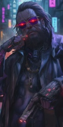
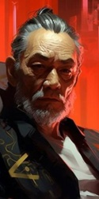

9. Шерлок
|
DungeonMaster
Valkorolessandra
02.10.2025 22:21 |
– Что значит до утра?! – ошарашенно откашливаясь просипел МакДи. – А потом? Volk, ты куда? Эй, не оставляй меня тут. Volk, давай дог… VOOOLK!
Лязгнув, железная дверь оборвала попытки недалекого ямайца продлить общение с Бишоффом. Каковые уже ставили под сомнение его душевное здоровье. Оставив хирургу бутыль, подвал и растяжку, а фиксеру из Минимализма пачку эдди, похитители отправились в Двадцатку, на встречу с Коми и Гонзо, а потом и дальше – к временному пристанищу, организованному находчивым ирландцем. ✦ ✦ ✦ – Пречистая дева! Что ты с собой сделал?! – сипло охерел Ковбой, с ног до головы оглядывая оборзевшего подростка с закидонами Давыдова. Однако, под нажимом Клода и Датча на порог пустил… В комнате тикали часы. В прихожей ровным рядком стояла мокрая обувь. Саттон сидел на банкетке и невозмутимо чистил выкидной пулемет. На призыв прошвырнуться с Коми в дождь многозначительно трехэтажно промолчал. Ричард отказался под предлогом присмотра за чужим домом. "А, шлемазл," – крякнул Кассел и принялся впихивать ноги в высокие ботинки. "И шо тебе не сидится". В сопровождении массивной фигуры соло, Давыдов метнулся в Маленький Китай. Исхак, даже не заметив возражений, вломился к фиксеру вместе с ним и вежливо поздоровался с Сяо Ху. Маленький Сяо Ху вежливо поздоровался с соло. Возникла неловкая пауза, которую Исхак поспешил прервать неопределенным взмахом руки в сторону Давыдова. На лице китайца отразилось понимание и он переключился на помолодевшего клиента. – Я не ждал тебя так рано, Коми, – пожаловался Сяо Ху, с фонариком проходя на склад. Через четверть часа он вернулся с коробкой. – Остальное завтра, да? Так и договаривались, да? Возразить было нечего. Да и что бы Эрвину делать с имплантами в коробке. Упаковав снарягу, двинулись в обратный путь. ✦ ✦ ✦ Пасифика. Клик-стрит. 20 февраля. Понедельник. 15:30 – Не курите мне тут! – строго объявил О'Коннел, час спустя, собрав всех на кухне уютной хибарки, пропахшей сандалом и лимоном. Вскоре на столе образовался десяток… чашечек с чаем. С блюдцами. – На скатерть не пролейте. Небольшой курортный домик на третьей линии поражал таким неуместным в НС и таким винтажным уютом. Мягкий диван, обилие старой техники, коллекция маскотов давно забытых, канувших в прошлое корп. Пара магнитиков из европейских городов на холодильнике, какая-то зеленая ботва в горшках на подоконнике, симпатичные тряпочки на полочках. Как? Где? Когда О'Коннел откопал хозяйку этого жилища. И ведь привел сюда всю шоблу.  В комнате тикали часы. За окном моросил дождь. В чашках остывал заваренный из листьев чай. Мерно позвякивала маленькая ложечка в огромных ладонях Кассела, размешивающего четвертый кусочек сахара. ✦ ✦ ✦ Пасифика. Кукольный домик. 20 февраля. Понедельник. 16:15 Морось лезла за шиворот, глушила звуки и заволакивала город туманом. Через все это с натугой прорывался рёв далекого двигателя. Звук постепенно приближался. И приближался. Стоило бы напрячься, но двигатель был один. Не Когти значит. Внезапно, прорвав мокрую завесу, на дороге объявился одинокий мотоцикл. Точнее, драндулет, бывший мотоциклом, дай бог, в прошлом веке. Дребезжа и чихая, этот срам господень пронесся мимо и завернул за угол Кукольного. Оттуда послышались звон упавших железок, кашель и ругань. Не иначе как драндулет отдал концы. Твердой, но слегка нервной походкой из-за угла показался Джонсон. На ходу кивнув Исхаку, который в ответ приложил к брови два пальца, номад выцепил из пачки сигарету и, закуривая, констатировал: – Я – мудак, но не настолько. – Он помолчал и вдруг захлопал себя по карманам. Нашарив запасную обойму, удовлетворенно крякнул и, затянувшись напоследок, нырнул в дверь вслед за остальными.  |
|
Andreas `Gonzo` Schreyer
Томми Аткинс
 03.10.2025 10:43 03.10.2025 10:43 |
Гонзо занялся наблюдением - он искал точку подключения к сети кукольного дома. Видеокамеры, как традиционный объект или что-то ещё, что позволило бы подключиться к сети.
|
|
Ральф `Датч` ван Бюрен
JasperCorax
 03.10.2025 14:26 03.10.2025 14:26 |
- Охренеть, - емко прокомментировал Датч увиденное в квартире, куда привел их Ковбой, - вот такого я не ожидал, тут же как музей из детства - чашечки, блюдечки, скатерть как до войны. У меня мама вот похожие скатерти любила, в горошек. Да тут курить, это, - казалось, от удивления или умиления штурмовик забыл как материться и перешел почти на нормальный язык, - это... себя не уважать, вот. Как насрать на пол посреди посреди репетиции Коми когда он особо крутой соляк запиливает. Ты это, дай еще салфетку вон на всякий случай, а тло мало ли. Жалко будет такую красоту испоганить. И это, передай своей мое уважение. Это ж какую силу духа и тягу к жизни надо иметь чтобы все так так обустроить посреди этого залитого по уши дерьмом города и мира. Молодец, Ковбой, шикарную бабу нашел, - и Ральф от души радуясь за чумбу, от души же хлопнул того по плечу.
Посиделки плавно подошли к концу, чай в чашках закончился, как и этот казавшийся мультиком из детства эпизод. Вздохнув, ван Бюрен встал и тщательно и со всей аккуратностью вымыл свою чашку и блюдце и вытерев полотенцем, как будто стирая следы своего присутствия и принесенных из-за двери серости и злобы, бережно поставил в мойку. Серый дождь, заливающий за воротник, вернул законника к насущным проблемам за секунду. Когда из мороси показался силуэт здания, Датч высказал свое предположение: - Пойду я осмотрюсь, вдруг тут еще какие ходы-выходы есть, чтобы наша птичка не свалила с насеста раньше времени, - и аккуратно, стараясь быть отгороженным стеной дождя от возможных камер, макстаковец обошел дом
Результат броска 1D10+10: 13 - "скрытность на всякий".
Результат броска 1D10+8: 16 - "внимательность на всякий". Результат броска 1D10+16: 24 - "внимательность Исхака" Датч обходит дом в поисках других выходов. Если находит, присылает сообщение на агенты Гонзо, Коми, Волка и Парочки, так как их точно проверили на наличие вирусов
|
|
Andreas `Gonzo` Schreyer
Томми Аткинс
03.10.2025 15:10 |
Услышав про квартиру с закрытыми шторами и выключенным светом, Гонзо загорелся идеей подключиться через эту квартиру к местной сети...даже если это и простое совпадение - совпадение в нашу пользу.
- Парочка, прикрой, сделай такое одолжение. Без тебя мне жутко одиноко.
Результат броска 1D10+7: 16 - "Сканируем".
Результат броска 1D20+11: 21 - "Электроника на замок запасного выхода" Результат броска 1D10+11: 17 - "А теперь D10" Подходит под окно впритирочку и сканирует сеть.
Убедившись, что под окном ловить нечего, отправляемся к пожарному выходу и пытаемся вскрыть электронный замок. |
|
Аня `Парочка` Колусевски
Masticora
 04.10.2025 16:11 04.10.2025 16:11 |
- Легко, - кивнула Аня головой в шлеме, - мы с тобой сейчас будем изображать парочку. - пошутила она.
Сейчас, когда ожидание и поиски кончились, она чувствовала себя как не съеденная с о старкой селедка, которую со стола снова кинули в море. Прикрываю Гонзо.
|
|
Клод `Volk` Бишофф
Haru
 05.10.2025 05:15 05.10.2025 05:15 |
Клод с порога рассматривал помещение, в которое их "охотно" пригласил О'Коннел. Для него всё выглядело настолько чужеродным, что словно одного только этого было достаточно для образования какой-то неосязаемой силы, навязчиво выталкивающей возрастного эджраннера обратно на улицу. И не то, чтобы ему никогда не приходилось видеть или даже посещать столь, или почти столь же уютно обставленные квартиры. Просто в то время это была обычная работа. И этого было достаточно, чтобы "породнить" его с их владельцами настолько, чтобы не оставалось никакой щепетильности в адрес их имущества. А сейчас, когда они словно по лезвию бритвы неслись в охотничьем азарте к цели, это насыщенное чужими чувствами помещение рывком выбрасывало из потока, вдребезги разбивало набранный темп. А то, что в другое, более расслабленное время показалось бы не более чем странной для Города причудой жизни, сейчас на контрасте выбивало дух.
Звон небольших чашечек донышками об блюдца вернул его в реальность. Неспешно, стараясь не думать об остающихся за ним и остальными влажных следах, он почти присоединился к остальным, но зацепился взглядом за пару магнитиков - их было недостаточно, чтобы сметь называть это коллекцией, а потому казалось, что за ними действительно был какой-то вес. Сняв один из них он с интересом повертел его в руках, силясь понять, сколько им лет. Когда-то подобное путешествие не было такой уж большой проблемой, но не в Красное время - давно уже нет. Те, кто мог позволить подобное себе сейчас... скорее были из тех, кто находился по другую сторону лезвия, с какой бы стороны его не держали. И все же он осторожно прикрепил его обратно. Потому что подумалось, как хотелось бы увидеть россыпь таких на совсем другом холодильнике. На том, к которому его давно не подпускали даже близко. И на котором у них пока, наверное, и не было шанса появиться вовсе. А теперь еще какой-то ублюдок грозился её этого шанса и вовсе лишить. Что он там вякал про другой Гарден? Да наплевать! Сейчас это не имело никакого значения. До тех пор, пока тот дышит! А уж Volk позаботится о том, чтобы это исправить. Позаботится о том, чтобы и у Максим не оборвалась возможность посмотреть мир. Конечно, если бы Клод был готов поверить подобным обещаниям из уст кого-либо в Найт-Сити, то может быть и сделал бы другой выбор, отступился бы. Но в жизни так не бывает. А теперь - теперь и вовсе самое время идти до конца. Оставленная им на столе посуда с едва ли пригубленным чаем осталась там же, в этом маленьком странном мире, которому не было места ни в знакомом ему Найт-Сити, ни в нынешних событиях, его окружающих. Впереди же сквозь пелену дождя проступала стена постройки, возможно, никогда и не видавшей лучшего состояния - такое впечатление вызывали многие дома в Городе, но для Пасифики это все равно было немного необычно. На месте сориентировались достаточно быстро, и в лоб в этот раз решили не лезть - их ждали. К их приходу готовились. И чем дальше они зайдут, тем больше ловушек их, наверняка, ждет. Но чем раньше они выдадут себя, тем меньше им будут давать возможности осмотреться. Помимо этого беспокоило другое - вычислив, как полагали, логово своего врага, они все равно знали недостаточно. Только предполагали, где именно он засел, но даже предположить не могли, сколько у него оттуда входов-выходов. Кому-то пришлось бы остаться снаружи. Возможно, когда они узнают больше, начать сжимать петлю вокруг его шеи - двигаясь к его норе с разных входов. Ну а пока - взять их под контроль.
Результат броска 1D10+10: 11 - "Тактика на необходимое оцепление: сколько людей и куда".
Результат броска 1D10: 10 - "Тактику они захотели, ага" |
|
DungeonMaster
Valkorolessandra
05.10.2025 12:58 |
Пасифика. Кукольный домик. 20 февраля. Понедельник. 16:30
Обнаруженная ван Бюрреном наглухо закрытая квартира на некоторое время сбила команду с курса. Решивший, что эти жалюзи неспроста, Андреас попытался подобраться поближе, заглянуть в комнату и, возможно, к чему-то подключиться. Но увы, кто бы ни жил (или, наоборот, съехал) в этой квартире, щелочки он не оставил. Мимо бодрой деловой походкой прошел Кассел и, коротко сообщив, что ничего не нашел, исчез за углом. Обойдя дом, Датч подергал дверь черного хода и, выяснив, что замок магнитный, передал находку специалисту, а сам отошел на улицу постоять на шухере. Андреас же, приобняв юную, обманчиво хрупкую на вид Колусевски, ненавязчиво увел ее за мусорные баки. Право слово, пара со стороны взгляды скорее отталкивала, чем привлекала. Ну неужели дед не нашел места поприличнее чтобы малолетку тискать. Дед же при этом тискал отнюдь не малолетку. Прекрасно понимая последствия подобных вольностей, он предпочел старую пожарную дверь. Непогода и отсутствие обслуживания сделали свое дело, небольшого разряда оказалось достаточно, чтобы ослабить магнит и, поймав момент, разорвать контакт. ✦ ✦ ✦ Дымя сигаретой, Бишофф мокрой тенью чернел под козырьком подъезда дома напротив, якобы прячась от дождя. Прицел обшаривал окна, кондеи и антенны Кукольного домика. Шесть квартир, 15 окон. Два из них закрыты жалюзями. В пяти горит свет. Глухой задний двор давал преимущество только тому, кто знает, можно ли там где-то спрятаться или куда-то пролезть. Что ж, живущий тут не один год, нетраннер наверняка знает все ходы и выходы в округе. А значит, если ловить беглеца, под наблюдением стоит держать все направления. Тем более, что где-то на соседних улицах у него может быть транспорт. Вот только людей не хватало. Да и окружить дом означало привлечь внимание любого патруля, будь то NCPD или шестая. Можно было поставить двоих на углах. Ну, положим, одного догнать и поймать шанс будет. Но если их больше, от таких дозорных прок будет только в своевременном уведомлении остальных. Отброшенный бычок коротко шикнул на мокром бетоне. Бориса этот Джет явно не самолично брал. Криса, видимо, тоже. Последнего, кстати, меньше пяти часов назад. Один, а, скорее, двое наемников у него есть. С ним ли они сейчас – это другой вопрос. А если не с ним, не наблюдают ли они сейчас за теми, кто ходит вокруг дома. И пока они планируют, как не дать ублюдку сбежать, они планируют, как захлопнуть их в ловушке. А если наемников не двое. А если нетраннер подкупил вахтера. А если из подвала туннель в другой дом. А если… слишком много если, а попытка только одна. Даже если сейчас за ними не наблюдают, проникновение будет стоить жизни Boris'у, а дальше… на рокере он не остановится, тут уж ему терять будет нечего. Вот только хватит ли ему людей, чтобы сделать что-то прямо сейчас. "Это – не заложник. Я в курсе, что вы на такое не купитесь." То есть он понимает, что за Boris'ом ему не спрятаться. Клод снова посмотрел на часы и время получения второго сообщения. Четыре часа назад он был там же, где снимал первое видео. Допустим, это было здесь. По крайней мере, здесь ему делали бодискульптинг и МакДи считал, что это место, где этот Джет живет. За четыре часа, при большом желании и возможностях, можно было доехать до мексиканской границы. Он или тут и готов или его тут давно уже нет и все, что их ждет – брошенная заминированная база. Так что весь вопрос в том, какой вариант он предпочел: бежать и скрываться до сделки или заманить и попытаться обнулить. Задняя дверь вскрыта, можно заходить со Скрытностью.
С таким адским провалом Тактики могу только запудрить мозги сомнениями. Тем не менее из очевидного: – Датч со своей Внимательностью других выходов не нашел, а больше никто Внимательность не кидал. – Чтобы оцепить жилую башню, нужно дофига народу. Но чтобы наблюдать за стенами, достаточно двоих на противоположных углах. – Вы привлекаете внимание. – Он узнал о том, что вы прижали МакДи порядка 5 часов назад. Если собрать монатки и удариться в бега – приемлемый для него вариант, он это уже сделал. Шанс, что все эти 5 часов он паковал чемоданчики и вот именно сейчас полезет в окно, стремится к нулю. А теперь внимание, девочки. Мне за вашу тактику думать не досуг. Так что НПС в вашем распоряжении. Привлекайте их к делу нарративно и кидайте за них проверки. Характеристики есть в таблице, если надо, вынесу в Досье. Сейчас докинула Исхаку Внимательность в посте Датча. Если хотите, писать и кидать кубы за НПС буду я, но вот решать, что им лучше сделать и на каком фронте они полезнее – ВАМ. Иначе у меня голова лопнет самой против себя играть. Так что распределите: Исхак, Ричард, Саттон, Ретро и в комментах к своим постам пишите, кого, куда и что ему делать. Состояние партии Показать содержимое Датч: 51/60хп, 11/11 броня
Аня: 58/60хп 11/11 броня Андреас: 50/50хп 12/13 броня Коми: 27/35хп 11/11 голова Клод: 40/40хп 10/11 броня Ретро: 50/50хп, 7/7 броня Ричард: 45/45хп, 11/11 броня Исхак: 55/55хп, 11/11 броня Саттон: 50/50хп 11/11 броня |
|
Ральф `Датч` ван Бюрен
JasperCorax
05.10.2025 14:42 |
Пройдясь вокруг злополучного дома и заметив похожий маневр Исхака, Датч вернулся к остальным и подождав пока соло также сделает круг, решил обменяться информацией:
- Ну что, ребе, нашел что? Сдается мне нет тут нихера кроме двух дверей. Но домик большой, все окна не перекроем. - Да хер там плавал, - отозвался Исхак, - не, тоже ничего, парадный вход, черный вход, который сейчас обрабатывают Аня с Гонзо, и все. Остальное либо окна, либо не считаются, оттуда разве что ребенок вылезет,- соло был собран, и даже не ответил на подначку в своей стандартной манере, отчего штурмовик почувствовал укол совести от несвоевременных шуток в момент когда надо сосредоточиться по полной, как в ави на задании. Ральф кивнул, подтверждая, что пришел к тем же выводам и задумался о том, как перекрыть пути отступления. Тем более что разведка хитрого и знающего это дело Клода тоже не принесла однозначных результатов. Слишком мало было людей, а если все делать по уму, то и внутрь идти некому. С другой стороны, если уж тот мудила в облике Бориса хотел отступать, то уже свалил. Но вот на шухере постоять все равно не мешало бы. Хотя бы на случай если местный вызовут копов или бандитов. Но вот проблема в том, что на шухере и стоять-то надо скрытно, а все они были очень уж колоритные и запоминающиеся, хотяяя: - Слышь, Ретро, я вот что подумал. Тут на шухере надо встать, а мы все палимся нехило. А вот если ты свой пердолет притащишь и будешь делать вид, что его чинишь, то и обосновать присутствие сможешь без проблем. Типа вот, байк сломался, не едет, смотрю че случилось. На случай если пока идем было кому сигнал подать. Надо бы еще кого-то поставить по другую сторону по-хорошему, но думаю, что в первую очередь отсюда полезут. Да и звук машин подъезжающих если что услышишь. А потом как начнется, присоединишься к веселухе. Я на агент путь запишу, а ты по сигналу к нам бегом, лады? Со всем своим арсеналом. - Предлагаю вот что - обратился штурмовик к остальным, - мы с Аней идем впереди, если что я зачищаю помещение гранатами. Остальные заходят парами за нами. Если там Боря и живой, чтобы его не ушатать достаю пистолет и прикрываю тушкой раз щит не нашли, благо броню обновил, хоть не сразу угондошат. План не блещет, понимаю, но если выживем, куртуазность будем добавлять потом когда в баре будем байки телкам травить.
Результат броска 1D10+10: 16 - "скрытность на вход в дом".
Результат броска 1D10+7: 13 - "скрытность Ретро если будет входить позже". - Датч предлагает оставить Ретро и кого-то еще на шухере и позвать его как огневую поддержку позже. И кого-то еще если останется. Как на всякий случай если кто свалит с дома, так и подать сигнал внутрь если все же кто-то вызовет ментов или бандитов. Датч записывает на свой агент путь внутрь чтобы потом переслать с сигналом, и те, кто будут снаружи, могли его повторить
- Предлагает заходить парами, первая пара - Датч с Аней. Если есть чужаки, но нет Бориса, Датч накроет комнату из гранатомета из коридора Тратим 120 опыта на Скрытность +3 (итого 11), остаток - 20 опыта |
|
Andreas `Gonzo` Schreyer
Томми Аткинс
05.10.2025 19:45 |
Андреас кивнул Датчу и стал ждать результатов захода первой пары:
- Помните, что наша цель не на первом этаже, там нужна лестница вниз, в подвал. Удачи. Если все будет тихо тут и там, идем за вами через... Тридцать секунд. |
|
Аня `Парочка` Колусевски
Masticora
06.10.2025 03:50 |
Аня молча кивнула. Она была уже вся в работе. Оружие в руках, ускоренная работа сердца и легких, легкий азарт на фоне сосредоточенности. И пускай ее тело еще находилась здесь, мысленно она уже была там.
Результат броска 1D10+14: 17 - "скрытность".
Аня пошла.
|
|
Эрвин `Коми` Давыдов
Хэлсэ
 06.10.2025 10:05 06.10.2025 10:05 |
– Пречистая дева! Что ты с собой сделал?!— Готовлюсь к встрече с патологоанатомом – мрачно прокомментировал Давыдов замечание Ковбоя. – Надеюсь, ублюдок плотно привязан к своей аппаратуре и не покинет гнёздышко.
Стоять на улице пришлось не долго. Мелкий дождь кропил по запотевшим панорамным окнам и блестел разноцветной гирляндой неона. Коми стоял под брезентовым навесом у чёрных пластиковых дверей магазина пластинок. У здания напротив остановился серый седан, из которого показалась гладкая лысина Исхака, прикрытая со всех сторон широким воротником. Спустя секунду лысина скрылась под плотным капюшоном броне плаща соло, а следом из машины вышел чуть согнувшийся Саттон. Коми перебежал дорогу и, пожав руки боевым товарищам, направился в сторону временной базы. Вопросов никто не задавал, толи погода не располагала, толи каждый считал, что трепаться на улице не лучшая идея. Войдя в прихожую, Эрвин подождал, когда новоприбывшие разуются и повесят верхнюю одежду на вешалку, а после произнёс: — Что ж, в том, как брать цель вы разберётесь и без меня, а мне нужно заскочить на район, забрать пару игрушек. - Ты это, чум, прихвати кого с собой что ли, да вон рыжего того, который мне виски еще в лаборатории зажал, нехер ему тут своей рожей светить раньше времени.О`Коннел весьма уместно заметил, что ответственность за квартирой лежит на нём, и Датч вполне и сам бы мог составить компанию «юному» рокербою. Но тут вызвался Исхак. «Ему пора бы уже платить за халтурку телохранителя», заметил Коми про себя. Ехали молча, Исхак лишь поинтересовался, что Коми собрался взять и что по ценам, после чего какое-то время помолчал, а после изрёк. - Не мне считать чужие деньги, приятель, но позвони ты мне, я нашёл бы, где сэкономить. Коми ничего не ответил, продолжая смотреть в стекло напротив. Город мелькал тысячами огнями, тенями и силуэтами новых и старых домов, скрывался в подземных тоннелях и вновь возникал всем своим уродливым разнообразием. Офис Сяо располагался в маленьком подвальчике небольшого фитнес центра одного из бонз триад. Плотная железная дверь внизу лестницы, у которой на хлипком пластиковом табурете всегда сидел кто-то из новобранцев банды. Увидев, с какой уверенностью массивная фигура соло направилась в подвал, парень даже не попытался сказать что-то против, на мгновение прикинувшись ничего не замечающим обывателем. – У меня назначено, - обратился к нему Коми, спеша следом за Касселом. – Я не ждал тебя так рано, Коми.– Не я распоряжаюсь временем, Ху. Иногда просто приходиться бежать следом за ним. Пока китаец возился на складе, Давыдов, сидя на небольшом пуфике рассматривал скринлист с местной прессой. Бао Шань выделил сотню тысяч эдди на восстановление школы в Вайне. Делает вид мецената, хотя это его парни влупили по школе из милитеховского гранатомёта во время ухода от преследования NCPD. И всё же… Даже такое меценатство не то, что бы частое явление в NC. – Остальное завтра, да? Так и договаривались, да?– Да, ты уже нашёл покупателя? – ответил Эрвин, попутно демонстрируя достанный из тайного отсека в синтезаторе МодФайер. – Как видишь, товар стоит затраченных усилий. Но! – Коми убрал оружие обратно, попутно закидывая синтезатор за спину. – Всему своё время. *** Дождь только сильнее стал лупить по зеркальным лужам под ногами. Коми отстукивал пяткой прямую бочку в 110 bpm, с хлюпающим звуком разбрызгивая воду в разные стороны. Клод наблюдал со стороны, оценивал… Продумывал… Призрак воспоминаний о морге не отпускал рокербоя даже спустя столько лет. Всякий раз, стоит ему оказаться в ситуации, когда проблему можно решить только грубой силой, он становился безвольным пассажиром, как и тогда. Что, подобный ему может предложить этим закалённым войнами и уличными разборками бойцам? Разве что сыграть реквием по тем, кто рано или поздно допустит ошибку. Датч что-то говорил, пока Коми бубнел еле слышно заевшие строчки: Моя шкурка стоит эдди, Придержи-ка свои плети Подожди, настанет вечер Ты узнаешь, что не вечен… – … будем добавлять потом, когда в баре будем байки телкам травить.– Пожалуй, я лучше займусь привлечением внимания со стороны парадного входа. – дополнил план, рокербой. – О`Коннел, зайдёшь со мной? Прикинемся съёмочной группой, ищущей атмосферное место для клипа. Не разъебитесь там, этот мудак плотно засел внутри и вряд ли не озаботился безопасностью. Волк говорил, что МакДи подозревал сетевой дозор. Если он их агент, на выходе нас может ждать кавалерия, поэтому… Возможно… Стоит сохранить ему жизнь. Хотя бы на время. Закончив напутствие, рокербой направился в сторону входа, попутно достав баллончик со светящейся красной краской из рюкзака. - Эй, Ковбой, помнишь, как выглядела эмблемка танцующих, ту что рисовали на флаерах? - Парень с дорожного знака с поднятыми руками? - Держи, — Коми протянул баллончик Ричарду, попутно разводя руки в стороны. – Херач поверх брони. Соло вскинул бровь над единственным живым глазом. Но после чего в пару движений очертил круг прям поверх чёрной плотной ткани бронежилета и красного человечка в центре. - Детский сад, — прокомментировал он, возвращая баллончик владельцу. - Штаны на лямках, — вспомнил старую советскую присказку Коми, попутно идя в сторону главного входа. «Тук-тук, я уже рядом, скотина». |
|
DungeonMaster
Valkorolessandra
06.10.2025 21:46 |
Пасифика. Кукольный домик. 20 февраля. Понедельник. 16:50
- Слышь, Ретро, я вот что подумал. Тут на шухере надо встать...Номада аж скрючило сперва от такого предложения. – Ты чо, уже списал меня, ниггер, да? Однако Датч умел… не, не убеждать. Просто его сложно было игнорировать. Поэтому все, что он говорил, приходилось дослушивать до конца. Может и вправду было в нем что-то голландское, но именно в конце обычно оказывалось самое важное. Так что перекошенное лицо Ретро, сперва взиравшего на макстаковца снизу вверх, словно крыс на попутавшего берега кота, постепенно разгладилось. – Ну, разве что если так. Ты не думай, пердолет на ходу. Ну… пешего догнать успею прежде чем развалится. Но если ты, афроскотина, забудешь мне позвонить, за новыми яйцами побежишь к Кевину. Пнял? Я, блядь, не для того своих наебал и сюда полдня добирался чтоб веселье пропустить. Набычившись, Джонсон выкатил драндулет на улицу и устроился на мостовой, всем своим видом сигнализируя окружающей среде, что вертел он ее на хую вместе с ее дождем и всеми любопытствующими, а сидеть он тут будет день за днем, месяц за месяцем, пока не починит свое ведро с болтами. ✦ ✦ ✦ Над дверью брякнул колокольчик. Тускло освещенный коридор уходил вглубь дома, слева теснилась узкая стойка, за ней – дверь в каморку. С курток рокеров стекала вода. В тесной приемной тут же стало влажно и душно. На месте вахтера никого не было. Какая удача… – И-иду-иду! – послышался юный, бодрый и какой-то свойский голос и из распахнувшейся двери показался молодой человек. Осмотрев вошедших, он бросил нервный взгляд в угол, где висела камера и уже более официальным голосом уточнил у Коми: – Чем могу быть полезен?  ✦ ✦ ✦ В то же время с тыла, соблюдая все возможные меры предосторожности, в Кукольный домик проникли Датч и Парочка. Войдя, они сразу оказались на лестничной площадке, с которой одна лестница поднималась наверх и уже через 5-6 ступеней заканчивалась полом первого этажа, другая – уходила вниз и упиралась в закрытую решетку. Услышав голоса в дальней части дома, бойцы не замедлили спуститься ниже, чтобы не отсвечивать под лампой. Через полминуты к ним присоединились Андреас и Исхак. Датч. Ретро оставлен на шухере.
Датч, Парочка, Андреас, Исхак и, при желании, Клод и Саттон, вошли в заднюю дверь и спустились по лестнице до решетки. Из коридора их при этом не видно. Учитывая маневр Коми, скрытность можно не кидать. Лестницу перегораживает решетка с механическим замком. Вскрыть силой можно, но будет шумно. DV Взлома замков 11. Коми, Ричард. К вам вышел милый ухоженный мальчик. Состояние партии Показать содержимое Датч: 51/60хп, 11/11 броня
Аня: 58/60хп 11/11 броня Андреас: 50/50хп 12/13 броня Коми: 27/35хп 11/11 голова Клод: 40/40хп 10/11 броня Ретро: 50/50хп, 7/7 броня Ричард: 45/45хп, 11/11 броня Исхак: 55/55хп, 11/11 броня Саттон: 50/50хп 11/11 броня |
|
Andreas `Gonzo` Schreyer
Томми Аткинс
07.10.2025 10:26 |
Андреас возблагодарил судьбу за невнимательность вахтёра - скрытное передвижение не относилось к числу его добродетелей. Но дальше. Но дальше, извини, стена - брандмауэр с одним окном, так сказать.
- Клод, сможешь превозмочь замок? Я помогу как могу, но тут нужны чуткие руки хирурга.
Результат броска 1D10+5: 10 - "Помогаем Клоду вскрыть замок".
|
|
Эрвин `Коми` Давыдов
Хэлсэ
07.10.2025 11:48 |
Коми достал диктофон, не обращая внимание на паренька. Бросил его в сторону Рича, а сам достал из за спины синтезатор.
- Аккустика у вас тут... Эу! Эу! - крикнул рокербой, хлопнув вместе с тем ладошами, прислушался, ловя каждый отголосок стен, и снова прокричал - Перфекциональсть! Нет... Говно. Эй, да не стой ты тут, пройди к той стенке... Слушай, малой, не мешай. Всё обговоренно... У вас тут типо призрачные звуки записать можно, дай проверю... Давыдов в пару мановений запустил синтезатор на максимальную громкость и наиграл аккордами припев Архангела Самураев. - Ну что там, записал? Давай теперь с драмкой!
Результат броска 1D10+4: 13 - "харизматичное давление".
|
|
DungeonMaster
Valkorolessandra
07.10.2025 17:21 |
Как и любой нерешительный человек, оказавшийся вдруг в вихре деятельности того, кто точно знает, что делает, паренек застыл, приоткрыв рот и машинально отошел на пару шагов, во все глаза глядя на размалеванного свежей краской рокербоя и его синтезатор. А когда в гулком коридоре отгремело эхо аккордов (а также стих вопль "это кто там охуел?" из одной из квартир), момент был уже упущен и возмущаться было поздно.
– Ого, – наконец ожил он. – Это же… – он порылся в памяти, но хвостики узнавания ускользнули, оставив его ни с чем. – Отрыв! А… – он опять подвис, – а что, мистер Гадински в курсе? Чета он мне ничо не сказал. – Может забыл? – Ричард делово прошелся по коридору, трогая пальцами стены. – KA-PI-TAL – продекламировал он хорошо поставленным голосом, закончив на нарочито твердой "L". И резко повернулся ко входу. – Мы вообще в среду должны были зайти. Но вот, успели сегодня. – Йиииииииии-ха! – Вдруг выдал Ковбой, оправдывая кликуху и нахмурился. – Надо подальше отойти. Давай-ка еще раз. Не-не, ты стой там. Тебя как зовут? – Ян. – Стой там, Ян, поможешь. Слушай внимательно, потом сравнишь. Ян послушно остался на месте, глядя на то как Коми выдает очередной аккорд и разглядывая эмблему у него на груди. Видимо, и она ему ничем не помогла. – Да сколько можно??!! – раздалось из той же квартиры. – Заткнись, Эл!! – немедленно откликнулся Ян. И совершенно другим тоном обратился к рокеру: – А вы кто? В смысле че за бэнд? Где играете? Я бы пришел, послушал. – В интонациях Яна появились какие-то отголоски личного интереса. Эрвину показалось, что тот пришел бы на концерт даже если бы он играл гребаную Katjushu. Коми завоевал исключительный интерес вахтера.
Тусня у задней двери может даже взломать решетку атлетикой с DV 15, попав в аккорд рокера и спалится только на крит-провале. |
|
Клод `Volk` Бишофф
Haru
07.10.2025 17:30 |
Их противник должен был бы очень сильно верить в себя, если все еще продолжал ждать их в своем, предположительно, логове. Но вот только им ничего и не оставалось, кроме как пойти проверить лично. В других обстоятельствах Клод бы настойчиво предлагал действовать быстро и дерзко. Вошли и вышли, не оставляя за спиной свидетелей. Но не сейчас, когда их, очевидно, ждали. И если Джет и не срисовал их на подходе, то это все равно не отменяло загодя приготовленных сюрпризов для незваных гостей.
- Под ноги смотрите, - буркнул он тем, кто выдвинулся вперед, хотя там и без него были ветераны, съевшие на этом последнюю в городе собаку. Но до первого препятствия добрались без ярких происшествий. - Профессионалы... - дополняющее мысль ругательство не сорвалось с языка. - Ну да, кто куда, а форточник по бабам. Ладно, дай гляну, но хрена с два я что обещаю.
Результат броска 1D10+7: 14 - "Взлом".
Результат броска 1D10+7: 12 - "Скрытность". |
|
DungeonMaster
Valkorolessandra
07.10.2025 18:41 |
Пасифика. Кукольный домик. 20 февраля. Понедельник. 17:10
Видавший виды плащ на минуту скрыл часть решетки и замок. Послышался тихий звон и скрежет, прильнув к прутьям и прижав всю конструкцию, чтобы не громыхала, Volk дернул плечом, поднажал и калитка распахнулась. В подвале света уже не было, а отсветы с лестницы перегораживали фигуры налетчиков. Фонари соло осветили технический этаж. Трубы, узкий коридор, распределительный щиток, система нагрева воды. Беглый осмотр не дал ничего. Ни ловушек, ни прохода вниз. Лестница с первого этажа здесь и заканчивалась – бетонный пол и скошенная дверца, закрывающая каморку под ступенями. Андреас медленно шел по этажу держась за Парочкой и сверяясь с выкаченным из сети планом. План был похож на правду. Одно из мест, намеченных им как возможный путь вниз, оказалось занято котлом. Не подлезешь. Другое перегораживала бетонная коробка, запертая на железную дверцу. На облупившейся краске висела треугольная табличка с молнией. На замке – пломба. В принципе, можно и сорвать. Но зачем, если оставались еще двери без пломб. Под лестницей была кладовка. В кладовке – швабры, ведра, обрезки труб, мотки проводов, огнетушитель и лопата. А также куча мусора, развалившиеся на листки старые журналы, какие-то засохшие тряпки, куски рубероида и прочий хлам. Ничего. На первый взгляд – ничего. Но если знать, что искать, можно найти гораздо больше, чем видно на первый взгляд. Шрайер, кряхтя вылезал из кладовки, когда почувствовал, что пол под ботинками отозвался каким-то неправильным звуком. Взяв швабру и раскидав ею листки, он обнаружил квадратный цементный люк, заподлицо вделанный в пол. Попавшая под каблук крышка от пивной бутылки скрежетнула о раму, вот почему звук был неправильный. 1) Открыть люк в кладовке под лестницей
2) Вскрыть опломбированную дверь с молнией на табличке Обход этажа занял минут 15-20. Коми как, продолжает концерт по заявкам или они с Ричем сворачиваются? |
|
Ральф `Датч` ван Бюрен
JasperCorax
08.10.2025 14:58 |
Как только Бишофф продемонстрировал еще одну грань своего таланта и замок открылся, штурмовик аккуратно похлопал его по плечу и наготове со своим тяжелым пистолетом зашел внутрь. Затем подмигнув Бишоффу достал набольшую монетку и полождил на контакты:
- На всякий случай. Чтобы Ретро и Коми вошли, а мы вышли в случае надобности. Убедившись, что все в порядке, кивнул и встал в позицию, удобную для прострела двери на случай если кто чужой ломанется за ними. Подождав пока все закоулки будут разведаны, а дверь так и не найдена, но зато найдены два потенциальных претендента на замаскированный спуск, Датч попросив Аню подменить на шухере, увязался хвлстиком за Гонзо и тоже осмотрел оба места, пытаясь понять, а не скрывали ли там что-то особенное после чего вернулся на свой пост, приняв участие в обсуждении и в основном слушая что скажут более знающие в таких делах чумбы
Результат броска 1D10+8: 11 - "внимательность на люк".
Результат броска 1D10+6: 13 - "раскрытие объекта на люк". Результат броска 1D10+6: 11 - "раскрытие оьхекта на щиток". Результат броска 1D10+8: 9 - "внимательность на щиток". Результат броска 1D10: 3 - "минус внимательности на щиток за крит провал" Результат броска 1D10+10: 19 - "подрывник на люк" Результат броска 1D10+10: 20 - "подрывник на щиток" Результат броска 1D10: 3 - "доброс подрывника за крит" не, ну а вдруг
дааа... Вдруг не получилось, со щитком так точно |
|
Andreas `Gonzo` Schreyer
Томми Аткинс
08.10.2025 15:02 |
Прежде всего Андреас со всеми предосторожностями вскрыл распределительный щиток и попытался понять, куда от него идет питание. С некоторой задумчивостью посмотрел на крышку от пивной бутылки - нет ли на ней даты выпуска? Изучил пломбу - давно ли она повешена?
Ну и, конечно, попробовал сканировать - нет ли тут следов сети?
Результат броска 1D10+7: 10 - "Сканирование".
|
|
DungeonMaster
Valkorolessandra
08.10.2025 18:45 |
Щиток, конечно, был заперт на замочек, но разве такая мелочь может остановить специалиста по безопасности. В щитке Шрайера ждал Ктулху проводов. Ему сразу захотелось вытащить из штанов ремень и хорошенько отходить рукожопа, который тут это все навертел. Что ж, тем легче было нелегалу подрубиться к сети и распределить нагрузку. Вздохнув, Андреас повертел в руках крышку. Даты на ней не было, но с бутылкой она рассталась явно не вчера. Впрочем, весь остальной хлам кладовки свидетельствовал о том, что тут вообще порядок не очень любили. Неприятно. Луч фонарика ван Бюррена осветил пломбу, которая тоже появилась тут давно и успела зарасти пылью. Осмотревшись оцифрованным взглядом, Андреас ничего интеллектуального в окружающем электрооборудовании не обнаружил.
Тем временем, Исхак ощупал края люка, кряхтя, опустился рядом с ним на карачки, осмотрел металлическую раму и, не найдя, видимо, ничего подозрительного, ухватился за кольцо и тихонько потянул. Надо же, ничего не взорвалось. И даже не зазвонило. Внизу было темно. Сбоку от люка вниз уходила металлическая лестница. Дальше, насколько хватало фонаря, в сторону угла дома уходил коридор.
Результат броска 1D10+16: 26 - "Внимательность Исхака".
Чтобы разобраться в электрощитке, нужно потратить час времени и в конце бросить проверку Знания техники с DV17.
Исхак осмотрел люк, открыл его. Ловушек не обнаружено. Под ним коридор, идущий вдоль короткой стены дома. |
|
Аня `Парочка` Колусевски
Masticora
09.10.2025 03:20 |
Естественно, Аня спустилась первой. Со всей осторожностью. Было бы глупо нарваться сразу, ведь сейчас у них был реальный шанс надрать задницу главному негодяю этой запутанной истории. Оружие в руках и снято с предохранителей.
Результат броска 1D10+16: 18 - "внимательность".
|
|
Эрвин `Коми` Давыдов
Хэлсэ
09.10.2025 09:14 |
Позволить творческому человеку говорить о творчестве и себе, всё равно что сорвать резьбу на кране. Одно тянет другое, охватывая всё и ничего, а если при этом что-то можно продемонстрировать...
Одним словом, в какой-то степени Коми мог бы сказать, что неплохо провёл время, посвящая молодую поросль в тонкости распространения звука и важности фонового эмбиента. - Слушай, до меня доходили слухи, что в одной из квартир выше какой-то парень, не помню точно, кажется из Биотехники, после увольнения вскрылся и провалялся там с пару недель, не оставив никакой предсмертной записки, - рокербой старался изобразить голосом жуткую таинственность. - и вот из этой квартиры иногда доносятся жуткие стонущие звуки не упокоенного корпората, не подскажешь, где именно? Может пройдёмся, это не на долго, а ты для сопровождения, подтвердишь Гадински, что мы никуда не лезли сверх обговоренного. Мне пиздец как надо поймать тот самый звук, у нас с Sony контракт намечается, просят охуенный сингл, и, помяни моё слово, это будет разъёб. |
|
Ральф `Датч` ван Бюрен
JasperCorax
09.10.2025 12:09 |
Убедившись, что трое соло уже внизу и не нуждаются в прикрытии сверху, Датч сунул свой пистолет в нагрудную кобуру и достал свою любимую милитеховскую игрушку крупного калибра после чего спрыгнул вслед за Парочкой в люк, мягко и почти по-кошачьи тихо приземлившись в приседе на подошвы своих тяжелых ботинок. Человек со стороны, не знавший ван Бюрена наверняка не ожидал бы такого от грузного штурмовика, но годы практики давали о себе знать даже вопреки некоторой тучности законника.
Уже внизу Датч скинул Ретро условный сигнал вместе с видеозаписью пути и просьбой посмотреть шкаф, на что получил несколько матерных комментов. Тем не менее номад, пригнув голову, аккурато и тихо прошел вслед за основной группой, на всякий случай оставив монетку на контактах, чтобы создавалась иллюзия того, что дверь также на замке, но фактически путь к отступлению был открыт на всякий случай. Замаскировал как мог в общем. Чтобы их там не поймали как в большой каменной мышеловке. Такие мышки, конечно, стали бы активно и опасно огрызаться, но на каждую мышку найдется свой кошка. После спуска номад, матерясь и костеря про себя маму, бабушку и прочих родственников по женской линии "этого черного засранца", приступил таки к осмотру шкафа
Результат броска 1D10+5: 9 - "Ретро - скрытие объекта на цепь и замок, маскируем".
Результат броска 1D10+11: 13 - "Ретро - знание техники на шкаф". - Датч меняет оружие на гранатомет и спускаемся вслед за Аней, прикрывает группу дальше
- Ретро пытается создать иллюзию того, что замок не открывался, но скидывает на агент Коми инфу о том, что фактически дверь открыта. - Применяет знание техники на шкаф на всякий |
|
DungeonMaster
Valkorolessandra
09.10.2025 22:24 |
Пасифика. Кукольный домик. 20 февраля. Понедельник. 17:10
Обследовав люк и пространство под ним, Исхак буркнул "чисто" и, кряхтя, выбрался из каморки. Куда немедленно шмыгнула Прочка. Юркая соло, быстро перебирая ногами, спустилась по лестнице и оказалась в темноте. Отблески фонарей лишь дали ей понять, что она оказалась в узком коридоре. Следом в люк протиснулись Кассел и Саттон, чьи кустистые брови подсвечивал огонек сигары. Луч фонаря осветил крашеные стены. Почти сразу за спиной коридор упирался в глухую стену, впереди шел, видимо, до стены дома и поворачивал направо. Когда сверху спрыгнул ван Бюррен, под люком стало совсем тесно. Внимательно глядя под ноги, да и вообще на все вокруг, Колусевски медленно двинулась вперед. Андреас попросил у Кассела фонарик и, пробежавшись лучом по стенам, не нашел ни точек доступа, ни вообще проводки. ✦ ✦ ✦ Многозначительно усмехнувшись Коми, Ричард покивал, послушал и сказал, что выйдет пока покурить. Ян же после нескольких воплей из квартир пригласил рокера в каморку за стойкой. Чтобы людям не мешать. Не все же понимают.  В комнатушке оказался замызганный диван, полки, телик, небольшой холодильник и дверь, видимо, в санузел. – Чиво? Какой мужик вскрылся? Да гон это. – Ян, презрительно махнул рукой и заглянул в холодильник. – Пиво будешь? – Он примостился на подлокотник дивана и с видом знатока продолжил, – а вот из подвала действительно иногда звуки доносятся. Сам слышал. Гадински даже вызывал техника. Но тот сказал, что надо менять вентиляционные трубы. А это дохера эдди. Ну и все забили. Даж не знаю. Можно в подвал спуститься. Там стены бетонные, может, если опять в трубах завоет, будет тебе звук, – он усмехнулся, разглядывая собеседника, – призрачный. ✦ ✦ ✦ В то же время, влекомые одним делом, но с разных сторон к задней двери Кукольного домика подошли Ретро и О'Коннел. Осмотрев дверь, они сняли монетку, оставленную Датчем, с деловым видом зашли внутрь и положили монетку на место. После чего так же незаметно открыли решетку. Ретро при этом пошел в подвал, а Ричард тем же путем вернулся на улицу и вскоре вошел в приемную. Звякнул колокольчик. Привстав с дивана, Ян посмотрел, кого еще там принесло, но, убедившись, что это один из рокеров, сел обратно. Клод, Аня, Андреас, Датч, Ретро, Исхак, Саттон: вы на -2 этаже, под лестницей, в узком (метра 1,5 шириной) коридоре, который уходит до угла дома и поворачивает направо. Ни ловушек, ни точек доступа не обнаружено.
Коми. Ян заманивает ничего не подозревающего музыканта в подвал послушать "те самые звуки". Картинка передает стиль места, но не шибко соответствует планировке. |
|
Клод `Volk` Бишофф
Haru
09.10.2025 22:49 |
Что ж, это вряд ли был единственный выход из логова, но, можно было надеяться, это был тот из них, который станет для них входом. Конечно, хотелось полной уверенности, но приходилось довольствоваться тем, что есть. И потому Volk выбрал подстелить соломку сейчас, чем пожалеть позже. Пока остальные безмолвно определялись с дальнейшим маршрутом, он откинулся спиной на стену и, выставив перед собой сумку, поочередно выудил из неё два препарата. Первым в аэрогиппо отправился Стимулятор - этот нуждался в точности, которую вряд ли здесь кто-то мог обеспечить помимо него самого. Давненько ему не приходилось к нему прибегать, почитай, со времен, когда Never More по полной зажигали на улицах. Устраивали не без его помощи хороший такой сюрприз очередным помоечным бустерам, продолжая идти на пролом в худших из ситуаций. Кое-кто тогда еще посчитал их хромированными по самые яйца, но хрена там - как бы им не было весело, столько бабла им не снилось даже в лучшие ночи. А вот его химия - это другое дело, которое она делала исправно.
Дозу следующего препарата он чуть задержал в ладони и покрутил перед глазами. Это было кое-что совсем другое. В молодости, конечно, отрывались они дай бог, но на дешевую уличную дрянь из них подсел мало кто - и большинства из тех, наверное, сейчас уже с ними нет. Но Клод-то был еще здесь, пусть и не в лучшей форме, зато в достаточно трезвом уме, чтобы уметь оценивать шансы. И вот эту грязь он не просто так держал на черный день, и не просто же так не притрагивался к ней все эти годы. Зато вот сегодня утром, собираясь перед поездкой к МакДи, закинул в сумку. Синтококс совсем не расслаблял, скорее напрягал, менял восприятие мира, делая его четче, но и не правильнее. Но когда нужно было вломиться с ноги на встречающую ощерившимися стволами хату - все средства были хороши. Даже такие. Пока химия только разгоняясь бежала по крови, Volk молча тихонько постучал пустым аэрогиппо по бетонной стене, привлекая внимание. И, поймав обращенные на себя взгляды, вопросительно приподнял его перед собой. Не все, конечно, догадались бы сразу, о чем речь, но приложив усилие должны были уловить сделанное им предложение. Когда подошло время спускать вниз, Клод, пусть и не в первых рядах, делал это с винтовкой на изготовку. Вперед остальных его не пускало понимание того, что пока он зарабатывал по-своему, кое-кто из них делал это по старинке, и случись что - обойдут его на голову в результативности. Потому и за спиной их оставлять что-то расхотелось. Разбирайте подарки:
Стимулятор (еще 4 дозы) Показать содержимое При введении дозы Стима цель может игнорировать все штрафы от состояния тяжелого ранения в течении часа. Человек может получить пользу только от одного применения в день.
Синтококс (еще 1 доза) Показать содержимое Основной эффект: РЕА +1 на 4 часа. Становитесь склонны к параноидальным идеям.
Вторичный эффект (по окончанию основного): DV 15. При провале - пристрастились к Синтококсу. РЕА -2 и периодическая ломка. |
|
Эрвин `Коми` Давыдов
Хэлсэ
10.10.2025 09:45 |
- Серьёзно? Вентиляция в подвале? - Коми не притрагивался к пиву, внимательно изучая повадки паренька. - Наверное и в подвал не спускался, на глаз диагноз ставил. Наслышан я про ваш кукольный домик, честно, сам всё никак не решался сюда сунуться, но, сука... Лейбл! В НС и за меньшее под пули лезут, а тут всего то, попытаться записать какую-то мистическую лабуду. А ты сам то в подвале бывал? Нам туда точно можно?
Результат броска 1D10+6: 12 - "Проницательность".
Результат броска 1D10+14: 16 - "Убеждение". Проницательность - а чего это он на камеру сначала смотрел, а теперь в подвал нас тащит? Там в подвале лючок то спрятан и электрощиток, кого попала не нужно туда тащить, аки спустимся, а он лючок возьмёт и прикроет.
Мы, если туда и пойдём, то сначала его попросим спуститься (убеждение), что б залез, свет включил, я ж знать не знаю чего там, а мы уж следом последуем. А не полезет... Допустим Коми спустится первым, а О`Коннел пусть рядом с парнем постоит, присматриваясь внимательно и ежели что, пусть заламывает и к нам в подвал сбрасывает. |
|
Ральф `Датч` ван Бюрен
JasperCorax
10.10.2025 10:48 |
Датч наконец вошел в полностью боевой режим, и даже перестал отпускать свои сальные шуточки, одна из которых, как он сейчас понимал, на короткое время стянула маску с похитителя Бориса, но этого тогда ни он, никто другой не заметил. Вместо этого штурмовик превратился весь во внимание, и потому сразу услышал легкий стук аэрогиппо по стене. Поняв намек Бишоффа, молча подошел и глянул на "подарочки", которые медтех предлагал на этот раз.
Покачав головой на синтококс, у казал на стимулятор и подставил левое предплечье. Кто знает, что ждет внутри и потом снаружи. А час это при их текущем раскладе очень много, не просто линия между жизнью и смертью, а мини-жизнь сама по себе, можно сказать. Получив свою дозу, штурмовик вернулся на предыдущее место в импровизированном строю. Все же не армейское подразделение, но многие годы плечом к плечу научили из работать слаженно и без вопросов в любых условиях. - Датч берет дозу стимулятора
|
|
Andreas `Gonzo` Schreyer
Томми Аткинс
10.10.2025 14:14 |
Андреас не стал брать стимуляторы, поскольку слабо верил в то, что ему придётся стрелять. А уж если дойдёт до этого - то себе в лоб он уж как-нибудь попадёт и без химозы.
Он шёл за представителями силовых ведомств, шёл, а цели всё не было и не было и его начинало понемногу колотить. Держись, брат. Тебе ещё потребуются все твои навыки, верю в это...держись.
Результат броска 1D10+14: 24 - "Внимательность: Нет ли чего интересного насчёт замаскированных люков"
Результат броска 1D10: 10 - "Критикал " Результат броска 1D10: 8 - "Ещё критикал" |
|
DungeonMaster
Valkorolessandra
10.10.2025 16:20 |
Пасифика. Кукольный домик. 20 февраля. Понедельник. 17:15
А ты сам то в подвале бывал? Нам туда точно можно?– Бывал… Хах, конечно нельзя. Но мы же никому не скажем, так ведь? А приятель твой на шухере постоит. М? – Ян поднялся с дивана. – Пошли. Да не ссы ты, ничо там нет. Коммуникации. Старые. Вот и барахлят. Дому хер знает сколько лет, он же взрыв пережил. Он выдвинул ящик одной из полок, порылся там, достал фонарик и обернулся, готовый проводить музыканта вниз. Будь он чуток повнимательнее, он, может, и заметил бы, что взгляд, которым рокербой следил за ним тоже пережил взрыв. И не только его. Однако, как успел заметить Коми, изучение было взаимным. Вот только цель у Яна была совершенно иной. Не увидев явного отторжения со стороны рокера, он теперь пытался найти повод продвинуться дальше на нелегком пути их внезапного знакомства. И выяснить, отсутствие реакции на его осторожные сигналы вызвано тупостью или все же взаимным интересом. По всей видимости, совместная прогулка в подвал должна была каким-то образом прояснить этот вопрос. По крайней мере, Ян возлагал на нее большие надежды. Каморку Ян, когда Коми вышел, запер на ключ. Лениво похлопывая себя по бедру фонарем, он направился к черному ходу, где спустился по лестнице до решетки. Достав ту же связку ключей, вставил один в замок, повернул, дернул. Решетка не открылась. "Не понял…" Снова вставил ключ, повернул, решетка открылась. Пожав плечами, Ян спустился в подвал и щелкнул выключателем. ✦ ✦ ✦ Тем временем, этажом ниже наширявшаяся группа многоопытных эджраннеров подошла к углу здания. В свете фонарей уже отчетливо был виден проход направо. Его закрывали двойные двери. Обычные крашеные технические двери с прозрачной узкой пластиковой вставкой на одной из створок. За дверями было также темно. Если они и были заперты, один точный пинок быстро исправил бы ситуацию. Вот только протолкавшийся вперед Шрайер заметил, что двери тут были не одни. На правой стене были следы каких-то переделок. Их добротно закрасили, но все же неровности на штукатурке остались. Пройдя назад, Андреас подумал, что размер площади, ограниченной этими неровностями похож на размер дверного проема. Как бы тут не было сдвижной двери. Или решетки. Уже не такой пластиковой как двойные двери, которых никто не скрывал. Может, конечно, просто ловушка – лезвие или стрелы. Но уж больно большую часть стены штробили.
Результат броска 1D10: 3 - "проницательность Яна".
Результат броска 1D10: 4 - "раскрытие объекта Ян" Результат броска 1D10: 3 - "таинственный бросок" Коми. Любой хоть сколько-нибудь известный рокербой не раз осознавал себя объектом интереса со стороны мужчины. Так что отсутствие явной реакции со стороны Коми ни о чем не говорит. И теперь Ян пытается понять, есть ли у него вообще шанс. И прогулка в подвал для такого тоже годится. Что же касается камеры, то все просто. Незваные гости, в броне, с оружием. Он сначала напрягся, проверил, что идет запись, да и вам показал, что все, вы уже засветились. Но оказалось, что вы музыканты, вы ж по делу, вот он и расслабился.
Коми, Ричард, Ретро. Не заметив, что решетка была отперта, Ян спустился в подвал, включил свет. Ретро, конечно, шаги услышал и ушел подальше. Но 1) щиток отперт и 2) Ретро отрезан от лестницы, как на улицу, так и вниз. Клод. Если останутся препараты, можешь вкачать НПС. Они не откажутся. Андреас. Предположил, что проход направо, помимо видимых двойных дверей, может закрываться еще чем-то. Чем-то, что сдвигается. Чем бы оно ни было, расположено оно за дверями, так что пока не откроешь их, конструкции не увидишь. |
|
Andreas `Gonzo` Schreyer
Томми Аткинс
10.10.2025 17:25 |
- Осторожно, первая дверь для маскировки, вижу сдвижную направо. Первую дверь надо открыть так, чтобы не потревожить вторую - полагаю, там сюрприз. Блин...где там Коми черти носят!
|
|
Ральф `Датч` ван Бюрен
JasperCorax
11.10.2025 00:14 |
После ценной информации от Гонзо, Датч вышел вперед:
- Так, чумбы, давайте назад все. Я попробую открыть. Если подарочек какой будет, у меня броня есть. Нехер рассусоливать, мне не первый раз подрываться. Потом Мейсону отнесете если что собирать обратно. И, дождавшись когда все остальные отойдут, ван Бюрен встал так, чтобы максимально перекрыть своей тушей проход и аккуратно повернул ручку, чуть потянув на себя - Датч выходит вперед и просит всех отойти назад, за него
- Встает так, чтобы перекрыть собой максимум прохода чтобы если что весь урон пришел в него, а остальных по-возможности не задело - Поворачивает ручку и аккуратно пытается открыть первую дверь |
|
DungeonMaster
Valkorolessandra
11.10.2025 00:33 |
Сколько же раз Голландец видел это. И слышал. Хотя звук почему-то не запоминался. Помнились лишь мгновения "до" и "после". Вот кто-то из солдат делает шаг или открывает дверь или заходит за угол и… во мгновение ока все меняется. Вся картина. Вся жизнь. Весь мир. Был человек, был боец, боевая единица, клубок тренированных мышц, рефлексов, долга, надежд, привычек, планов, воспоминаний… остался лишь изуродованный и не помнящий себя, орущий кусок мяса. И звон в ушах. И крик "не отключайся! смотри на меня! слышишь! мы тебя вытащим!"… ах, это ему.
Двери-вертушки, открывающиеся в обе стороны, медленно потянулись следом за ручкой. Глупость! Одна из них должна быть зафиксирована, иначе же их не запрешь. Это неправильно. Все – неправильно! Но двери все тянулись и тянулись, между ними появилась щель, ван Бюррен увидел собачку замка. Сопротивление, усилие, хруст дверного полотна… собачка выскочила из деформированного паза и двери открылись. За ними – лестница вниз и коридор. Широкий, больше двух метров. Теряется во тьме. И тишина.
Результат броска 6D6: 3 + 6 + 2 + 6 + 1 + 3 = 21
Резолв Датчу. Двери открыты, хотя были типа заперты. За ними более широкий коридор, начинающийся с лестницы вниз.
Бросок игнорируем ;) |
|
Ральф `Датч` ван Бюрен
JasperCorax
11.10.2025 00:48 |
Когда раздался хруст дверного пластика, Датч несмотря на свой опыт и привычки, все же инстинктивно закрыл на мгновение глаза, ожидая что сейчас его будет рвать безжалостная сила взрыва, попутно пичкая тело холодным, инородным и таким ненужным ему железом. Хорошо, что остальные стояли сзади и не заметили его слабости. Чумбы чумбами, а такое лучше даже им не показывать, незачем им знать, что капитан МаксТака Ральф ван Бюрен в этот момент стал желторотым рядовым-новобранцем по кличке "Снежок", который также закрыл глаза когда рядом упала минометная мина. Снежок не пострадал и тогда в отличие от двух других таких же, которых уже не собрали. Но они возвращались во снах. И тогда штурмовик вставал и выжирал не свою стандартную рюмку синт-виски чтобы спать до утра, а несколько таких.
На этот раз пронесло, двери разъехались, открывая проход дальше. Вот тишина эта не нарвилась штурмовику совсем. Сильно напоминала затишье перед бурей. И все же он не стал ничего говорить, чумбы и сами не детки, нехер им прописными истинами мозги полоскать, только подошел поближе и рассмотрел ту область на стене, про которую говорил башковитый и более внимательный Гонзо, сразу за петлями правой двери
Результат броска 1D10+10: 15 - "внимательность на область справа от двери, которую заметил Андреас".
- Рассматриваем замеченную Гонзо область - вдруг мина там, все еще ловим на себя на всякий.
|
|
DungeonMaster
Valkorolessandra
11.10.2025 01:08 |
Лучше всего ван Бюррен сейчас слышал свое дыхание. Даже не так. Собственное дыхание – это все, что он сейчас слышал. И гулкие удары крови в виске. Сука, в одном. Это раздражало. Перекашивало.
Металлическая прорезь тянулась сверху вниз, уходя в бетон. В пол и потолок заподлицо были вделаны направляющие. Осторожно заглянув в щель, Датч увидел металлический край шириной в два пальца. Он вздохнул. Вот же нагнал шороху. Это просто настоящая дверь. Видимо, кто-то посчитал имеющиеся недостаточно прочными и укрепил проход или сплошной дверью или, что более вероятно, сдвижной решеткой. Дальше не двигаю, может кто-то еще что-то хочет сделать.
Двери открыты, хотя были типа заперты. За ними более широкий коридор, начинающийся с лестницы вниз. И вспомните, в каком состоянии вы оставили кладовку под лестницей. Через пару секунд Ян посмотрит на нее из коридора. И Коми. Что делает Коми? |
|
Ральф `Датч` ван Бюрен
JasperCorax
11.10.2025 14:28 |
Осмотрев все двери, Датч убрал гранатомет за спину и достал свой тяжелый пистолет чтобы можно было хоть как-то стрелять в случае чего. Хлопнув по плечу стоящего рядом Исхака, ван Бюрен показал 2 пальца и на глаза, предлагая пойти на разведку, внимательно осматривая все, что попадется.
Так они мягко и двинулись вдвоем, стараясь аккуратно и по возможности бесшумно наступать только туда, куда светит луч фонаря чтобы избежать сюрпризов, но тщательно освещая и осматривая в свете фонаря все остальное чтобы чумбы позади тоже обошлись без сюрпризов, тем более что тут они если и будут, то точно неприятные. Да и приятные сюрпризы на задании, как подсказывал опыт штурмовика, в конечном итоге заканчиваются плохо.
Результат броска 1D10+16: 24 - "внимательность Исхака".
Результат броска 1D10+10: 14 - "внимательность Датча". - Датч берет Исхака и они идут первыми, все внимательно осматривая и выискивая ловушки. Стараются не шуметь
- Датч меняет гранатомет на пистолет чтобы в одной руке был фонарь, в другой - оружие - Бросок внимательности Датча если можно, то рассматривать как помощь Исхаку, бросок Исхака - основной. Если нет, то считаем, что Датч осматривает левую часть коридора, а Исхак - правую |
|
Аня `Парочка` Колусевски
Masticora
11.10.2025 17:55 |
Он хотела идти первой, но Датч с напарником ее опередили. А в шлеме даже не сплюнешь. И не драться же между своими за право первой поймать пулю. Курва! Пришлось прикрывать.
Результат броска 1D10+16: 24 - "внимательность".
|
|
DungeonMaster
Valkorolessandra
11.10.2025 22:35 |
Пасифика. Кукольный домик. 20 февраля. Понедельник. 17:15
Исхак рассеяно кивнул. Скрестив перед собой руки, в одной из которых был фонарь, в другой видавший виды штейнмейер, соло с отстраненным видом оглядывал лестницу и коридор. Но стоило Датчу даже не шагнуть, лишь перенести вес на другую ногу, чтобы сделать первый шаг вниз, как рука с пистолетом ударила его поперек живота. Той же рукой Кассел показал вниз, куда-то парой ступенек ниже. Убедившись в том, что Белоснежка уже не рвется вперед, Исхак присел на корточки и, светя фонарем прямо вниз, жестом подозвал Андреаса. После небольшой рокировки Шрайер подошел, наклонился и, после подсказок соло, наконец увидел тонюсенький контур. Отобрав у Датча фонарь, нетраннер осторожно исследовал лестницу. Однако, тонкая работа. Вмонтировать контакты не в пол, а в ступени, туда, где такого и не ждешь. А если разряда окажется недостаточно, еще и кубарем вниз. Контуры шли по поверхности двух ступеней. Можно и перепрыгнуть. ✦ ✦ ✦ Этажом выше Ян обернулся к лестнице, сдвинулся в сторону, нахмурился, подошел к тупичку и, пошаркав ногами, загоняя мусор в каморку, захлопнул дверцу. – Вот же срач развели. Спускайся, – он обошел лестницу и вместе с Коми пошел вглубь здания. Остановившись через несколько метров, погасил фонарь и раскинул руки. – Ну вот, слушай свои звуки. Вентиляция там, дальше… – он заткнулся, сообразив, наконец, что чтобы что-то послушать, нужно помолчать. В наступившей тишине Коми услышал тихий намек на шорох. Ян его даже не заметил. А вот Давыдов догадывался, что это может быть – едва слышный скрип синткожи номадской куртки. Угу и куревом несет. Где-то, буквально в нескольких шагах от ничего не подозревающего вахтера затаился Ретро, вряд ли ожидавший, что к нему нагрянут с ревизией.
Результат броска 1D10: 7 - "дедукция Яна ".
Андреас. Нашел ловушку – электрический пол. От стены до стены, три ступени в глубину. Можно обезвреживать (1 минута, DV13 Электроника/безопасность), можно перепрыгивать.
Коми. Стоит с Яном в центре подвала. Ричард остался "на шухере". Ретро где-то совсем близко, за колонной с трубами или еще где. |
|
Andreas `Gonzo` Schreyer
Томми Аткинс
12.10.2025 12:18 |
Прошли те годы, когда Андреас мог бы рискнуть прыгнуть через три ступеньки. Радикулит, артроз левого колена, привычный вывих на правом голеностопе. Не те наши года, чтобы скакать горным козликом по ступенькам. Попробуем решить вопрос системно - чуть медленнее, зато без членовредительства.
В рацию; - Говорит Гонзо. Электропол на три ступеньки. Приступаю к отключению. Прием.
Результат броска 1D10+12: 13 - "Электроника на отключение пола".
Результат броска 1D10: 2 - "Антикритикал" Тратим 3 удачи, осталось 3 удачи.
|
|
Аня `Парочка` Колусевски
Masticora
12.10.2025 14:17 |
Аня показала Исхаку знак "виктории" из двух пальцев, а потом вернула руку на оружие. Она бы, коечно, легко перепрыгнула, но так получалось надежней.
Результат броска 1D10+16: 22 - "внимательность".
Кинула Внимательность на дальнейшее движение. А то я опять засну скоро.
|
|
Эрвин `Коми` Давыдов
Хэлсэ
13.10.2025 09:02 |
Коми шёл следом, придерживая рукой спрятанный за спиной револьвер.
- Эй... Постой... Ты слышал? - рокербой напряжённо прислушался и посмотрел в сторону захлопнутой дверцы. - Кажется, там... Какой-то стон что ли? Или показалось... Заглянем? Заманиваем мальчика в небольшую каморочку, что бы поиграть в братьев Марио.
|
|
DungeonMaster
Valkorolessandra
13.10.2025 09:39 |
Пасифика. Кукольный домик. 20 февраля. Понедельник. 17:16
В тишине и полутьме лестницы Андреас осмотрел ловушку и нашел-таки контакт, уходящий в стену. Осталось перерезать. Вот только тянуться туда далеко, а опереться не на что. Раскорячившись, упершись плечом в стену и пальцами между прожилок контактов, Гонзо потянулся подцепить контакт отверточкой… и потерял равновесие. Несколько бесконечно долгих секунд он падал на треклятые ступени, но когда между ими и щекой оставались считанные сантиметры, почувствовал рывок. Стоявший позади Датч ухватил нетраннера за шкирку и теперь держал, не давая встретиться носом со смертоносными контактами. Воспользовавшись нежданной поддержкой, Гонзо быстренько выдернул проводок, оторвал его от стены и порвал контакты. Осторожное касание отверткой… ничего, можно идти дальше. Дальше лестница продолжалась еще несколько метров. Слева, у самого ее основания на ступенях была какая-то бетонная тумба чуть выше чем по пояс. Такая же виднелась справа у стены, дальше по коридору. ✦ ✦ ✦ В то же время, привлеченный подсказками Коми, к лестнице вернулся Ян. – Ой, да какой стон. Там просто швабры и херня всякая. Не задерживаясь, парень распахнул выкрашенную в насыщенный синий цвет дверцу, за которой действительно обнаружились и швабры и херня всякая, а еще расчищенный от мусора цементный люк в полу. Впрочем, Ян сперва никакого внимания на него не обратил. Часто ли мы зависаем над канализационными люками? Нет, просто идем по ним дальше, куда шли. Однако с подсказки Коми он, видимо осознал, что люк-то, может, открывается. И за ним-то, может, что-то есть. Не успел он додумать эту мысль, как враз потерял интерес и к люку, и к стонам и к Коми. Упасть ему не дали заботливые руки номада, держащего пистолет за ствол и вопросительно смотрящего на Коми. – Чё? Не надо было? Не, ну а чо он тут бродит? Андреас деактивировал ловушку, можете продолжать движение.
Лестница спускается в темный коридор, который продолжается в том же направлении. Слева на ней, у самого основания, какая-то бетонная тумба, справа через несколько метров виднеется такая же. Коми. |
|
Andreas `Gonzo` Schreyer
Томми Аткинс
13.10.2025 10:18 |
Андреас медленно выдохнул. Хорошо, когда вовремя рядом надёжная рука друга.
- Alte Liebe rostet nicht!* Спасибо, дружище. Не торопимся - что там за тумбы? Он стёр с лица холодный пот, подождал, пока успокоится сердце и присмотрелся к тумбам. Логично предположить, что они готовят себе какие-то сюрпризы, но вот какие? Замаскированная турель?
Результат броска 1D10+14: 20 - "Пристально изучаем тумбы".
* Старая любовь не ржавеет.
|
|
Эрвин `Коми` Давыдов
Хэлсэ
13.10.2025 10:37 |
– Чё? Не надо было? Не, ну а чо он тут бродит?
Зловредная ухмылка скользнула по лицу рокербоя. - Ну... А я уж думал появится шанс снять стресс.... А так... Не будем отвлекаться. Что тут у тебя? - спросил он номада, попутно доставая агент и набирая сообщение Ричу.
После чего достал из рюкзака верёвку и передал её Хави. - С узлами ты управляешься лучше. Ты присмотри за ним, он вроде так-то парень ничего.
Результат броска 1D10+6: 11 - "скрытность".
Результат броска 1D10+8: 16 - "внимательность". Результат броска 1D10+6: 15 - "Раскрытие объекта". Узнаём у Ретро, что он тут нового узнал, пользуясь рацией узнаём о дислокации ребят, спускаемся, достаём револьвер, вытаскиваем модфаер и скрытно движемся в их сторону, прислушиваясь к различным звукам. А вдруг и вправду где-нибудь Борис стонет. Ну и смотрим красные огоньки скрытых камер и, возможно, каких-то ловушек.
|
|
Ральф `Датч` ван Бюрен
JasperCorax
13.10.2025 11:36 |
Датч чуть улыбнулся как обычно на присказку Гонзо на родном языке его предков и подумал, что он-то на голландском сказать не может ни одной фразы. Ладно, сейчас не время о этом думать, есть более насущные проблемы. Ван Бюрен опять убрал пистолет в кобуру и снял с плеча гранатомет, мало ли какие сюрпризы ждали за этими штуками там, впереди
Результат броска 1D10+15: 22 - "уклонение на всякий если оттуда полетят пули или гранаты".
|
|
Аня `Парочка` Колусевски
Masticora
14.10.2025 01:19 |
В этот раз Аня первой пошла вперед. В конце концов, кто тут соло?!
Результат броска 1D10+15: 23 - "уклонение".
Внимательность в прошлом посте.
|
|
Клод `Volk` Бишофф
Haru
14.10.2025 05:17 |
Сцена Гонзо, на весу обезвреживающего ловушку, напоминала таковые из некоторых фильмов. А еще дешевых брейндансов; "дешевых" в сравнении с двухмерным кино, ведь все же тамошним "актерам" редко хватало мастерства отыграть все убедительно. Ну а те БДшки, что были сняты "на живую", были не во вкусе Клода. Ну или по крайней мере так он объяснялся вместо того, чтобы признать, что считает не равноценными затраты эдди и времени на их приобретение.
- Они не сдвижные? - тумбы выглядели слишком монолитными для того, чтобы вообще быть здесь. Разве что кто-то ставил их с целью затруднить передвижение. Ну или, действительно, скрыть что-то. Вопрос только, с какой от них стороны. Когда остальные вознамерились двигаться дальше, Volk, остававшийся чуть позади, взял винтовку на изготовку, дабы, если им уготовили какую внезапную встречу, действовать на опережение. |
|
DungeonMaster
Valkorolessandra
14.10.2025 09:28 |
Лицо номада успело вытянуться в оторопелом подозрении прежде чем он догадался, что Коми шутить изволит.
– Ититьвашумать, рокеры сраные, – сипло рассмеялся Ретро и, закинув парня на плечо, ушел вглубь подвала чтобы поискать местечко потише. После чего вернулся к проводам в надежде, что больше его не побеспокоят. А то так ведь и поджариться не долго. ✦ ✦ ✦ Соло в группе было трое, но если дама хочет пройти первой, кто ж ее остановит. Бетонная тумба не понравилась никому, но расспрашивать ее было бесполезно, поэтому Парочка решила, что лучше один раз увидеть. Едва она заглянула за край, как из сопла, выскочившего из бетонного укрытия, ударила струя огня. Под раздачу, кроме Колусевски, попали Исхак и Датч, но коп привычно отпрыгнул, а Исхак изумленно стряхнул с брони искорки. Не успела братия и сестрия посмеяться кривой ловушке, как в коридоре раздался выстрел и Аня почувствовала как промокает рукав под броней. Андреас направил фонарь вглубь коридора, но никого там не обнаружил. Кроме все тех же бетонных тумб, еще двух, кроме той, которая скрывала огнемет. И притаившейся под потолком камеры.
Результат броска 1D10+10: 16 - "Исхак уклонение"
Результат броска 1D10+14: 19 - "атака" Результат броска 3D6: 2 + 2 + 5 = 9 - "урон" Результат броска 3D6: 2 + 2 + 5 = 9 - "урон" Результат броска 1D10+18: 26 - "атака" Результат броска 5D6: 1 + 2 + 4 + 6 + 2 = 15 - "урон" Результат броска 1D10+16: 24 - "скрытность" Результат броска 1D10+11: 18 - "инициатива" Результат броска 1D10+8: 13 - "Исхак иня" Результат броска 1D10+8: 18 - "Саттон иня" Результат броска 1D10: 9 - "Саттон иня доброс" Ретро уволок парня в уголок и вернулся к щитку.
Ричард снаружи дома. Я протупила, что фонарь из КП светит на 100м. Думала, обычные ручные. Аня. Заглянула за край тумбы, активировала турель. Никто не пострадал. Кто-то выстрелил в Аню и нанес ей 15-11-3=1 урона, броня 10/11 Коми за углом, уже внизу, в коридоре, ведущем от люка к лестнице с ловушками. Своих видит, за два раунда добежит (если захочет) Кидаем инициативу, у врага 18 ОкружениеБетонная тумба с турелью-огнеметом внутри. ПЗ тумбы 10. Можно стрелять прямо по турели, но только прицельным, стоя под огнем. Огнемет стреляет как дробовик, но при пробивании брони еще и поджигает на 4 урона каждый раунд пока не потушишься. Еще две тумбы неясного назначения дальше по коридору. В конце коридора висит камера. КартаРасчерчена желтыми линиями. Белые игнорируем. Показать содержимое  Состояние партииДатч: 51/60хп, 5/11 броня Аня: 57/60хп 10/11 броня Андреас: 50/50хп 10 12/13 броня Коми: 27/35хп 11/11 броня Клод: 40/40 10/11 броня Исхак: 55/55хп, 11/11 броня Саттон: 50/50хп 11/11 броня |
|
Ральф `Датч` ван Бюрен
JasperCorax
14.10.2025 11:02 |
После того как тумба ощетинилась огнем, и штурмовик успел еле-еле избежать ее пламенного привета, стало наконец понятно, что их тут таки ждут. Да еще и посматривают в глазок камеры. Впрочем, хер с ней, с камерой, Гонзо лучше разберется. А сейчас важно было понимать, что и кто тут есть еще помимо известной турели.
- Ща мы глянем, кто это у нас тут, блядь, такой гостеприимный, - отозвался Датч и подбежав к первой тумбе, присел за ней на дно колено и шмальнул из гранатомета как можно ближе к углу чтобы задеть и тех, кто за ним, и самую дальнюю тумбу заодно, после чего пригнулся чтоб ответка не прилетела
Результат броска 1D10+15: 22 - "крупный калибр".
Результат броска 1D10+15: 17 - "уклонение". Результат броска 1D10+8: 13 - "инициатива" Результат броска 6D6: 2 + 3 + 6 + 4 + 5 + 6 = 26 - "урон" Датч стреляет в клетку прямо перед углом чтобы накрыло и тех, кто за ним, и последней тумбе досталось на всякий случай
Гранат осталось - 4 (6 -1 у МакДи -1 на выстрел) |
|
Эрвин `Коми` Давыдов
Хэлсэ
14.10.2025 11:28 |
Тем временем веселье уже началось, а Коми даже не особо видит театр боевых действий. Как бы он не надеялся, что парням удастся пройти без лишнего шума, реальность распологала иначе.
Уже не пытаясь притаиться, мужчина рванул в сторону боевых товарищей, попутно доставая фонарь из рюкзака и вешая МодФаер на пояс. Бежим-с
|
|
Andreas `Gonzo` Schreyer
Томми Аткинс
14.10.2025 11:55 |
Граната, взрывающаяся в замкнутом помещении - абер совсем не то же самое нежели чем граната под открытым небом. Лишь бы перепонки выдержали перепад даваления. Пытаться рассмотреть что-то этом клубящемся дыму было бессмысленно, так что Андреас чтобы не терять времени зря вытащил Городской охотник и жахнул из него в негостеприимную тумбу, плюющуюся огнём.
Результат броска 1D10+15: 24 - "Стреляем в тумбу с огнемётом, не подставляясь".
Результат броска 1D6: 3 - "Damage" Результат броска 3D6: 1 + 6 + 3 = 10 - "Damage" Результат броска 1D10+15: 24 - "Второй выстрел в огнемет" Результат броска 3D6: 4 + 5 + 2 = 11 - "Damage" Результат броска 1D10+8: 13 - "Инициатива" |
|
Аня `Парочка` Колусевски
Masticora
14.10.2025 18:19 |
Когда взрыв разворотил тумбу, то Парочка подумала. что теперь-то все в курсе, что они тут. Ну, кроме глухих, обдолбанных и тех, кто в сети. Огнемет еще был "жив" и она добавила по нему свою пару выстрелов.
Результат броска 1D10+14: 20 - "автоматический огонь (10 патронов)".
Результат броска 2D6: 4 + 1 = 5 - "урон" Результат броска 1D10+14: 24 - "пиф" Результат броска 1D10+14: 22 - "паф" Результат броска 3D6: 1 + 2 + 4 = 7 - "урон пиф" Результат броска 3D6: 6 + 1 + 6 = 13 - "урон паф" 20 урона + крит, не знаю как они действуют не на людей
|
|
Клод `Volk` Бишофф
Haru
14.10.2025 21:18 |
Внезапно осветившая коридор вспышка огня вынудила Клода отдернуть голову от ПНВ прицела и проморгать случившийся в этот момент выстрел из-за дальнего угла. Стало совсем очевидно, что они тут не одни и их, в чем и так не было сомнения, ждали. Вопрос был, что за самоуверенный смертник пошел на это. А для получения от него ответов сначала требовалось до него добраться. И вот здесь у Never More случился затык. Похоже, пройти коридор малой кровью не выйдет, поэтому требовалось пробиваться с боем, но разлетевшаяся под скоординированным огнем тумба открыло нутро уже дышащего пусть и на ладан, но все еще огнем орудия:
- Рванет! - зрение быстро пришло в норму и увиденное вовсе не обрадовало. Отступать назад и перегруппироваться? Но не этого ли и хочет их оппонент, выстроивший эту линию обороны? Когда отгремел взрыв, отозвавшийся звоном в ушах, и слава богу, что только этим, из под дальней тумбочки открылась еще одна огнеметная турель. Тем самым не составляло труда догадаться о содержимом единственной пока остававшейся целой тумбы. Выбрав из видимого зла меньшее, Volk выстрелил по дальней из обнаруженных целей и отступил обратно: - Двигай-двигай, зачищаем как положено!
Результат броска 1D10+8: 15 - "Инициатива".
Результат броска 1D10+20: 29 - "Выстрел из винтовки по дальней турели; 9 РЕА + 10 ШВ + 1 ВК" Результат броска 5D6: 3 + 4 + 3 + 6 + 1 = 17 - "Урон" Результат броска 1D10+11: 19 - "Уклонение" Выстрел по турели на 9.
Отходит за радиус взрыва ближайшей и призывает сделать то же самое остальных. |
|
DungeonMaster
Valkorolessandra
15.10.2025 00:09 |
Стены коридора, а также кости, мозги и внутренности всех, кто в нем находился, все еще вибрировали от гранаты Ральфа, когда в подвале зарокотали выстрелы. Первая же пуля Андреаса отколола кусок бетона от ближайшей тумбы, обнажив корпус турели. По нему тут же открыла огонь Аня. Клод, понявший к чему все идет, не рискнул палить в бензобак перед собой и выбрал цель подальше. Лишенный бетонной защиты, огнемет взорвался, заволакивая дальний конец коридора черным дымом. Однако на его предостерегающее "Рванет!" оттуда раздался выстрел и невидимый стрелок довершил начатое нетраннером. Резервуар с оставшимся горючим рванул, расплескивая горящую жидкость.
– Шлемазл! – проревел Исхак, поднимая руки чтобы защитить голову и уходя назад в коридор. Прямо по ногам Клода и Саттона. – Жид, грёбаный! – не сдержался Эммет, который все это время не спускал глаз с дальней тумбы, надеясь поймать в прицел гадину с винтовкой. Поймал, да был снесен с ног и придавлен к стене Касселом. – Иди тогда сам его ломай! – Без толку выстрелив в потолок прорычал риппер. На месте ближайшей тумбы чадил развороченный остов турели. Дым ел глаза и обещал проблемы с удушьем. Саттон выдал Исхаку пинка и, снова вытянув руку, сквозь клубы дыма разглядел, наконец, чертового снайпера. Выстрелив, он закашлялся, опускаясь на пол, где еще было чем дышать. Промотивированный старшим товарищем Кассел действительно пошел вперед сквозь дым и, за неимением других целей, решил заняться оставшейся тумбой.
Результат броска 1D10+8: 12 - "Аня инициатива".
Результат броска 1D10+16: 24 - "уклонение" Результат броска 1D10+16: 17 - "атака Саттон vs 24" Результат броска 1D10+17: 22 - "атака по турели" Результат броска 6D6: 2 + 5 + 2 + 2 + 2 + 5 = 18 - "урон от взрыва турели" Результат броска 5D6: 2 + 6 + 2 + 4 + 2 = 16 - "урон" Результат броска 1D10+10: 20 - "Исхак уклонение" Результат броска 1D10+16: 24 - "уклонение" Результат броска 1D10+16: 25 - "атака Саттон vs 24 раунд 2" Результат броска 3D6: 4 + 1 + 1 = 6 - "Саттон урон, раунд 2" Результат броска 1D10+17: 21 - "атака по Ане раунд 2" Результат броска 5D6: 5 + 5 + 5 + 5 + 5 = 25 - "урон?" Результат броска 1D10+14: 19 - "Исхак атака средней тумбы" Результат броска 4D6: 1 + 6 + 6 + 4 = 17 - "урон средней тумбе" Результат броска 1D10+14: 19 - "Исхак атака турели раунд 2" Результат броска 4D6: 4 + 2 + 5 + 5 = 16 - "Исхак урон средней турели раунд 2" Восстанавливаю последовательность.
Раунд 0:Аня стриггерила турель. Стрелок ранил Аню. Раунд 1:Саттон 27: заготовленное (держит на прицеле угол) Стрелок 18: заготовленное Датч 13: граната к углу. Убил камеру и тумбу, ранил самую дальнюю турель Андреас 13: 2 выстрела в ближнюю тумбу и турель Аня 12: 2 выстрела в ближнюю турель Клод 15: добил дальнюю турель Турель (дальняя) взорвалась. Исхак 13: выстрел в среднюю тумбу, тумба все Стрелок: добил ближнюю к вам турель Саттон: промазал Турель (ближняя) взорвалась. В зоне поражения Аня, Исхак, Датч. Уклонение vs 15 чтобы не получить 18 урона + 4 в конце раунда пока не потушился Действием. Раунд 2:Саттон 27: заготовленное (держит на прицеле угол). Попал (про дым я забыла, но это ни на что не влияет), урона мало Стрелок 18: выстрел в Аню. Выбросить Уклонение 21+ или 25 урона. Исхак 13: выстрел в среднюю турель, выход вперед, снес ей 16 хитов Карта Показать содержимое  ОкружениеВзорванные бензобаки чадят. Зона на 1 клетку вокруг них задымлена. Без ИК: -4 на все, что требует глаз (я пропинала для Саттона, но он все равно броню не пробил) Без противогаза/фильтров: в начале хода проверка Сопротивляемости vs 11, при провале 1d6 урона, минуя броню. За пределами этих зон пока штрафов нет. Состояние партииДатч: 51/60хп, 5/11 броня Аня: 57/60хп 10/11 броня (до броска уворота на 21+) Андреас: 50/50хп 12/13 броня Коми: 27/35хп 11/11 броня Клод: 40/40 10/11 броня Исхак: 55/55хп, 11/11 броня Саттон: 50/50хп 11/11 броня |
|
Эрвин `Коми` Давыдов
Хэлсэ
15.10.2025 15:49 |
Коми даже не стал сбавлять темпа, ведь если где-то взрывают бомбы, значит это кому-то нужно?
Так, ну если подбежим и там дым, а у нас вдруг ещё и действие останется, то наденем противогаз. Если действия не останется, значит притормозим завидев густую дымовую завесу и оденем противогаз, а к команде уже на следующий ход подойдём.
|
|
Клод `Volk` Бишофф
Haru
15.10.2025 19:05 |
Оглушительно громыхнуло еще два раз - достаточно, чтобы переполошить всех жильцов, не говоря уж о будущих нежильцах. Дым стремительно расползался во все стороны - чадило достаточно изрядно, чтобы непроглядная гарь не успевала вся найти выход наружу. Но были и очевидные плюсы: из явных преград на пути к дальнему углу коридора оставалась только еще одна видимая ловушка. Клод вскинул винтовку и навелся на просматриваемый в ИК-спектре даже сквозь горячую дымку разогретый бак огнемета. И лишь краем сознания успев убедиться, что никто не стоит с ним рядом, вдавил спусковой крючок. Очередного взрыва не последовало. Стреляя так, чтобы не задеть устремившегося вперед Исхака, Volk взял немного в сторону и по итогу не попал в бак. Вместо этого вдребезги разлетелось крепление турели вместе с подключением к питанию. Издав короткий предупреждающий сигнал, турель потушила индикаторы и, держась на последнем едва ли справляющимся с этим болте, провисла вниз к самому полу, скрывшись от дальней части коридора остатками бетонной тумбы.
Словно воодушевленный успехом, Клод устремился вперед сквозь завесу дыма, просматривая пространство перед собой в прицел.
Результат броска 1D10+20: 30 - "Выстрел из винтовки по средней турели".
Результат броска 5D6: 6 + 4 + 1 + 2 + 1 = 14 - "Урон". Результат броска 5D10+11: 4 + 3 + 6 + 1 + 4 + 11 = 29 - "Уклонение". Результат броска 1D10: 10 - "А вот крит;успех выстрела ;)" Результат броска 1D10+13: 16 - "Сопротивление дыму" Ровняюсь с Исхаком.
И чего мы дураки заранее не одели противогазы. Последствия попадания от Мастера. Боезапас ШВ: 23/25 Бронебойные + 3 Бронебойные + 100 Стандарт Дробовик подствольный: 2/2 Бронебойные + 4 Бронебойные + 10 Стандарт ТП: 8/8 + 2 Граната: 1/1 |
|
Ральф `Датч` ван Бюрен
JasperCorax
16.10.2025 12:49 |
Датч переместился вслед за Бишоффом, на ходу закидывая гранатомет за спину и доставая еще одну из своих любимых игрушек - тяжелый пистолет "Персей"
Результат броска 1D10+15: 20 - "Уклонение vs 15"
Датч перемещается к Исхаку и тратит ход на смену оружия
Боезапас Гранаты: 1/2 + 3 Патроны (Персей): 11/11 + 39 |
|
Andreas `Gonzo` Schreyer
Томми Аткинс
16.10.2025 21:57 |
Глаза резко защипало и Гонзо остро осознал отсутствие противогаза и защиты глаз. Что поделать? Давно прошли те времена, когда он готовился к чему-то подобному. Сейчас сгорим к свиньям, но... тут он заметил, как мастерски Клод отключил турель. Это значит, можно попытаться подключиться к ней. А вдруг?
Результат броска 1D10+7: 12 - "Сканируем на поиск точки на расстоянии 6 м от турели".
Результат броска 1D10+7: 17 - "Сканируем на поиск точки на расстоянии 6 м от турели". Если надо - сближаемся, но так, чтобы не попасть в дым. Потом сканируем. Далее по обстоятельствам
|
|
Аня `Парочка` Колусевски
Masticora
17.10.2025 12:55 |
Аня не видела гребанного снайпера, который по ней палил. Поэтому снова выбрала своей целью турель. Пока женщина действовала в рабочем режиме. Как будто стояла у станка или пахала землю. Намертво забитые в подкорку положения рук и корпуса при стрельбе из пистолета, и позиция боком, с правой рукой впереди. Так сердце наиболее защищено естественными и искусственными тканями, костями и железками. Вот когда они пройдут коридор, и она доберется до виновника этого шухера, можно будет включить эмоции.
Результат броска 1D10+15: 24 - "уклонение".
Результат броска 1D10+14: 21 - "выстрел 1". Результат броска 1D10+14: 24 - "выстрел 2". Результат броска 3D6: 3 + 1 + 1 = 5 - "урон 1" Результат броска 3D6: 2 + 5 + 5 = 12 - "урон 2" Уклонение против сложности (21) - успешный успех.
Огонь по турели - 17 урона. Боезапас Лис: 6/10 + 9 ТП Лис (зажигательные): 10/10 + 8 ТПП: 40/40+50 Гранаты: 3 |
|
DungeonMaster
Valkorolessandra
17.10.2025 19:20 |
Медленно и в меру осторожно, группа продвигалась вглубь коридора и вскоре столпилась в небольшом пространстве между двумя очагами гари. Последняя уцелевшая турель бессильно болталась на развороченном креплении. Пока к ней присматривался Гонзо, пытавшийся, наконец-то нащупать СЕТь в предполагаемом логове нетраннера, подоспевшая Парочка, не доверявшая врагу даже если он бездушен, на всякий случай всадила в нее пару пуль. Бормоча что-то об интимных отношениях со старшими членами семьи невидимого стрелка и переведя пистолет в автоматический режим, Саттон попер прямо к углу. Едва оттуда кто-то высунулся, он открыл огонь, но стрелок на этот раз был гораздо ниже и, припав на колено, бросил в центр коридора гранату. Вместо ожидаемого взрыва раздался какой-то неуверенный хлопок. К которому тут же присоединился второй. К удивлению бросившейся врассыпную братии, многострадальная турель все еще висела на полшестого, истекая горючим, но не взорвалась и даже не загорелась. Зато у самого угла в дыму привалился к стене и сполз вниз Саттон. На бетоне за его спиной остался широкий красный росчерк. В противоположном углу коридора встал Исхак и вытащил из руки легкий бритвенно-острый осколок. "Охранка", – пробормотал он и снова пошел вперед, – "ну ж я тебе ее…".
Забежавшие вместе с ним за угол, уперлись в бронированные сдвижные двери, уже здорово побитые гранатой Датча.
Результат броска 1D10+14: 18 - "инициатива".
Результат броска 1D10+16: 19 - "уклонение" Результат броска 1D10+16: 23 - "уклонение стрелок" Результат броска 1D10+10: 15 - "Исхак уклонение" Результат броска 1D10+14: 20 - "Саттон уклонение" Результат броска 1D10+16: 26 - "граната на А5" Результат броска 1D10+10: 18 - "граната на А5" Результат броска 1D10: 1 - "доброс гранаты за крит" Результат броска 5D6: 6 + 6 + 5 + 5 + 6 = 28 - "урон гранаты 27" Результат броска 5D6: 4 + 4 + 5 + 5 + 4 = 22 - "урон гранаты 18" Результат броска 1D10+10: 20 - "Исхак уклонение от 18" Результат броска 1D10+14: 24 - "Саттон уклонение от 18" Результат броска 2D6: 5 + 1 = 6 - "криты Исхак-Саттон" Результат броска 1D10+16: 17 - "Саттон автоогонь"
Показать содержимое
Раунд 0:Аня стриггерила турель.
Стрелок ранил Аню. Раунд 1:Саттон 27: заготовленное (держит на прицеле угол) Стрелок 18: заготовленное Датч 13: граната к углу. Убил камеру и тумбу, ранил самую дальнюю турель Андреас 13: 2 выстрела в ближнюю тумбу и турель Аня 12: 2 выстрела в ближнюю турель Клод 15: добил дальнюю турель Турель (дальняя) взорвалась. Исхак 13: выстрел в среднюю тумбу, тумба все Стрелок: добил ближнюю к вам турель Саттон: промазал Турель (ближняя) взорвалась. В зоне поражения Аня, Исхак, Датч. Уклонение vs 15 чтобы не получить 18 урона + 4 в конце раунда пока не потушился Действием. Все равно вы забываете кидать уклонение заранее. Да и источников урона много и они разные. Давайте тогда кидайте уворот после моих атак. Если будет нужно асап, докину сама. Раунд 2:Саттон 27: заготовленное (держит на прицеле угол). Попал (про дым я забыла, но это ни на что не влияет), урона мало Стрелок 18: выстрел в Аню. Выбросить Уклонение 21+ или 25 урона. Исхак 13: выстрел в среднюю турель, выход вперед, снес ей 16 хитов Клод 15: выстрелил в среднюю турель, оторвал ее от стены Датч 13: переместился, сменил оружие Андреас 13: подошел, проверил, что турель не была точкой доступа, отошел обратно на лестницу, где нет дыма Аня 12: зачем-то расстреляла обезвреженную турель, она там едва-едва уже Раунд 3:Саттон 27: перемещение на B7, заготовленный автоогонь Стрелок 18: граната на А5 Еще кто-то: граната на А5 Исхак: огреб 28-11+5=22 урона, 9/11 броня, разрыв мышцы (-2 к ближним атакам), уворотом откинут на A2 (будет перемещение на B9-10 после Клода) Саттон: промазал автоогнем, огреб 28-11+5=22 урона, 9/11 броня, сломаны ребра (5 урона при перемещении больше 2кл), перемещение на B7, уворотом на B8, в дыму. Тяжелое ранение. ВСЕ, кроме Андреаса и Коми: увороты vs 27 и vs 18 чтобы не получить урон от гранат. Первая граната (27) дает крит. При этом вы перемещаетесь назад, а Саттон – вперед. Карта Показать содержимое  ОкружениеВзорванные бензобаки чадят. Зона на 1 клетку вокруг них задымлена. Без ИК: -4 на все, что требует глаз (я пропинала для Саттона, но он все равно броню не пробил) Без противогаза/фильтров: в начале хода проверка Сопротивляемости vs 11, при провале 1d6 урона, минуя броню. За пределами этих зон пока штрафов нет. Пробежать зону дыма можно без проверок. Но если вы стартуете в ней – кидаете Сопротивляемость. Бронированные двойные двери. Уже побиты на 26хп. Состояние партииДатч: 51/60хп, 11/11 броня Аня: 57/60хп 10/11 броня Андреас: 50/50хп 12/13 броня Коми: 27/35хп 11/11 броня Клод: 40/40 10/11 броня Исхак: 33/55хп, 9/11 броня (укл 10) *Саттон: 28/50хп 9/11 броня (укл 14) Для справки: КТех Охранная граната (ЧХ) Показать содержимое Это гранатный боеприпас. Его можно зарядить в гранатомет или бросить. Это бронебойная граната, которая наносит цели 5d6 урона, но не повреждает укрытия.
|
|
Эрвин `Коми` Давыдов
Хэлсэ
18.10.2025 07:35 |
Впереди что-то значительно грохнуло, тонкий слух различил необычность взрыва, уж что, что, а как взрываются гранаты и бензобаки с чухом Коми прекрасно помнил. Это что-то новое... Ублюдок не поскупился на средства охраны. "Чёрт! Просил же, не убейтесь там! Что за блядская спешка... ", мысли рокербоя совершенно не сходились с действиями. Сам он действовал не менее опрометчиво, как всегда полагаясь скорее на чувство импровизации и ритма, чем на здравый смысл.
Партию ведут быстрые ударные, на переднем плане ревущие гитары соло, а он, как это не редко бывало, размеренно отстаёт. - Держим дистанцию, прикрываем спины, не кучкуемся, блядь! - прокричал он в приглушающий голос фильтр противогаза, как только вынырнул из дыма и увидел прижатого к стене старика. - Тебя то, блядь, куда понесло! Коми окатило лёгкой волной паники. Нет, только не Саттон. Старик пережил не одну корпоративную и загнётся от какого-то ушлёпка, втянувшего молодняк в дрянную авантюру. Это чертовски не справедливо... "Война дело молодых," вспомнились строчки из песни советского рокербоя, когда сам Эрвин рванул дальше, в сторону густого дыма, скрывающего коридор впереди. Бежим на А9
Боезапас ОТП: 8/8+2 бр.ОТП. В сумке 35 патрон ОТП. ПП: 23/30 благополучно купить патроны к ПП. Гранаты: 2 обычные, 1 дымовая Хантер (ОТП) у меня с ИК и смартлинком. В эту игру можно играть в обе стороны :D Подайте мне уже Таноса! |
|
Ральф `Датч` ван Бюрен
JasperCorax
18.10.2025 14:34 |
- Вот сука, - откашливаясь сквозь зубы выругался законник, отлетев от взрыва почти к началу прохода когда не в меру шустрый и умный ублюдок с той стороны зашвырнул гранату да еще и так удачно что Саттон сполз по стене, да и Исхак судя по всему получил по полной. Сам Датч посмотрел на расплывающееся по серым форменным брюкам темное пятно и почувствовал, что часть этой гранаты плотно засела где-то внутри, мешая полноценно двигаться и отдаваясь болью при попытке напрячь мышцы.
- Бля, да я теперь не ходок я смотрю, - штурмовик сплюнул на пол, - надо нам перевязаться хотя бы, а это время... Так, чумбы, я заминирую дверь чтобы эти мудни нам еще сюрпризов не подкинули пока мы тут повязки кладем да раны затыкаем. Тихо матерясь и стараясь не думать о режущей боли в ноге, Датч побежал вперед, глянув по пути на старика медтеха пытаясь оценить, нужна ли ему помощь прямо сейчас и надеясь, что у того есть в загашнике препараты чтобы хоть немного себя подлатать. Добежав таким нехитрым образом до двери, Ральф зашелся кашлем. Легкие выпрыгивали наружу как-будто были в корне несогласны с поведением хозяина. Откашлявшись и все еще чувствуя себя хреновато, штурмовик осмотрел дверь.
Результат броска 1D10+8: 10 - "сопротивление дыму".
Результат броска 1D6: 5 - "урон от дыма" Результат броска 1D10+10: 19 - "внимательность на дверь" Результат броска 1D10+15: 19 - "Уклонение от гранаты 1 (27)" Результат броска 1D10+15: 24 - "Уклонение от гранаты 2(18)" Результат броска 1D6: 3 - "Урон за крит" - Датч бежит на С10 и осматривает дверь, получает 5 доп урона и планирует ее минировать следующим ходом
Повреждение 3 - инородное тело (нарративно - осколок в бедре) Боезапас Гранаты: 1/2 + 3 Патроны (Персей): 11/11 + 39 1 граната урон 16 + 5 + 5 (доп урон за бег) Урон от дыма 5 Состояние: 20/60хп, 11/11 броня |
|
Клод `Volk` Бишофф
Haru
18.10.2025 22:27 |
Первая граната выскользнула из дыма совсем неожиданно, почти сразу рванув у них под ногами. Клод только и успел закрыть лицо рукой, когда многочисленные осколки впились в ладонь. Боли не было, но теперь вместе с ней пропала и чувствительность в пальцах. И все же он вовремя успел опустить руку, чтобы увидеть летящий следом второй снаряд. Думать времени не было, рефлексы сами толкнули назад, прочь от взрыва. Этого оказалось достаточно, чтобы услышать лишь звон металлических частей по бетону - хотя взглянуть себе на спину резко очень захотелось, он не удивился бы, увидев там прорву торчащих словно иголки мелких кусков стали. Обнаруженная же после разворота обратно картина все равно не радовала - другим досталось не меньше, чем ему, а то и больше. И при этом еще ничего не закончилось. Подняв винтовку целой рукой и взвалив её на согнутую в локте покалеченную, направил её к дальнему концу коридора, но противник не показывался. Да и, опыт сразу поставил его на место, много он так не настреляет.
Похоже, противник временно отступил, оставив их в печальном положении. С одной стороны это давало им время на приход в себя. Но Volk'а беспокоило, что враг занимался тем же самым. Опустившись на корточки рядом с Саттоном, он быстро оценил его раны. Кровь двух риперов смешалась на одежде последнего. "Да, - Клод взглянул на перебитые осколками пальцы. - Хреново", - пронеслось в мыслях. Правда, сам Клод хотя бы не чувствовал боли, а вот тело коллеги реагировало на каждое не очень-то аккуратное в вынужденной спешке прикосновение. - Что ж ты, старик, я ведь предлагал, - Volk, сбросив со спины сумку, первым делом снарядил аэрогиппо одной из оставшихся доз Стимулятора. - Тебе придется поработать первым, - он кинул взгляд на грудную клетку риппера и показал тому свои искалеченные пальцы, хотя Саттон и без того уже успел на них наглядеться. - Я этим ни хрена не сделаю сейчас. ========= Тем временем упавшие под ноги гранаты лишь переключили внимание Парочки на тех, кто их бросил. По кошачьи приземлившись между Коми и Андреасом после невероятного прыжка, она, не теряя ни мгновения, устремилась обратно: вперед через весь коридор, ускоряясь с каждым шагом, только чтобы запечатлеть запертые бронедвери. Первым порывом было просто раздвинуть их в стороны, но благоразумие взяло своё. Ожидая подвоха и понимая, что остальным нужно время, Аня взяла дверной проход на прицел, готовясь в случае чего стрелять раньше, чем успеют ответить тем же с той стороны.
Результат броска 1D10+11: 14 - "Уклонение граната 1".
Результат броска 1D10+11: 18 - "Уклонение граната 2". Результат броска 1D10+13: 23 - "Сопры дыму". Результат броска 1D6: 6 - "Крит от гранаты" Результат броска 1D10: 3 - "Крит;успех Сопротивления;;;" Результат броска 1D10+13: 17 - "Парамедик на Саттона" Результат броска 1D10+14: 22 - "Аня: уклонение граната 1" Результат броска 1D10+14: 17 - "Аня: уклонение граната 2" Результат броска 1D6: 3 - "Аня: крит от гранаты" Первая граната 23 урона + раздробленные пальцы
Вторая граната -1 удача и уклонение Сопры дыму бросок 26 Аэрогиппо со Стимулятором в Саттона, если тот не сопротивляется. Затем ждет от него ПП и оказывает следом сам. Боезапас ХП: 17/40 Удача: 3/4 ОС тела: 8/11 ШВ: 23/25 Бронебойные + 3 Бронебойные + 100 Стандарт Дробовик подствольный: 2/2 Бронебойные + 4 Бронебойные + 10 Стандарт ТП: 8/8 + 2 Граната: 1/1 Аня: -6 удачи и уход от гранат. Всё БЧ в инициативу и передвижение на А9. Затем на В10 и откладывает действие до открытия двери и появления целей в проеме. ХП: 57/60хп Удача 1/7 |
|
Andreas `Gonzo` Schreyer
Томми Аткинс
19.10.2025 00:12 |
Чертова дверь! Надо заблокировать ее, пока с той стороны ещё гранат не накидали. Всяко надо оказать первую помощь, и пока не окажем - дальше не прлезем.
Он бросился вперед, надеясь одним рывком преодолеть зону дымовой завесы.
Результат броска 1D10+12: 21 - "Электроника на блокирование двери".
|
|
DungeonMaster
Valkorolessandra
19.10.2025 13:11 |
– Да не люблю я это все, – тихо оправдывался старый риппер, пользуясь тем, что рядом никого из молодежи не было. Он позволил себе посидеть полсекунды с закрытыми глазами, ожидая, пока подействует препарат. С холодным лязгом пистолет скрылся в руке, Эммет провел ладонью по лицу и, собравшись, принялся за работу. – Ну, показывай свою культяпку. Шо, в носу ковырялся и чихнул? – Видимо, привычные присказки помогали старику войти в рабочий режим.
Мимо, разгоняя клубы дыма, промчались Парочка и не желавший упускать веселье Коми. Веселье, правда, удручало. Да и видно было плохо. К запертой двери устремились и Гонзо и приволакивающий пробитую ногу Датч. Они как раз были на середине коридора, когда услышали за спиной негромкий металлический лязг. Выехавшая из стены решетка перегородила выход. Ловушка захлопнулась. Ха! Это кто еще кого в ловушку загнал. Добравшись, наконец до двери, Гонзо сковырнул панель, обнажая провода. Увы, схемы находились по ту сторону стены, так что пришлось действовать грубо, просто-таки варварски. Перекусив пару проводов, он лишил товарищей напротив возможности управлять сдвижными панелями и, перебежав к противоположной стене, сделал то же со второй панелью. Пока он этим занимался, услышал доносящиеся с той стороны голоса, но толстый металл слишком хорошо глушил звуки, чтобы можно было различить слова. Закончив с проводочками, нетраннер обнаружил, что буквально у него под ногами макстаковец мудрит растяжку. Эге. Пробежав через клубы дыма, все еще валящие из развороченной тумбы, Андреас решил связаться с Ретро. – Вы чё за ебанах там устроили? У меня тут несущие вздрагивают. – Тут же перебил Ретро. – Пацана вашего я вниз спустил и люк закрыл. А ну как кто решит вниз спуститься, проверить, что грохнуло.
Результат броска 1D10+8: 14 - "Парамедицина Саттона".
Саттон подлатал Клода
Андреас перехватил управление дверью Ретро спустил к вам бессознательного Яна и закрыл люк. Решетка на входе в коридор закрылась. Учитывая Анину готовность, передышку и рывок Андреаса, считаю, что Датч мог до двери и доковылять, без лишнего урона. ОкружениеВзорванные бензобаки чадят. Зона на 2 клетки вокруг них задымлена. Вентиляция работает, но дыма прибавляется больше, чем убавляется. Возможно, с этим можно что-то сделать с технической точки зрения. У вас один круг постов перед тем как вся зона между дверью и решеткой будет задымлена. Без ИК: -4 на все, что требует глаз Без противогаза/фильтров: в начале хода проверка Сопротивляемости vs 11, при провале 1d6 урона, минуя броню. За пределами этих зон пока штрафов нет. Пробежать зону дыма можно без проверок. Но если вы стартуете в ней – кидаете Сопротивляемость. Бронированные двойные двери. Уже побиты на 26хп. Состояние партииДатч: 29/60хп, 9/11 броня, инородное тело (передвижение > 2кл: 5 урона) Аня: 57/60хп 10/11 броня Андреас: 50/50хп 12/13 броня Коми: 27/35хп 11/11 броня Клод: 17/40 8/11 броня Исхак: 33/55хп, 9/11 броня (укл 10), разрыв мышцы (-2 к ближним атакам) *Саттон: 28/50хп 9/11 броня (укл 14), сломаны ребра (передвижение > 2кл: 5 урона |
|
Эрвин `Коми` Давыдов
Хэлсэ
20.10.2025 08:27 |
- Куда, блядь! Гонзо! Дверь! - проревел рокербой с дури ударив ногой о раздвижную конструкцию дверей. И во сколько трупов им обойдётся месть?
Не важно, в этот момент всё казалось не важным. Сейчас Андреас вскроет дверь и они разъебут всех, кто скрывается в этом блядском подземелье. - Сколько ещё? Они перегрупируются, хватит, блядь, возиться! - Коми бросился к Андреасу, ломающиму панели и перекусывающими провода. Что бы он не делал, дверь оставалась на месте. - Эй, ты что удумал? Давыдов театрально развёл руками, не понимая действий нетранера. Наконец до него дошло, не все так горели энтузиазмом бежать под пули, после подрыва на гранате, как везучий рокербой. Он схватился за виски, проревел и с дурью ещё пару раз влупил твёрдой подошвой о дверь. - Блядство, блядство, блядство!!! К этому моменту сзади подошёл Датч с пропитанной кровью штаниной. В руках он держал гранату и тонкий моток лески. - Ты ещё что удумал? Блядь, я один нихуя не понимаю? Там Борис уже на ломтики пущен, а этот ублюдок уже сваливает через запасной выход! Постой, ёб твою мать, дай хоть ногу перевяжу!
Результат броска 1D10+10: 17 - "первая помощь Датчу DV13".
|
|
Ральф `Датч` ван Бюрен
JasperCorax
20.10.2025 10:48 |
Когда Гонзо перекусил провода, и стало понятно, что дверь никуда не поедет хотя бы в ближайшее время, Датч привалился к стене спиной и только собрался убрать гранату, которой хотел минировать эту самую дверь. В этот момент прибежал Коми с кучей энергии как-будто только что засадил пару банок энергетика.
- Пущен, пущен, - отозвался Датч, - нас тут тоже чуть на фарш не пустили. Вон посмотри на парней, особенно Волка с Саттоном. Им сейчас до гроба даже не шаг, а шажочек остался. Да и меня зацепило знатно. - СССССС - прошипел от боли штурмовик когда Эрвин все же заткнул его поток мыслей и начал делать перевязку, - глубоко зашел, ссука. Спасибо тебе, чум, вовремя ты меня подлатал. Даром что рокербой, а не медик, - улыбнулся наконец негр. - Этот ебаный нетраннер походу подготовку в лагере коммандос проходил, ну или в 51-м рейнджерском как минимум. Слишком грамотно работает. Сделал для виду огнеметы, а пока мы с ними возились, нас нашинковал гранатами, вон Аньке и пуля прилетела. ПередохнУть нам надо да перезарядиться кому надо. Если сейчас ломанемся, есть шанс что не передохнЕм, а передОхнем. Только надо всех сюда, где дыма нет - Слышь, Бишофф, Саттон у вас по медицине осталось чо? - Датч предлагает короткий отдых для восстановления части хитов в зоне без дыма
- Спрашивает, есть ли у медтехов еще лечилки Боезапас Гранаты: 2/2 + 2 Патроны (Персей): 11/11 + 39 |
|
Andreas `Gonzo` Schreyer
Томми Аткинс
20.10.2025 11:42 |
Надо подтянуть резервы, чтобы залатать разбитые доспехи чумб. Но как их подтянешь, если проход закрыт? Кашляя и матерясь, он добрался до шайзерешётки, перегородившей вход в это шайзеподвал...то есть выход - впрочем, неважно. Чёрта с два! Он понял, что разблокировать решётку по умному не сможет - просто не хватает мастерства.
- Эй, кто-нибудь, у кого мышца в порядке - помогите раздвинуть прутья этой вердаммт решётки! Я не справляюсь.
Результат броска 1D10+12: 18 - "Устойчивость к дыму".
Результат броска 1D10+12: 14 - "Электроника;Безопасность на решётку" |
|
Джет
Valkorolessandra
 20.10.2025 12:46 |
Дым медленно расползался по помещению. Сперва затянуло коридор, потом клубы пошли и понизу. В этой гари, заканчивая перетягивать Датчу вспоротое бедро, Коми не сразу осознал, что в кармане вибрирует агент. Противоударный корпус чуть не выскользнул из окровавленных пальцев. Ну да, телефончик-то не его, Датчев. Ван Бюррен посмотрел на "номер неизвестен и подозвал остальных".
– Ральф, тебе вообще, как офицеру, норм будет здесь чумб положить, м? – Голос помолчал мгновение, давая переварить услышанное. – Давай, прими уже решение, на которое никто кроме тебя не решится. Или ты что, надеешься, что Хао с Кевином придут за вас отомстить? Да брось… Цт, что-то кашель у тебя нехороший. – По ту сторону связи вздохнули. – Сложите оружие и уебывайте. Иначе Boris будет единственным выжившим Never More. С ним хотя бы договориться можно. Передышка продолжается
ОкружениеВзорванные бензобаки чадят. Зона на 2 клетки вокруг них задымлена. Вентиляция работает, но дыма прибавляется больше, чем убавляется. Возможно, с этим можно что-то сделать с технической точки зрения. У вас один круг постов перед тем как вся зона между дверью и решеткой будет задымлена. Без ИК: -4 на все, что требует глаз Без противогаза/фильтров: в начале хода проверка Сопротивляемости vs 11, при провале 1d6 урона, минуя броню. За пределами этих зон пока штрафов нет. Пробежать зону дыма можно без проверок. Но если вы стартуете в ней – кидаете Сопротивляемость. Бронированные двойные двери. Уже побиты на 26хп. Состояние партииДатч: 29/60хп, 9/11 броня, Аня: 57/60хп 10/11 броня Андреас: 50/50хп 12/13 броня Коми: 27/35хп 11/11 броня Клод: 17/40 8/11 броня Исхак: 33/55хп, 9/11 броня (укл 10), разрыв мышцы (-2 к ближним атакам) *Саттон: 28/50хп 9/11 броня (укл 14), сломаны ребра (передвижение > 2кл: 5 урона |
|
Клод `Volk` Бишофф
Haru
20.10.2025 18:59 |
Решетка ударила в стену как молоток в крышку гроба, и Клод даже не взялся бы сейчас утверждать, чьего именно. В целом, прямо сейчас ему было и не до того, а чтобы отвечать за происходящее вокруг хватало и других рук и глаз. Его дело было простое и, можно было бы сказать обыденное, да вот как-то давно уже не приходилось заниматься этим прямо в поле, да еще так часто и держащимися на соплях пальцами. Хотя последнее было немного преувеличением, Саттон своё дело знал хорошо.
Благо остальные времени зря не теряли, и Датча успели замотать, пока оба риппера в соответствии с вдолбленными когда-то в головы инструкциями оказывали помощь в первую очередь друг-другу, в отсутствии кого-то, находившегося бы в критическом положении. Закончив, Клод вытащил из кармана россыпь СпидХилов и вложил в ладонь Эммета: - Я пока займусь Касселом. - Там Борис уже на ломтики пущен, а этот ублюдок уже сваливает через запасной выход! - Этого ублюдка там либо давно уже нет, либо ему никуда и не деться. Времени у него был вагон еще до нашего прихода, но, как видишь, решил подождать нас, - если бы не ситуация, в которую их загнали две подряд взорвавшиеся гранаты, Volk был бы с Коми на одной волне. Но всё сложилось так, как сложилось. Не лучшим образом, но с возможностью взять тайм-аут. Клод положил ладонь на плечо Эрвина, но увидев потеки крови, оставляемые бесчувственной конечностью, опомнился и опустил руку: - Этот ублюдок, походу, решил в живую посмотреть, как оно тогда там было, в "Посмертии", а? Останавливаясь рядом с Исхаком, он оценил множество застрявших в том осколков - да чего уж, самому пришлось не лучше. Но в остальном Соло отделался неплохо: всего лишь растяжение после такого прыжка в его-то возрасте: - Жить будешь, чум. Не факт, что дольше нас, но от растяжения еще никто не умирал. Так справишься или у тебя большие планы на сегодя? - Слышь, Бишофф, Саттон у вас по медицине осталось чо?Volk кивнул в сторону Саттона, которому оставил часть химикатов, но и сам достал аэрогиппо. Но пока закладывал в него СпидХил, перевел взгляд на Эрвина: - Эй, Коми, к бою готов или предложить чего? - Эй, кто-нибудь, у кого мышца в порядке - помогите раздвинуть прутья этой вердаммт решётки!Датч и Гонзо обеспечили безопасность с одной стороны, тем самым высвободив пару могучих рук Парочки. В отличии от прочих, дым её напрягал не так сильно, разве что слезились глаза - но в этом она была с большинство наравне. Но пусть и не для неё, а для остальных это значило, что задерживаться здесь надолго нельзя, пусть их и попытались загнать в ловушку. Отозвавшись на клич Андреаса, она оценила предстоящую задачу: механизм было отсюда не видно, но все же попытаться перебороть его задвигая решетку обратно в стену казалось более выполнимым. Просунув руку между прутьями решетки, она уперлась в неё плечом и выжала, что было сил.
Результат броска 1D10+13: 17 - "Парамедик на Исхака".
Результат броска 1D10+14: 22 - "Аня: атлетика на решетку". Помощь Исхаку, если захочет.
Коми предлагаем: Стимулятор Показать содержимое При введении дозы Стима цель может игнорировать все штрафы от состояния тяжелого ранения в течении часа. Человек может получить пользу только от одного применения в день.
Синтококс Показать содержимое Основной эффект: РЕА +1 на 4 часа. Становитесь склонны к параноидальным идеям.
Вторичный эффект (по окончанию основного): DV 15. При провале - пристрастились к Синтококсу. РЕА -2 и периодическая ломка. СпидХилы всем, кому надо: восстанавливает хп равное ТЕЛО+ВОЛЯ. Боезапас Показать содержимое ХП: 29/40
Удача: 3/4 ОС тела: 8/11 ШВ: 25/25 Бронебойные + 1 Бронебойные + 100 Стандарт Дробовик подствольный: 2/2 Бронебойные + 4 Бронебойные + 10 Стандарт ТП: 8/8 + 2 Граната: 1/1 Аня: Показать содержимое ХП: 57/60хп
Удача 1/7 Лис: 10/10 + 5 ТП Лис (зажигательные): 10/10 + 8 ТПП: 40/40+50 Гранаты: 3 |
|
Ральф `Датч` ван Бюрен
JasperCorax
20.10.2025 20:29 |
Буквально за секунду до звонка аппарата в кармане Коми, Датч отзвонился номаду:
- Слышь, Ретро, у нас тут светомузыка, с эффектами затянулась уже. Дымит круче чем у Коми на концерте. Ты там эт, вентиляцию можешь покрутить чтобы сосала быстрее? А то мы тут задохнемся к ебеням скоро все. Ответ Хави не заставил себя долго ждать: - Лано, я тут посмотрю и если надо спущусь к вам. Я хз где тут вентили управления. Но ладно, разберемся, не первый раз замужем. Отбой. Не прокоптитесь там только, нам еще сигары вместе смолить, - и Джонсон начал искать нужный вентиль чтобы включить вентиляцию посильнее, умудрившись при этом не устроить газовые камеры жильцам наверху. Только закончился один разговор, как тут же начался второй. Удивленно посмотрев на протягивающего ему его же агент Эрвина, ван Бюрен включил громкую и услышал то, что судя по всему, их оппонент реши уговорить сдаться еще раз. Вспомнив поговорку Гонзо "Leere Tonnen geben grossen Schall." *, Ральф нехорошо улыбнулся, стараясь не кашлять в трубку: - Офицер? Какой офицер, солнышко, ты путаешь что-то. Капитан ван Бюрен сейчас в паре миль к юго-западу от Найт-Сити. А тут только один бывший рейнджер 51-го полка особого назначения, да. Ну помнишь эту историю, который еще пленных пытал часто и качественно, ага. Чтобы не дохли раньше времени да чувствовали всю прелесть. И которого потом от греха подальше убрали в пилоты чтобы каждый раз на трибунал не таскать, оправдывали же. Ты расспроси там своих наемников, которые так хорошо гранатами кидаются, может они чего помнят, громкая ведь история была. А то они, судя по всему, тоже наши ну или кем-то из наших ученные. Видно подготовку-то
Результат броска 1D10+8: 9 - "Знание техники Ретро на управление вентияцией".
Результат броска 1D10: 4 Результат броска 1D10+4: 14 - "Запугивание" Результат броска 1D10: 10 - "Запугивание доп за крит" Результат броска 1D10: 6 - "таинственный бросок" *Пустая бочка пуще гремит.
|
|
Эрвин `Коми` Давыдов
Хэлсэ
21.10.2025 08:41 |
- Этого ублюдка там либо давно уже нет, либо ему никуда и не деться. Времени у него был вагон еще до нашего прихода, но, как видишь, решил подождать нас.
Где-то там, на периферии сознания, там где ещё сохранились остатки прагматизма, Коми понимал, что Клод прав. Похититель прижат и не собирается никуда уходить, слишком высоки ставки, слишком хорошо организован... Слишком много ресурсов. Кто бросал гранату, кто стрелял? Уж не он ли сам? Вряд ли... Идти на такой риск нет никакого смысла. Оставалось только крепче сжать рукоять револьвера и гневно смотреть по сторонам, ища хоть какой-нибудь выход. - Эй, Коми, к бою готов или предложить чего? - Всё, что есть, Клод. Чем больше во мне рационального, тем дерьмовей я себя чувствую. *** Когда раздался звонок агента, Коми по первой хотел тут же ответить, но потом вспомнил, что телефон принадлежал Датчу и это мог быть просто звонок по работе... Но когда Голандец ответил, в трубке прозвучал голос их цели. – Ральф, тебе вообще, как офицеру, норм будет здесь чумб положить, м? – Голос помолчал мгновение, давая переварить услышанное. – Давай, прими уже решение, на которое никто кроме тебя не решится. Или ты что, надеешься, что Хао с Кевином придут за вас отомстить? Да брось… Цт, что-то кашель у тебя нехороший. – По ту сторону связи вздохнули. – Сложите оружие и уебывайте. Иначе Boris будет единственным выжившим Never More. С ним хотя бы договориться можно. - Офицер? Какой офицер, солнышко, ты путаешь что-то. Капитан ван Бюрен сейчас в паре миль к юго-западу от Найт-Сити. А тут только один бывший рейнджер 51-го полка особого назначения, да. Ну помнишь эту историю, который еще пленных пытал часто и качественно, ага. Чтобы не дохли раньше времени да чувствовали всю прелесть. И которого потом от греха подальше убрали в пилоты чтобы каждый раз на трибунал не таскать, оправдывали же. Ты расспроси там своих наемников, которые так хорошо гранатами кидаются, может они чего помнят, громкая ведь история была. А то они, судя по всему, тоже наши ну или кем-то из наших ученные. Видно подготовку-то - Договориться?! Договориться, блядь!? - Коми вырвал агент из рук ван Бюрена, - окей, ушлёпок, давай договариваться, садись на стул, прикуй к себя к батарее и готовься жрать выпущенные у тебя же кишки, тогда, блядь и договоримся! Или пусти себе пулю в тупую надменную башку, пока мы не постучали в дверь той норы, где ты засел. Мы, блядь, достаточно договорно способны?! Давай, блядь, принимай решение! Кислорода без противогаза едва хватало и Коми поспешил накинуть маску обратно, вернув агент в руки Ральфа.
Результат броска 1D10+8: 14 - "иня"
UPD из диса: B10, заготовленный выстрел по цели на расстоянии до 25 метров
|
|
Джет
Valkorolessandra
21.10.2025 08:49 |
Датч еще рассказывал о поехавшем рейнджере, когда услышал тихий смех, не к месту напомнивший голос Boris'а. "Нормально, работаем", – услышал он перед тем как связь прервали с той стороны. А Коми достались уже гудки.
|
|
Ральф `Датч` ван Бюрен
JasperCorax
21.10.2025 10:55 |
Услышав, что его попытка запугивания не удалась, Датч разочарованно цыкныл:
- Хех, умный, сука. Не испугался типа. Слышь, Коми, надо мне у тебя уроки было брать. Актерского мастерства, ага. Но хотя бы знаем, что там два голоса точно есть. С этими словами ван Бюрен развернулся и передернул затвор пистолета: - Ну что, этот мудила прав, ждать нам тут не резон, передохнем все от дыма. Надо начинать. Гонзо, ты готов открывать?
Результат броска 1D10+8: 18 - "инициатива".
Результат броска 1D10+15: 22 - "уклонение на случай если противник стреляет первый". Результат броска 1D10: 3 - "иня за крит" Результат броска 1D10+11: 13 - "пистолет по противнику 3" Результат броска 4D6: 5 + 3 + 6 + 4 = 18 - "урон" Датч остается на месте, заготовленное действие - выстрел из пистолета по ближайшей цели
После выстрела перемещается на f9, преследует противника 3 с винтовкой Боезапас Гранаты: 2/2 + 2 Патроны (Персей): 10/11 + 39 |
|
Andreas `Gonzo` Schreyer
Томми Аткинс
21.10.2025 21:57 |
Гонзо кивнул. В горле неожиданно пересохло - он понял, что вот оно, сейчас начнется самое то, а он, как на грех, забыл побриться с утра.
- Чумбы, внимание. По счету пять я открою дверь. На всякий случай - кому я должен, я всем прощаю. Айн... Цвай... Цвай с половиной... ПОЕХАЛИ!
Результат броска 1D10+6: 7 - "Инициатива"
Результат броска 1D10: 5 - "Антикрит" Не помню как по немецки пять... немец Хренов. :)
|
|
Клод `Volk` Бишофф
Haru
22.10.2025 05:33 |
Все уже были как на иголках, но, главное, отчасти пришли в форму. Вкалывая в Эрвина дозу, Клод успел немного понадеяться, что побочка придержит у того разыгравшийся нрав, но в этот момент он и сам не был уверен, не она ли это в нем самом говорит. Каждый норовил выбиться вперед, чтобы первым выдавить глаза укрывшимся по ту сторону противникам. Это могло однозначно плохо закончиться - почти что только что разорвавшиеся под ногами две гранаты продемонстрировали как именно. Это повлияло на решение Volk'а - победил разум: рипер отошел немного назад, готовый присоединиться к бою во второй волне, либо вытаскивать тех, кто огребет будучи в первой.
- Ральф, будь душкой, - Парочка похлопала Датча по плечу намекая, что кому как ни ей вставать впереди остальных. - Наверняка там еще какие сюрпризы. Смотрите под ноги. А лучше не дышите в спину. Опыт подсказывал Ане, что за открывшейся дверью им в лоб будет смотреть очередная турель. Но наитие наперекор ему твердило, что дожидавшийся их в конце подвала мелкий гаденыш стремился к разнообразию - чего-то неожиданного и стоило от него ожидать. Эх, если бы Андреасу представилась возможность залезть к нему заранее, а им не приходилось заботиться о жизни Бориса. Она бы с радостью посмотрела, как ублюдку пришлось бы выбираться через собственную же полосу препятствий. Черт бы его, Борис... - эту последнюю мысль она яростно отбросила в последнее мгновение перед тем, как дверь распахнулась.
Результат броска 1D10+8: 10 - "Клод инициатива".
Результат броска 1D10+8: 11 - "Аня инициатива". Результат броска 1D10+15: 20 - "Аня уклонение 1" Результат броска 1D10+15: 22 - "Аня уклонение 2" Результат броска 1D10+15: 23 - "Аня уклонение 3" Результат броска 1D10+15: 21 - "Аня уклонение 4" СпидХилы, вероятно, в Датча, Исхака и Саттона. В Коми Стимулятор и Синтококс.
Клод на A7. Аня на C10, если Датч уступит, либо на B10, если он не джентльмен. ;) Аня сначала все очки в Отражение урона (снижение на 3). |
|
DungeonMaster
Valkorolessandra
22.10.2025 20:41 |
Музон ) ссылка
Опыт подсказывал Ане, что за открывшейся дверью им в лоб будет смотреть очередная турель. И опыт ее не подвел. О чем он ей забыл сказать, так это о гибкой темной фигуре, поджидавшей за второй створкой и попытавшейся схватить ее. Фактически, ему это даже удалось. На долю секунды. Ей даже показалось, что это проблема, но хватка ослабла и боец отступил с линии огня. В тот же миг из-за угла на противоположном конце коридора вышел человек с пистолетом в вытянутой руке. Раздался первый выстрел из многих, очень многих, секундой позже грохотом наполнивших подземный комплекс. Пуля чиркнула по шлему Парочки и ей бы стоило поблагодарить нападавшего, чей захват заставил ее так вовремя пригнуться. А потом заговорили пушки. Исхак не стал связываться с тем, кто боролся с Аней и выбрал одиночную цель – бойца с винтовкой, еще даже не успевшего прицелиться. Эммет поддержал Касселя очередью и стрелок, почти наугад всадивший таки в Колусевски пулю поспешил скрыться за углом. И только теперь сработала, наконец, турель. Слишком медленно, к этому времени Ани уже и след простыл. Андреас не лез под руку. И под ноги. И под пули тоже не лез. Но, присев и осторожно высунувшись из-за стены, он заметил рядом с турелью камеру. По крайней мере у Датча в руках всего лишь пистолет. Есть шанс. Дотянуться бы.
Результат броска 4D10: 7 + 9 + 2 + 1 = 19 - "инициатива 12-8-12-14".
Результат броска 2D10: 8 + 5 = 13 - "инициатива Исхак-Саттон" Результат броска 1D10: 9 - "турель иня крит" Результат броска 1D10+16: 20 - "1 уклонение от Датча" Результат броска 1D10+17: 20 - "захват х 20" Результат броска 1D10+17: 22 - "2 атака по Ане х22" Результат броска 1D10+15: 25 - "Исхак атака по 3 (жакан)" Результат броска 1D10: 10 - "Исхак крит" Результат броска 5D6: 3 + 2 + 4 + 4 + 6 = 19 - "Исхак урон " Результат броска 1D10+16: 18 - "уклонение 3 от Исхака" Результат броска 1D10+16: 24 - "Эммет атака по 3 автоогонь" Результат броска 1D10+16: 21 - "3 уклонение х24" Результат броска 6D6: 5 + 5 + 2 + 5 + 4 + 2 = 23 - "Эммет урон" Результат броска 1D10+18: 25 - "3 атака по Ане" Результат броска 5D6: 3 + 3 + 5 + 3 + 5 = 19 - "урон 3 по Ане (атака была х23)" Результат броска 1D10+14: 19 - "турель атака по Ане х21" Результат броска 1D10+14: 21 - "Саттон сопротивляемость х11" Инициатива
Показать содержимое
Датч 21
#1 19 #2 17 Исхак 16 Коми 14 Саттон 13 #3 13 Аня 11 Клод 10 турель 6 Раунд 1Датч стреляет в 1 х20 #1 пытается схватить Аню – мимо #2 стреляет в Аню – мимо Исхак жакан в #3, 19-11=8 урона Эммет автоогонь в #3, #3 ШВ в Аню, 19-10-3=6 урона ОкружениеДым повалил и в этот коридор. Кстати, тут темно, вы же с фонарями? У противников очки. В конце коридора под потолком турель (пистолет) и камера. До нее 8м от дверного проема. Без ИК: В первом коридоре -4 на все, что требует глаз Во втором коридоре: -2 у двери, дальше без штрафов Без противогаза/фильтров: в начале хода проверка Сопротивляемости vs 11, при провале 1d6 урона, минуя броню. За пределами этих зон пока штрафов нет. Пробежать зону дыма можно без проверок. Но если вы стартуете в ней – кидаете Сопротивляемость. Карта Показать содержимое  Карта для добежавших до турели Показать содержимое  Боезапас Показать содержимое Исхак: ШВ 25/25 + жакан 3/4
Саттон: 48/60 ТПП Состояние партии Показать содержимое +Датч: 49/60хп, 9/11 броня,
+Аня: 51/60хп 9/11 броня Андреас: 50/50хп 12/13 броня Коми: 27/35хп 11/11 броня +Клод: 29/40 8/11 броня +Исхак: 51/55хп, 9/11 броня (укл 10), +Саттон: 44/50хп 9/11 броня (укл 14), + – спидхил Противники Показать содержимое В очках – все.
Захватчик:  С пистолетом:  С винтовкой:  |
|
Andreas `Gonzo` Schreyer
Томми Аткинс
23.10.2025 12:07 |
Трах-Бах, барабах! Ну-нах! Попробуй тут разберись. Впрочем, у Гонзо было небольшое, но приятное преимущество - он точно знал, чего искал. И увидев в луче фонарика камеру, больше не колебался. Не обращая внимание на гибкую швайн справа, аккуратно протиснулся вдоль стеночки - недалеко, совсем недалеко, так лишь, чтобы дотянуться сканированием.
Результат броска 1D10+12: 18 - "Сопротивляемость".
Результат броска 1D10+7: 9 - "Сканируем" Кидаем сопротивляемость. Сокращаем дистанцию до камеры до 6 метров. Сканируем.
|
|
Клод `Volk` Бишофф
Haru
23.10.2025 22:01 |
Поднырнув под пытавшиеся ухватить её руки, Аня тут же устремилась вслед за Датчем, пытаясь на ходу оценить обстановку. Отстрелявшиеся с переменчивым успехом по бегущей на них мишени оппоненты не ушли незамеченными. И раз уж они зеркально дожидались их по эту сторону все это время, то вряд ли отступили собирались далеко отступать, бросив своего товарища. Нет, будучи опытным Соло, Парочка ждала от них совсем другого. И отчасти её ожидания оправдались. Бегущий впереди Ральф свернул направо, а потому Аня выбрала противоположный поворот и сразу же увидела замедляющегося и разворачивающегося врага. Устремившись к нему и подныривая под выставленный навстречу ствол, она вышла на борцовский захват, стремясь не только схватить, но и вытащить противника обратно в коридор
Результат броска 1D10+11: 17 - "Аня: Внимательность (быстрая оценка)".
Результат броска 1D10+18: 22 - "Аня: рукопашный бой (Захват)". Результат броска 1D10+16: 18 - "рукопаный бой х Захват" Результат броска 1D10+15: 18 - "Аня уклоняется раз" Результат броска 1D10+15: 22 - "Аня уклоняется два" По коридору налево и захват цели, затем (только схватив) на остаток движения - обратно в коридор.
Боезапас Показать содержимое ХП: 57/60хп
Удача 1/7 Лис: 10/10 + 5 ТП Лис (зажигательные): 10/10 + 8 ТПП: 40/40+50 Гранаты: 3 |
|
Клод `Volk` Бишофф
Haru
23.10.2025 22:06 |
В сгущавшемся дыме что-то различать получалось только в ИК прицел, в который Volk, в ожидании второго этапа заварушки, пересчитывал товарищей. Суматоха со стрельбой началась сразу, как только Андреас закончил счет, Клод даже не был уверен, успела ли открыться дверь. Но инстинктам не требовался глубокий анализ, чтобы побуждать к действию. С поднятой к плечу винтовкой и задержав дыхание, он быстрыми короткими шагами приблизился к двери, увидел в неё лишь удаляющиеся спины их первой линии, повел прицелом в право и сразу же спустил крючок подствольника в укрывшуюся за дверной створкой маску. Не глядя на результат, он сразу же отступил назад, открывая линию огня для остальных.
Результат броска 1D10+13: 21 - "Клод: Сопротивляемость дыму".
Результат броска 1D10+21: 23 - "Меткий выстрел из дробовика: Голова по противнику за дверью бронебойным" Результат броска 1D10+16: 18 - "#1 уклонение х15" Забыл вычесть -8 за Меткий выстрел (но не забыл добавить +1 за Тактический прицел).
Сдвигается на C10 - Выстрел - Отступает на А9 (чтобы не просматривался коридор). |
|
Эрвин `Коми` Давыдов
Хэлсэ
24.10.2025 09:56 |
Как бы и кто бы не подготовился, но всякий раз, стоит начаться стрельбе, всё сливалась в общую кучу молу. Коми не обладал реакцией соло, чувством боя соло, и тактическим мастерством соло. Для него всё просто началось. Громыхнул выстрел винтовки Исхака и в то же время раздалась канонада в конце коридора. Ван Бюрен, надроченный службой в макс-таке уже ринулся вперёд, становясь едва различимой тенью в заволакивающем помещение дыму.
Эрвин стоял чуть в стороне, чуть сместившись в сторону выхода, так, что бы укрыться за хромированным телом Ани. Тяжёлый пистолет, обвешенный новыми приблудами водил стволом из стороны в сторону. Коми пристально всматривался в непроглядную пелену сквозь выпуклое стекло прицела, в надежде различить хоть какую-то цель. На долю секунды экран загорелся красным и модуль смартлинка зафиксировал руку, готовую нажать на спуск, то был силуэт несущегося Датча, а следом - небольшая фигура в конце коридора. Нейролинк выдал сигнал обратной связи о наведение оружия на цель. Экран запорошило от вспышки выстрела, а рокербой тем временем уже укрылся за углом, стараясь не словить пулю раньше времени.
Результат броска 1D10+16: 22 - "пистолет ОТП ВК смартлинк с ИК ББ пули; DV 15;".
Результат броска 4D6: 2 + 5 + 4 + 5 = 16 - "урон". Результат броска 1D10+16: 18 - "#3 уклонение х 22" Скрываюсь на B9
Стреляю по цели №3. |
|
Ральф `Датч` ван Бюрен
JasperCorax
24.10.2025 12:56 |
- Куда, сукааа, не уйдешь, - взревел Датч и метнулся со всех ног за ублюдком с винтовкой.
Проблема была в том, что основной запал ушел именно на ярость, и штурмовику не хватило концентрации чтобы нормально прицелиться, и выстрел ушел "в молоко". Но ван Бюрен твердо решил исправить эту оплошность на этот раз, продолжая стрелять в того же наемника
Результат броска 1D10+15: 16 - "стреляем из пистолета 1".
Результат броска 4D6: 2 + 4 + 4 + 1 = 11 - "урон 1 ели попал". Результат броска 1D10+15: 18 - "стреляем из пистолета 2". Результат броска 4D6: 4 + 5 + 1 + 5 = 15 - "урон 2 если попал". Результат броска 1D10: 4 - "Антикрит на 1 выстрел" Результат броска 1D10+16: 21 - "#3 уклонение х 18" Результат броска 1D10+15: 17 - "Уклонение" Результат броска 1D10+15: 21 - "Уклонение 2" - Персей в этом раунде стреляет дважды
- Датч продолжает стрелять в наемника 3 с винтовкой. Если (вдруг) мы его добиваем, переключается на 1 Боезапас Гранаты: 2/2 + 2 Патроны (Персей): 8/11 + 39 |
|
DungeonMaster
Valkorolessandra
24.10.2025 20:10 |
Never More продолжила наступление. Выбежавший из клубов дыма голландец едва не впечатался в стену, пропустив поворот направо. Схлопотавший уже не одну пулю, боец с винтовкой отступал по коридору. Завидев ван Бюррена, он метнулся в сторону и пули Персея лишь выбили бетонную крошку из стены. Продолжая отступать, стрелок нащупал локтем кнопку и, едва дверь у него за спиной отъехала в сторону, отпрыгнул дальше, вглубь следующего помещения. Слишком поздно следивший за ним Датч заметил красный огонек под потолком – удар в грудь чуть не сбил его с ног. Опять турель. И он меж двух огней.
Оказалось – не надолго. Несмотря на фильтры, Кассел начал задыхаться в дыму. Вскинув винтовку он на ходу всадил пулю в турель напротив, умудрившись попасть в ствол и тяжелым шагом протрусив по коридору, занял место в укрытии. Туда же прилетел кашель Саттона. Как-то, лет 40 назад, одному рипперу этот кашель очень не понравился. Он даже сказал "Эммет, если не бросишь курить, лет через десять скопытишься". Эммет смолил по сей день и пережил не только отпущенные ему десять лет, но и того риппера. И сейчас, выйдя, из дыма и дохая на все подземелье, он вдохнул, наконец, чистого воздуха и, обойдя громилу-Датча, облил свинцом сбежавшего в комнату урода с винтовкой. – Иди сюда, гавнюк, че ты бегаешь-то все от меня!? Тем временем Аня, взяв громилу на болевой, уверенно волочила его к остальным. Громила не сопротивлялся, видать очень не хотел, чтобы ему кости переломали. Однако едва Аня потащила его назад, он, воспользовавшись преимуществом в весе, навалился на нее спиной, заставил потерять равновесие и тут же врезал локтем в живот. Едва захват Парочки ослаб, он вывернулся и, стремительно поднырнув под Анину руку, ударил ее по спине, повторно лишив воздуха. Задыхаясь, она лишь на миг потеряла контроль над ситуацией и не успела. Ни руку прижать к себе не успела, ни за ней пойти. Ожидаемый разворот корпуса, подставленное плечо – все, как на уроках, все, как она сама тысячи раз делала. И в конце отвратительный хруст и обжигающая перцем боль. Все что могла сделать Парочка – вывернуться, наконец, из железных объятий, отскочить в сторону и увидеть почти за спиной противника Кассела.
Результат броска 1D10+14: 24 - "инициатива турель 2".
Результат броска 1D10: 3 - "крит ини турели 2 чтобятакжил" Результат броска 1D10+16: 24 - "Исхак по турели1" Результат броска 5D6: 6 + 6 + 6 + 5 + 3 = 26 - "Исхак урон по турели1" Результат броска 1D10+16: 25 - "Саттон по #3 автоогонь" Результат броска 1D10+16: 22 - "#3 уклонение х25" Результат броска 6D6: 3 + 2 + 6 + 2 + 1 + 4 = 18 - "Саттон урон по #3" Результат броска 1D10+14: 20 - "турель 2 в Датча х17" Результат броска 4D6: 4 + 4 + 1 + 6 = 15 - "урон турель 2 в Датча (бронебойные)" Результат броска 1D10+16: 26 - "скрытность" Результат броска 1D10: 10 - "крит скрытности" Результат броска 1D10+18: 22 - "БИ по Ане" Результат броска 1D10+18: 26 - "БИ по Ане" Результат броска 1D10+16: 19 - "Дзюдо Выйти из Захвата х15" Результат броска 4D6: 6 + 5 + 1 + 4 = 16 - "урон Ане от БИ" Результат броска 4D6: 5 + 1 + 3 + 1 = 10 - "урон Ане от БИ" Результат броска 1D10+14: 15 - "Саттон сопротивляемость х11" Результат броска 1D10: 6 - "Саттон сопротивляемость крит-провал" Результат броска 1D6: 4 - "Саттон урон от дыма" Результат броска 1D10+18: 25 - "#3 ШВ по Датчу х21" Результат броска 5D6: 1 + 6 + 5 + 3 + 4 = 19 - "#3 урон по Датчу" Жду ход Коми, доброшу атаку #3, дальше Аня, Клод и Андреас.
Инициатива Показать содержимое турель2 27 Датч 21 #1 19 #2 17 Исхак 16 Коми 15 Саттон 13 ------------- жду Коми #3 13 Аня 11 Клод 10 Андреас 2 Раунд 1 Показать содержимое Датч стреляет в 3 – мимо
#1 пытается схватить Аню – мимо #2 стреляет в Аню – мимо Исхак жакан в #3, 19-11=8 урона Эммет автоогонь в #3 – мимо #3 ШВ в Аню, 19-10=9 урона Коми стреляет в #3, 16-10=6 урона, 8/11 брони Раунд 2 Датч стреляет в 3 – мимо #1 … #2 2 атаки БИ по Ане (успех) 16-5=9 и 10-4=6 7/11 броня, Выход из захвата, у Ани Перелом правой руки Исхак ШВ в турель (убил), на G11 Эммет получает 4 урона от дыма, на F10, автоогонь в #3, на F8, 18-8=10 урона турель2 в Датча бронебойными, 15-9=6 урона, 7/11 броня #3 отходит, открывает дверь, ШВ в Датча 19-7=12 урона, 6/11 броня ОкружениеДым повалил и в этот коридор. Кстати, тут темно, вы же с фонарями? У противников очки и маски-противогазы. В конце коридора под потолком турель (пистолет) и камера. До нее 8м от дверного проема. Без ИК: -4 на все, что требует глаз Без противогаза/фильтров: в начале хода проверка Сопротивляемости vs 11, при провале 1d6 урона, минуя броню. За пределами этих зон пока штрафов нет. Пробежать зону дыма можно без проверок. Но если вы стартуете в ней – кидаете Сопротивляемость. Карта Показать содержимое  Боезапас Показать содержимое Исхак: ШВ 24/25 + жакан 3/4
Саттон: 38/60 ТПП Состояние партии Показать содержимое +Датч: 31/60хп, 6/11 броня,
+Аня: 33/60хп 7/11 броня, перелом руки (нельзя пользоваться) Андреас: 50/50хп 12/13 броня Коми: 27/35хп 11/11 броня +Клод: 29/40 8/11 броня +Исхак: 51/55хп, 9/11 броня (укл 10), +Саттон: 40/50хп 9/11 броня (укл 14), + – спидхил |
|
Эрвин `Коми` Давыдов
Хэлсэ
25.10.2025 08:45 |
Коми понятия не имел, что происходило впереди, единственное что он помнил, что за дверью скрывался один из бойцов, работающих на похитителя. Соваться вперёд не было никакого желания и он решил распотрошить уже порядком побитое укрытие.
- Волк, надеюсь на тебя! - прокричал он нажимая на спуск выхваченного освободившейся от фонаря левой рукой Модфаера.
Результат броска 1D10+14: 16 - "автоогонь ПП ВК + смарт; +синт;к; DV20".
"прокричал он нажимая на спуск выхваченного освободившейся от фонаря левой рукой Модфаера." Я только что изнасиловал русский язык... Позор мне.
Стреляю автоматическим огнём по створки двери за которой укрылся противник N1 Боезапас ОТП: 7/8+2 бр.ОТП. В сумке 35 патрон ОТП. ПП: 13/30 благополучно купить патроны к ПП. Гранаты: 2 обычные, 1 дымовая PS. Забыл что там нет ИК -4 ещё сверху. Коми не попал в дверь в двух метрах от себя. |
|
Andreas `Gonzo` Schreyer
Томми Аткинс
25.10.2025 16:35 |
Вот он, наконец - доступ к сети. Что-то не хочется туда лезть, а, Гонзо? Пока оппонент обыгрывал их в главном - в остроте ума, и если в мясном мире можно было надеяться в конце концов задавить массой, то идти в домашнюю сеть к нетраннеру такого уровня совершенно никакого желания, представьте, не было.
Но мало ли кому чего хочется. Будем уповать на то, что Die dümmsten Bauern haben die dicksten Kartoffeln*, хоть это и совершенно не по нашему, не по немецки. И он полез в сеть, и мир вокруг с его бах-трах-тарарах отодвинулся куда-то на задний план. Посмотрим, чей клинок сильней отравлен.
Результат броска 1D10+7: 8 - "Pathfinder".
Результат броска 1D10: 6 - "Антикрит на Pathfinder" Результат броска 1D10+7: 11 - "Сетевая инициатива" Результат броска 1D10+7: 15 - "Защита" * У самых глупых крестьян самая большая картошка, аналог русской поговорки "Дуракам везёт"
Сетевый действия: 1. Входим внутрь; 2. Подгружаем быстрого Гонзалеса; 3. Подгружаем Доспехи; 4. Запускаем Pathfinder |
|
Клод `Volk` Бишофф
Haru
26.10.2025 05:51 |
Наемник уже избежал одной пули, но не стал нырять в дым за ним следом. Заглянув за угол, Клод видел, что оттуда ублюдку некуда деться, но за дверной створкой он легко бы упустил его отступление. И все же, в коридор уже устремились почти все и никто даже не обернулся.
- Принял! - короткий ответ Эрвину и, улучив момент, когда тот отпустил спусковой крючок, Volk снова рванул к двери, следом за остальными. Взгляд в прицел, и ствол резко заходит за угол, но в первый момент за горячими клубами дыма не проступает никаких силуэтов, лишь Гонзо привалился к стенке по левую руку. И вот уже почти выбравшись к чистому воздуху, он понимает, что что-то было, что-то слишком горячее для всего лишь мебели, что-то чуть ниже прицела. Ублюдок просто присел ниже линии взгляда и ведь это почти сошло ему с рук.
Результат броска 1D10+13: 18 - "Клод: Сопротивляемость дыму".
Результат броска 1D10+20: 28 - "Выстрел из дробовика: Тело по противнику за дверью бронебойным". Результат броска 5D6: 2 + 2 + 5 + 3 + 5 = 17 - "Урон" Результат броска 1D10+16: 26 - "#1 уклонение х28" Движение в сторону Е10
Боезапас Показать содержимое ХП: 29/40
Удача: 3/4 ОС тела: 8/11 ШВ: 25/25 Бронебойные + 1 Бронебойные + 100 Стандарт Дробовик подствольный: 0/2 Бронебойные + 4 Бронебойные + 10 Стандарт ТП: 8/8 + 2 Граната: 1/1 |
|
Клод `Volk` Бишофф
Haru
26.10.2025 06:00 |
Тем временем Аня осознавала, что проиграла позицию. Противник оказался натаскан не хуже, если и вовсе не лучше, а в рядах Соло это значило не мало, когда дело доходило до контактного боя. Рука безвольно повисал ниже локтя, но боли не было. Да, на какое-то время ей не быть Парочкой, но сейчас это было не более, чем небольшая самоирония, которую стоило отложить на время. Но даже оставшись с тремя конечностями, давать спуску противника она не собиралась - для того, что навешать ему в ответ ей хватит и двух.
Результат броска 1D10+18: 22 - "Аня: атака Рукопашный бой 1".
Результат броска 1D10+18: 25 - "Аня: атака Рукопашный бой 2". Результат броска 4D6: 3 + 6 + 5 + 4 = 18 - "Урон 1" Результат броска 4D6: 3 + 1 + 1 + 6 = 11 - "Урон 2" Результат броска 1D10+14: 19 - "#2 уклонение х22" Результат броска 1D10+14: 18 - "#2 уклонение х25" Результат броска 1D10+15: 18 - "Аня уклоняется раз" Результат броска 1D10+15: 20 - "Аня уклоняется два" Боезапас
Показать содержимое 1 перелом руки (нельзя пользоваться)
ХП: 34/60хп ОС: 7/11 Удача 1/7 Лис: 10/10 + 5 ТП Лис (зажигательные): 10/10 + 8 ТПП: 40/40+50 Гранаты: 3 |
|
DungeonMaster
Valkorolessandra
26.10.2025 12:11 |
Гаденыш за дверью снова метнулся в сторону, однако на этот раз Клод видел, что таки задел его. Тем не менее, наемник остался на позиции. Какой? Зачем? Что он вообще тут делает? Кого караулит? Гадать пришлось не долго.
Дым из коридора, казалось, проник в СЕТь. Подключившись, Андреас увидел перед собой куцый кусок архитектуры и мог только гадать, угодил он в подвал или в небоскреб. Из дымки на него выскочил какой-то хромированный самурай и набросился на его арсенал. Поторопился, дурень. Все программки резво разбежались, оставив архаичного воина ни с чем. Не успев как следует оглядеться, Шрайер получил внезапное сообщение на терминал: – Гонзо, ты серьезно? Старик, ты уверен? Когда в последний раз ты дрался на СЕТевой дуэли? Не успев ответить, он услыша за спиной короткое "Есть", почувствовал как куда-то летит, разворачивается, обо что-то стукается и потом все затмила боль в локтевом суставе. Нельзя! Нельзя так обращаться с суставами, видевшими все четыре корпоративки. Мясной мир смешался с СЕТевым и только по тому, что воздуха становилось все меньше, Андреас понял, что его тащат назад, к выходу. Он успел еще увидеть как под ударами цифрового меча разбился его доспех и с противным диссонансным уиньк подключение оборвалось. Коми и Андреас Показать содержимое Эрвин не сразу понял, что происходит – в ИК все сливалось в горячие пятна, мечущиеся на фоне клубов горячего дыма. Но когда людям пришлось протиснуться между ним и развороченной тумбой, он догадался, что какой-то гад тащит Гонзо к выходу. Не дотащил. Возле второй тумбы, где дыма было чуть меньше, нетраннер, видимо, дал мерзавцу бой, потому что тот вдруг отлетел от него, в движении развернулся, чтобы избежать падения и с размаху приложился грудью о бетонный короб. Гонзо услышал пластиковый треск и что-то посыпалось на пол. После этого странного финта, наемник уставился на нетраннера, приложил палец к губам и, кивнув Гонзо, жестами показал, что нажимает кнопки у себя на ладони.
Результат броска 1D10+8: 17 - "Убийца инициатива х11"
Результат броска 1D7: 3 - "выбор программы" Результат броска 1D7: 3 - "выбор программы" Результат броска 4D6: 1 + 4 + 1 + 2 = 8 - "урон Доспеху" Результат броска 1D10+6: 7 - "атака по Доспеху" Результат броска 1D10+16: 19 - "#1 захват" Результат броска 1D10+4: 14 - "РБ Андреаса (не дождалась)" Результат броска 1D10: 4 - "крит" Результат броска 1D7: 3 - "выбор программы" Результат броска 1D10+6: 9 - "атака по Доспеху" Результат броска 1D10: 4 - "защита Доспеха" Результат броска 1D10+14: 24 - "турель2 в Саттона" Результат броска 1D10: 8 - "крит" Результат броска 1D10+14: 22 - "Саттон уклонение х28" Результат броска 4D6: 1 + 6 + 6 + 6 = 19 - "турель2 урона Саттону" Результат броска 1D6: 4 - "крит травма Саттона" Я ступила в кубах, даже если иня в сети проиграна, есть атака и защита. Все пересчитано. Первая атака мимо, вторая попала.
Инициатива Показать содержимое турель2 27 Датч 21 #1 19 #2 17 Исхак 16 Саттон 13 #3 13 Коми 12 (смена оружия) Аня 11 Клод 10 Андреас 2 Раунд 1 Показать содержимое Датч стреляет в 3 – мимо
#1 пытается схватить Аню – мимо #2 стреляет в Аню – мимо Исхак жакан в #3, 19-11=8 урона Эммет автоогонь в #3, 23-10=13 урона #3 ШВ в Аню, 19-10=9 урона Коми стреляет в #3, 16-10=6 урона, 8/11 брони Раунд 2Датч стреляет в 3 – мимо #1 чего-то ждет, после чего берет Андреаса в захват и оттаскивает от Подключения #2 2 атаки БИ по Ане (успех) 16-5-3=6 и 10-4=6 7/11 броня, Выход из захвата, у Ани Перелом правой руки -5хп Исхак ШВ в турель (убил), на G11 Эммет получает 4 урона от дыма, на F10, автоогонь в #3, на F8, 18-8=10 урона турель2 в Датча бронебойными, 15-9=6 урона, 7/11 броня #3 отходит, открывает дверь, стреляет в Датча после турели и после Коми, 19-7-12 урона Коми расстреливает автоогнем дверь, но не наносит урона (мех: не попал) Аня бьет РБ #2 наносит 18-11=7 и 11-10=1 Андреас Подключается. Его программа Доспех атакована Убийцей – мимо. Попал в Захват #1, оттащен за пределы Подключения. Из-за небезопасного Отключения Доспех атакован Убийцей, на этот раз уничтожен. На конец хода #1 Андреас на А6, свободен от Захвата. Клод наносит #1 17-11=6 урона Раунд 3турель2 в Саттона бронебойными, 19-9=10+5 урона, 7/11 броня Датч … #1 … ход окончен Показать содержимое У него киберглаза, а не очки и он разбил стандартную камеру оперативника, закрепленную на груди
СЕТь Показать содержимое 1-Стиратель
2-Найдёмся 3-Доспех 4-Меч 5-Меч 6-Быстрый Гонзалес 7-Великан ОкружениеДым повалил и в этот коридор. Кстати, тут темно, вы же с фонарями? У противников очки и маски-противогазы. В конце коридора под потолком турель (пистолет) и камера. До нее 8м от дверного проема. Без ИК: -4 на все, что требует глаз Без противогаза/фильтров: в начале хода проверка Сопротивляемости vs 11, при провале 1d6 урона, минуя броню. За пределами этих зон пока штрафов нет. Пробежать зону дыма можно без проверок. Но если вы стартуете в ней – кидаете Сопротивляемость. Карта Показать содержимое  Боезапас Показать содержимое Исхак: ШВ 25/25 + жакан 3/4
Саттон: 48/60 ТПП Состояние партии Показать содержимое +Датч: 31/60хп, 6/11 броня,
+Аня: 34/60хп 7/11 броня, перелом руки (нельзя пользоваться) Андреас: 50/50хп 12/13 броня Коми: 27/35хп 11/11 броня +Клод: 29/40 8/11 броня +Исхак: 51/55хп, 9/11 броня (укл 10), +Саттон: 25/50хп 7/11 броня (укл 14), + – спидхил |
|
Ральф `Датч` ван Бюрен
JasperCorax
26.10.2025 15:12 |
Шустрый противник с винтовкой опять показал фокус и быстро отступил в новое помещение, в котором опять показалась турель.
- Твою мать, - выругался штурмовик, внимательно присматриваясь к новой комнате. Нет ли там еще каких сюрпризов. И решил пока что не лететь за противником. В конце концов, тут рядом был еще один. Так что ван Бюрен резко развернулся, и тяжелый пистолет выплюнул пулю в сторону сломавшего Ане руку урода судя по всему, на всякий случай пригнувшись чтобы не прилетело от турели. Да и противник был явно не лохом, и ответить вполне себе мог
Результат броска 1D10+8: 9 - "внимательность на новую комнату".
Результат броска 1D10+15: 16 - "стреляем из пистолета в 2". Результат броска 4D6: 4 + 5 + 2 + 3 = 14 - "урон если попал". Результат броска 1D10+15: 19 - "уклонение". Результат броска 1D10: 2 - "антикрит на очередной паршивый выстрел" Результат броска 1D10+14: 19 - "уклонение #2 х14" Результат броска 1D10+15: 21 - "пистолеты 2" Результат броска 4D6: 5 + 3 + 2 + 4 = 14 - "урон 2 если попал" Результат броска 1D10+14: 21 - "уклонение #2 х21" Результат броска 1D10+15: 17 - "Уклонение от турели" Результат броска 1D10+15: 17 - "Пистолеты в 2 за след ход" Результат броска 1D10+15: 18 - "Пистолеты 2 в 2 за след ход" Результат броска 4D6: 6 + 2 + 5 + 5 = 18 - "Урон 1 если попал след ход" Результат броска 4D6: 2 + 6 + 4 + 2 = 14 - "Урон 2 если попал след ход" Результат броска 1D10+15: 18 - "Ещё уклонение" Результат броска 1D10+14: 24 - "уклонение #2 х17" Результат броска 1D10+14: 17 - "уклонение #2 х18" - Датч осматривает новую комнату
- Стреляет в противника 2. На этом ходу Персей стреляет 1 раз - Тратим удачу на второй выстрел чтобы попасть Боезапас Гранаты: 2/2 + 2 Патроны (Персей): 4/11 + 39 |
|
DungeonMaster
Valkorolessandra
26.10.2025 18:03 |
Со второго раза Ральф, наконец-то попал в Анькиного обидчика. Попал даже несмотря на то, что два соло со скоростью, превышающей человеческие возможности, осыпали друг друга ударами, от которых трещали и рвались бронежилеты. Разминувшись с макстаковцем, из ниши, вскидывая к плечу винтовку вышел Исхак, отстрелялся по турели и снова скрылся за углом. За спиной Датча грохнул выстрел и скрипнул зубами Саттон.
– Ты ж, выродок, – хрипел негр, не обращая внимания на льющуюся по ноге кровь. – Иди сюда, тварь, я тебя отымею, ссыкло вонючее. Едва из-за угла показался обладатель винтовки, в коридоре оглушающе застрекотал пулемет. Они выстрелили одновременно. Пули рвали тело стрелка, отбрасывая его все дальше и дальше пока не приперли спиной к стене, по которой он и съехал вниз, и из последних сил уполз, наконец, с линии огня. Старик пошатнулся, когда бронежилет принял пулю, завалился на бок и уже по стене, полу дошел полу дополз до угла, где сел на какой-то ящик.
Результат броска 1D10+18: 26 - "атака БИ по Ане 1".
Результат броска 1D10+18: 19 - "атака БИ по Ане 2". Результат броска 4D6: 1 + 2 + 3 + 3 = 9 - "урон #2 от БИ по Ане 1". Результат броска 4D6: 4 + 5 + 5 + 2 = 16 - "урон #2 от БИ по Ане 2". Результат броска 1D10+16: 24 - "Исхак по турели2" Результат броска 5D6: 6 + 4 + 3 + 6 + 1 = 20 - "Исхак урон турели2" Результат броска 1D10+16: 25 - "Саттон заготовленным автоогнем в #3" Результат броска 1D10+16: 19 - "#3 уклонение х25" Результат броска 6D6: 6 + 5 + 5 + 5 + 5 + 5 = 31 - "Саттон автоогонь по #3" Результат броска 1D10+16: 26 - "#3 ШВ по Саттону" Результат броска 1D10: 7 - "крит по Саттону" Результат броска 1D10+14: 15 - "уклонение Саттона" Результат броска 5D6: 5 + 5 + 4 + 1 + 2 = 17 - "#3 урон Саттону" Инициатива
Показать содержимое
турель2 27
Датч 21 #1 19 #2 17 Исхак 16 Саттон 13 #3 13 Коми 12 (смена оружия) Аня 11 Клод 10 Андреас 2 Раунд 1 Показать содержимое Датч стреляет в 3 – мимо
#1 пытается схватить Аню – мимо #2 стреляет в Аню – мимо Исхак жакан в #3, 19-11=8 урона Эммет автоогонь в #3, 23-10=13 урона #3 ШВ в Аню, 19-10=9 урона Коми стреляет в #3, 16-10=6 урона, 8/11 брони Раунд 2 Показать содержимое Датч стреляет в 3 – мимо
#1 чего-то ждет, после чего берет Андреаса в захват и оттаскивает от Подключения #2 2 атаки БИ по Ане (успех) 16-5-3=6 и 10-4=6 7/11 броня, Выход из захвата, у Ани Перелом правой руки -5хп Исхак ШВ в турель (убил), на G11 Эммет получает 4 урона от дыма, на F10, автоогонь в #3, на F8, 18-8=10 урона турель2 в Датча бронебойными, 15-9=6 урона, 7/11 броня #3 отходит, открывает дверь, стреляет в Датча после турели и после Коми, 19-7-12 урона Коми расстреливает автоогнем дверь, но не наносит урона (мех: не попал) Аня бьет РБ #2 наносит 18-11=7 и 11-10=1 Андреас Подключается. Его программа Доспех атакована Убийцей – мимо. Попал в Захват #1, оттащен за пределы Подключения. Из-за небезопасного Отключения Доспех атакован Убийцей, на этот раз уничтожен. Клод наносит #1 17-11=6 урона Раунд 3турель2 в Саттона бронебойными, 19-9=10+5 урона, 7/11 броня, крит – перелом ноги Датч два выстрела в #2, 14-9=5 урона #1 Отпустил Андреаса, разбил у себя на груди стандартную камеру оперативника, жестами попросил не болтать, таже жестами попросил у Андреаса агент. #2 бьет Аню БИ, 9-4-3=2 урона, 6/11 броня Исхак стреляет в турель2, сносит 20 урона Эммет заготовленный автоогонь по #3, 31-7=24 урона. #3 еще жив, но досталось ему преизрядно. #3 стреляет в Эммета, наносит 17-7=10 урона и уползает за угол Окружение Показать содержимое Дым повалил и в этот коридор. Кстати, тут темно, вы же с фонарями?
У противников очки и маски-противогазы. В конце коридора под потолком камера. До нее 8м от дверного проема. Без ИК: -4 на все, что требует глаз Без противогаза/фильтров: в начале хода проверка Сопротивляемости vs 11, при провале 1d6 урона, минуя броню. За пределами этих зон пока штрафов нет. Пробежать зону дыма можно без проверок. Но если вы стартуете в ней – кидаете Сопротивляемость. Карта Показать содержимое  Боезапас Показать содержимое Исхак: ШВ 23/25 + жакан 3/4
Саттон: 38/60 ТПП Состояние партии Показать содержимое +Датч: 31/60хп, 6/11 броня,
+Аня: 32/60хп 6/11 броня, перелом руки (нельзя пользоваться) Андреас: 50/50хп 12/13 броня Коми: 27/35хп 11/11 броня +Клод: 29/40 8/11 броня +Исхак: 51/55хп, 9/11 броня (укл 10), +Саттон: 15/50хп 6/11 броня (укл 14), + – спидхил |
|
Andreas `Gonzo` Schreyer
Томми Аткинс
26.10.2025 21:15 |
Сказать, что Андреас разобрался в ситуации, было бы сильным преувеличением. По милости этого шустрика он только что остался без программы и чудом не получил по мозгам, но... в конце концов, может быть, он просто жить хочет? Можем мы предположить такой неожиданный психологический выверт? Хотел бы придушить - уже придушил бы.
Он хрипло выругался сквозь кашель - благо, симулировать удушение в такой атмосфере не нужно было - Доннерветер! После чего встал рядом с этим типом так, чтобы и Коми и чумбам, если они вернутся из того коридора, было ясно видно, достал агент и кивком предложил: твори, сукин сын. |
|
Эрвин `Коми` Давыдов
Хэлсэ
27.10.2025 10:38 |
- Я прикрою! - крикнул Коми, решив, что это Клод тащит кого-то раненого из Never More.
После удалось разглядеть Гонзо, "Чёрт, да как же тебя то угораздило?", и только спустя секунды дошло осознание, что тащил его вовсе не Клод. - Куда, блядь! - вскинув МодФаер к подбородку, Эрвин подскочил и направился в сторону нетранера, однако то, что он увидел дальше, заставило того встать в замешательстве, вскинув руку с открытой ладонью вверх, призывая тем самым не спешить со стрельбой. - Гонзо! - рука легла на плечо старика, а сам рокербой попытался загородить его телом, готовый в любой момент оказать сопротивление. Ну... Эээ... Как выяснилось, отложенные действия не работают, поэтому просто ходим :D
|
|
Клод `Volk` Бишофф
Haru
27.10.2025 19:15 |
Клод, выстрелив вслед скрывшемуся с Гонзо в охапке гаденышу, рванул следом, готовый стрелять еще раз сразу за поворотом. Но фигуры в прицеле ИК не похоже что противостояли друг-другу. Здесь за последние секунды произошло что-то не понятное, но времени разбираться не было. Решение стоило принимать быстро - дальше по коридору звуки стрельбы не прекращались ни на секунду. Однозначной уверенности в том, что здесь все будет в порядке, у Volk'а не было, но все же ситуация выглядела словно под контролем...
Результат броска 1D10+13: 14 - "Клод: Сопротивляемость дыму".
Забегаем внутрь на А9, там до конца раунда тупим.
Боезапас Показать содержимое ХП: 29/40
Удача: 3/4 ОС тела: 8/11 ШВ: 25/25 Бронебойные + 1 Бронебойные + 100 Стандарт Дробовик подствольный: 0/2 Бронебойные + 4 Бронебойные + 10 Стандарт ТП: 8/8 + 2 Граната: 1/1 |
|
Клод `Volk` Бишофф
Haru
27.10.2025 19:21 |
Заблокировав одну атаку, Парочка пропустила следующую, но сбитый ритм противника не позволил ему нанести достаточно хороший удар. И сразу же Аня, полностью отдавшаяся происходящему, сама перешла в нападение.
Результат броска 1D10+18: 27 - "Аня: атака Рукопашный бой 1".
Результат броска 1D10+18: 26 - "Аня: атака Рукопашный бой 2". Результат броска 4D6: 3 + 2 + 6 + 5 = 16 - "Урон 1" Результат броска 4D6: 2 + 6 + 5 + 1 = 14 - "Урон 2" Результат броска 2D10: 6 + 3 = 9 - "#2 уклонение х27 и х26 с +14" Результат броска 1D10+15: 17 - "Аня уклоняется раз" Результат броска 1D10+15: 19 - "Аня уклоняется два" Результат броска 1D10+15: 25 - "Аня уклоняется снова Раз" Результат броска 1D10+15: 21 - "Аня уклоняется снова Два" Результат броска 1D10+15: 24 - "Аня уклоняется снова Три" Результат броска 1D10+15: 23 - "Аня уклоняется снова Фир" Боезапас
Показать содержимое 1 перелом руки (нельзя пользоваться)
ХП: 32/60хп ОС: 6/11 Удача 1/7 Лис: 10/10 + 5 ТП Лис (зажигательные): 10/10 + 8 ТПП: 40/40+50 Гранаты: 3 |
|
DungeonMaster
Valkorolessandra
27.10.2025 21:42 |
Вовремя вспомнив о турели за спиной и не упуская боевого ритма орудия, Датч подался в сторону и пуля, просвистев между сосредоточенно избивающими друг друга соло, звякнула о дверь напротив. Парочка продолжала осыпать своего противника ударами, не давая ему ни вздохнуть, ни выдохнуть и не обращая внимания на то, что и ей доставалось не меньше. Но, в отличие от него, у нее были друзья. Снова рявкнул любимый Персей ван Бюррена и наемник начал отступать. Аня увидела, что он потянулся к подсумку, поняла, зачем он туда полез и уже вся подобралась для рывка, когда раздался второй выстрел. Мерзавца развернуло, рука с гранатой дрогнула и вместо нормального броска он пустил ее вскользь по полу, куда угодно, лишь бы подальше от себя. А сам бросился назад и скрылся за поворотом коридора. Анька прыгнула за ним. Датч, сгруппировавшись бросился в обратную сторону. Граната подлетела ровно под ящик, на котором отдыхал Саттон. С членораздельным "ЁБ" риппер рыбкой ушел за поворот, откуда немедленно раздался выстрел. Тут уже и у Саттона слова закончились. Рефлекторно открыв огонь по очередному источнику проблем, он скрылся за поворотом, где налетел на поднимающегося Датча. Кассел все проспал. Он занимался турелью, он и продолжил ею заниматься. Взрыв застал его в центре коридора. С турелью было покончено, но сраная охранка снова прошила его осколками. Большую часть впитал плащ, но под ногами стремительно набиралась лужа крови.
Гранаты подонков взрывались гораздо тише привычных осколочных и вставшая у стены Парочка даже не оглохла, и различила "Я же просил работать тише" – "Простите, сэр" – "Ичи, Кен…" и голос отдалился. ✦ ✦ ✦ В черных клубах дыма, с которыми безуспешно пыталась справиться вентиляция, японец подошел к нетраннеру и начал быстро набирать что-то на его агенте. – Все под контролем, – вдруг невпопад произнес он. Из-за угла показался Клод, наемник прервался и поднял руки, отступив на полшага. Но, убедившись в том, что стрелять в него пока не собираются, вернулся к своему сообщению. На мне микрофон. Я помогу, если вы дадите слово отобрать у него все агенты и не убивать его сразу.
Результат броска 1D10+14: 19 - "турель2 в Датча".
Результат броска 1D10+10: 11 - "атлетика #2" Результат броска 1D10: 3 - "крит-провал атлетики" Результат броска 1D24: 4 - "куда упала граната (центр F10)" Результат броска 2D10: 1 + 6 = 7 - "Уклонение Исхак-Саттон" Результат броска 1D10: 6 - "крит-провал Исхак" Результат броска 1D10+16: 22 - "Исхак по турели" Результат броска 5D6: 5 + 5 + 1 + 6 + 2 = 19 - "Исхак турели2 урон" Результат броска 5D6: 6 + 6 + 4 + 4 + 1 = 21 - "урон гранаты" Результат броска 1D6: 3 - "травма Исхака от гранаты" Результат броска 1D10: 2 - "загадочный бросок" Результат броска 1D10+14: 23 - "турель3 инициатива" Результат броска 1D10+14: 15 - "турель3 по Саттону" Результат броска 1D10+14: 20 - "Саттон уворот от турели3" Результат броска 1D10+16: 22 - "Саттон автоогонь по турели3" Результат броска 4D6: 5 + 6 + 1 + 6 = 18 - "Саттон урон по турели3" Результат броска 1D10+14: 16 - "турель4 иня" Результат броска 1D10+10: 15 - "иня собак" Результат броска 1D10+14: 21 - "турель4 по Ане" Результат броска 2D10: 6 + 1 = 7 - "собаки по Ане с +10" Ходят Коми, Аня, Клод, Андреас и Датч начинает 5 Раунд
Инициатива Показать содержимое турель3 23
Датч 21 #1 19 #2 17 Исхак 16 Саттон 13 #3 13 Коми 12 Аня 11 Клод 10 Андреас 2 Раунд 3 Показать содержимое турель2 в Саттона бронебойными, 19-9=10+5 урона, 7/11 броня, крит – перелом ноги
Датч два выстрела в #2, 14-9=5 урона #1 Отпустил Андреаса, разбил у себя на груди стандартную камеру оперативника, жестами попросил не болтать, таже жестами попросил у Андреаса агент. #2 бьет Аню БИ, 9-4-3=2 урона, 6/11 броня Исхак стреляет в турель2, сносит 20 урона Эммет заготовленный автоогонь по #3, 31-7=24 урона. #3 еще жив, но досталось ему преизрядно. #3 стреляет в Эммета, наносит 17-7=10 урона и уползает за угол Коми попытка защитить Гонзо защитана Аня лупит #2 16-8=8 и 14-7=7 урона Андреас общается с #1 Клод ждет развития событий Раунд 4турель2 в Датча бронебойными Датч стреляет в #2 #1 пишет смски #2 отходит на F14, кидает гранату на F10, мажет, граната падает на G9, отходит за угол Исхак стреляет в турель2, убил, не уворачивается от гранаты, получает 21-9+5=17 урона, инородное тело турель3 мажет по Саттону (дробовик/жакан) Эммет увернулся от гранаты на F7, увернулся от турели, нанес ей 18 урона, свинтил на F8 #3 пропускает ход Карта Показать содержимое  Боезапас Показать содержимое Исхак: ШВ 22/25 + жакан 3/4
Саттон: 28/60 ТПП Состояние партии Показать содержимое +Датч: 31/60хп, 6/11 броня,
+Аня: 32/60хп 6/11 броня, перелом руки (нельзя пользоваться) Андреас: 50/50хп 12/13 броня Коми: 27/35хп 11/11 броня +Клод: 29/40 8/11 броня +Исхак: 34/55хп, 7/11 броня (укл 10), инородное тело (передвижение > 2кл: 5 урона), +Саттон: 15/50хп 6/11 броня (укл 14), + – спидхил |
|
Andreas `Gonzo` Schreyer
Томми Аткинс
28.10.2025 08:28 |
Андреас медленно кивнул и показал Коми и Волку надпись на экране Агента, после чего написал там, чтобы все видели:
- Я согласен, это не противоречит нашим планам. Сумеем взять живьём - возьмём. А, чумбы? Времени на раздумья особенно не было. Понятно, что это могла быть подстава. Понятно...да всё что угодно может быть. Но тут уж либо мочи усоска сразу до конца, либо слушай, что он говорит. Далее Гонзо изобразил в меру творческих талантов пантомиму, в которой он идёт ногами за угол и начинает там что-то набирать на воображаемой клавиатуре. |
|
Эрвин `Коми` Давыдов
Хэлсэ
28.10.2025 15:28 |
Коми отодвинул воротник, продемонстрировав неожиданному союзнику биомон. "У тебя?", обратился он жестом, указывая на оппонента пальцем. После чего поднял руку с согнутым локтём, намекая на захват и кивнул в сторону коридора, где не утихала стрельба.
Результат броска 1D10+10: 11 - "Рук;бой"
Результат броска 1D10: 10 - "-рук;бой" |
|
Клод `Volk` Бишофф
Haru
28.10.2025 18:20 |
Заслышав голоса за поворотом, Аня недобро ухмыльнулась. Быстро нашарила рукой, той, что пока уцелела, внутренний карман куртки и выхватила из неё гранату. Собственно, за удобно расположенные карманы, словно специально сделанные под запросы Соло, Парочка и выбрала эту куртку. Из ряда тех, что сначала отсеяла по внешнему виду, сочетающемуся с остальным гардеробом. Но за углом трусливый ушлепок оказался один: его собеседник уже благоразумно куда-то свалил за очередной изгиб бесконечных коридоров. Планы Ани это никак не изменило. Выстрел не поспевавшей за её движениями турели лишь выбил бетонную крошку у неё из под ног. Проскользнув под рукой разворачивающегося к ней беглеца, она, презрительно цыкнув в его сторону, устремилась к, кажется, открывавшейся перед ней большой комнате. Быстро заглянула за поворот, только чтобы метнуть в её центр гранату и тут же скрыться обратно. Не теряя времени, Ана отступила значительно назад, ожидая возможного преследования. Если глаза её не подвели, то на них собирались спустить еще парочку дронов.
Результат броска 1D10+14: 19 - "Атлетика: метаем гранату".
Результат броска 6D6: 6 + 1 + 2 + 6 + 5 + 6 = 26 - "Урон гранаты". Результат броска 3D10: 1 + 9 + 5 = 15 - "уклонение Джет-собаки1-2" Результат броска 1D10: 4 - "крит-провал" Результат броска 1D6: 4 - "крит-травма" Результат броска 1D10+15: 16 - "Аня уклоняется раз" Результат броска 1D10+15: 21 - "Аня уклоняется два" Результат броска 1D10: 4 - "Крит провал уклона" Сместилась на Н13.
Граната на J9. Отступила на F12. Боезапас Показать содержимое 1 перелом руки (нельзя пользоваться)
ХП: 32/60хп ОС: 6/11 Удача 1/7 Лис: 10/10 + 5 ТП Лис (зажигательные): 10/10 + 8 ТПП: 40/40+50 Гранаты: 2 |
|
Клод `Volk` Бишофф
Haru
28.10.2025 18:32 |
Здесь в дыму собравшиеся члены Never More, кажется, пришли к какому-то соглашению с противником. Клод в это сильно не вникал. Их отряд вломился сюда с конкретной целью, и группа наемников входила в неё постольку-поскольку. И если кто-то из них оценил свою шкуру дороже, чем ему заплатили, то Volk'у не было до него дела. По крайней мере пока тот не мешается под ногами. С разделявшего их расстояния экран Агента был плохо различим сквозь черные клубы дыма, но Клод решил довериться Гонзо. Тем более что из коридора все еще доносилась стрельба и не известно было, насколько плохи их реальные дела. Хотя сделанный одним из противников на его глазах выбор потенциально обнадеживал, пусть и оставлял пространство для подозрений.
Сплюнув горькую слюну, Клод устремился обратно поближе к передовой, по дороге вкидывая патроны в подствольник.
Результат броска 1D10+13: 17 - "Клод: Сопротивляемость дыму".
Смещается на Е10
Боезапас Показать содержимое ХП: 29/40
Удача: 3/4 ОС тела: 8/11 ШВ: 25/25 Бронебойные + 1 Бронебойные + 100 Стандарт Дробовик подствольный: 2/2 Бронебойные + 2 Бронебойные + 10 Стандарт ТП: 8/8 + 2 Граната: 1/1 |
|
Ральф `Датч` ван Бюрен
JasperCorax
29.10.2025 00:18 |
Увидев как в комате перед ним что-то взорвалось после аниного броска, а турель перестала стрелять, Датч рванул вперед, подчиняясь выработыннм годами рефлексам - после гранаты заходит боец со щитом, а если такового нет, то залетают несколько человек и стараются подавить возможную цель огнем пока она не успела очухаться. Остановившись рядом с повисшим стволом, Ральф быстро огляделся и приготовился подавлять тем самым огнем из своего Персея любого встреченного врага.
Результат броска 1D10+8: 12 - "внимательность на провода если нужно".
Результат броска 1D10+15: 23 - "выстрел из пистолета 1". Результат броска 1D10+15: 17 - "выстрел из пистолета 2". Результат броска 4D6: 2 + 3 + 6 + 5 = 16 - "урон 1 если попал". Результат броска 4D6: 5 + 4 + 1 + 1 = 11 - "урон 2 если попал". Результат броска 1D10+15: 24 - "уклонение". Результат броска 1D10+10: 11 - "уклонение собака1 х23" Результат броска 1D10+10: 18 - "уклонение собака1 х17" Результат броска 1D10+15: 22 - "доп уклонение 1" Результат броска 1D10+15: 24 - "доп уклонение 2" Результат броска 1D10+15: 17 - "доп уклонение 3" - Датч перемещается на J7.
- Если видит кого-то из врагов или турели, стреляет Боезапас Гранаты: 2/2 + 2 Патроны (Персей): 2/11 + 39 |
|
DungeonMaster
Valkorolessandra
29.10.2025 00:51 |
Оценив незаинтересованность Андреаса, пантомиму Коми и уход Клода, японец, видимо, сделал какие-то свои выводы. Подходя к Давыдову, он кивнул и слегка задрал рукав, показывая биомонитор на запястье. Но стоило Коми опустить глаза, как наемник проскользнул ему за спину, зачем-то прихватив с собой его же руку и уже второй раз за день рокер оказался в излишне крепких и совершенно нежеланных объятиях. В этом коридоре итак-то с воздухом не густо было, а теперь, когда руки ублюдка сдавили горло, стало совсем хреново. Японец встретился глазами с Андреасом и долю секунды мешкал, лишенный возможностей нормально коммуницировать.
– Ты меня слышал, дед? – бросил он Шрайеру, демонстрируя хриплый голос и сильный акцент. Он кивнул на агент в руках нетраннера, а потом на угол, за которым скрылся Клод. – Сделаете как я сказал. Или сверну парню шею. С одной стороны, все шло по плану, предложенному Коми, с другой же, захват, в который он попал, был до хруста в позвонках настоящим. Где-то далеко за спиной взорвалась граната и державший его ублюдок вздрогнул. Рокер слышал, как на миг прервалось его дыхание. Однако, убедившись в том, что на этот раз Андреас понял его правильно, не выпуская из рук Давыдова, наемник стал отступать к выходу. ✦ ✦ ✦ Выходя из дымовой завесы, Бишофф услышал еще один взрыв. На этот раз настоящей, осколочной, а не этого офисного дерьма. Парочка скрылась за углом раньше, чем увидела результат своей работы, но, судя по сдавленному ору и мату, фурор она произвела. И отнюдь не на дронов. Упорно игнорируемый ею наемник, сбежал по лестнице вслед за ней. Бронежилет разошелся по бокам, когда он схватил ее, заставив встретиться лицом со своим коленом. Анька вывернулась и, продолжая отступать, попробовала дать сдачи, но лишь получила ботинком по бедру. А воспрявший духом боец благоразумно вернулся на лестницу, уйдя с линии огня. Что несказанно расстроило Кассела, державшего одной рукой винтовку, а другой зажимавшего рану на животе. – Ничего, Ань, подожди чуток, я уже иду, – бормотал соло, понимая, что одно неверное движение и он просто вырубится. В то же время по другой лестнице в зал ворвался ван Бюррен. Он-то разглядел, наконец и кибер-псов, тут же попытавшихся разорвать его на куски, и его хозяина, и очередную турель, развернувшуюся в его сторону. Корпусы обоих дронов были иссечены осколками, края разорванного металла расходились, обнажая электронное нутро, но добрей от этого пёсели не стали. Борг пинками отшвырнул от себя роботов, заодно всадив пулю в одного из них. Его немедленно поддержал Саттон, высунувшийся из-за угла и на этот раз решивший поберечь патроны в своем гипер-агрегате. Во всей этой кутерьме Датч забыл о хозяине этого негостеприимного подвала. А зря, ведь в Найт-сити даже продавец лапши умеет стрелять, что уж говорить о нетраннере, навешивающем людям на уши лапшу совсем иного уровня.
Результат броска 1D10+16: 18 - "#1Захват Коми".
Результат броска 1D10+18: 21 - "#2 БИ по Ане 1" Результат броска 1D10+18: 23 - "#2 БИ по Ане 2" Результат броска 1D10+14: 23 - "турель4 по Датчу х24" Результат броска 2D10: 9 + 7 = 16 - "собаки по Датчу х22 и х24 с +10" Результат броска 1D10+16: 20 - "Саттон по собаке2" Результат броска 3D6: 5 + 3 + 3 = 11 - "Саттон урон собаке2" Результат броска 1D10+10: 16 - "уклонение собаки2 от Саттона" Результат броска 4D6: 1 + 4 + 5 + 3 = 13 - "#2 урон БИ по Ане 1" Результат броска 4D6: 3 + 6 + 3 + 4 = 16 - "#2 урон БИ по Ане 2" Результат броска 1D10+14: 21 - "Джет по Датчу х17" Результат броска 4D6: 4 + 3 + 6 + 3 = 16 - "Джет по Датчу урон" Инициатива
Показать содержимое
Датч 21
#1 19 #2 17 Исхак 16 турель4 16 собаки 15 Саттон 13 #3 13 Джет 12 Коми 12 Аня 11 Клод 10 Андреас 2 Раунд 4 Показать содержимое турель2 в Датча бронебойными
Датч стреляет в #2 #1 #2 отходит на F14, кидает гранату на F10, мажет, граната падает на G9, отходит за угол Исхак стреляет в турель2, убил, не уворачивается от гранаты, получает 21-9+5=17 урона, инородное тело Эммет увернулся от гранаты на F7, увернулся от турели, нанес ей 18 урона, свинтил на F8 #3 пропускает ход Коми пантомима Аня кидает гранату в комнату: Джет 26-11+5=20 урона, перелом ноги (-4 к СКО, мин 1), собаки 26-11=15 урона Андреас общается с #1 Клод уходит, перезаряжает дробовик Раунд 5Датч стреляет в собаку 2, наносит 11-9=2 урона #1 берет Коми в захват и тащит к выходу, угрожает прибить его если не будут выполнены ранее написанные им условия #2 подходит, бьет Аню, уходит обратно, наносит 13-3-3=7 и 16-3=13 урона Исхак идет к углу на 2 клетки турель4 стреляет в Датча – мимо собаки кусают Датча – мимо Эммет выглядывает, стреляет в собаку 2, наносит 11-8=3 урона #3 пропускает ход Джет стреляет в Датча, наносит 16-6=10 урона (бронебойные) Карта Показать содержимое  Боезапас Показать содержимое Исхак: ШВ 22/25 + жакан 3/4
Саттон: 27/60 ТПП Состояние партии Показать содержимое +Датч: 21/60хп, 4/11 броня,
+Аня: 12/60хп 4/11 броня, перелом руки (нельзя пользоваться) Андреас: 50/50хп 12/13 броня Коми: 27/35хп 11/11 броня +Клод: 29/40 8/11 броня +Исхак: 34/55хп, 7/11 броня (укл 10), инородное тело (передвижение > 2кл: 5 урона), +Саттон: 15/50хп 6/11 броня (укл 14), + – спидхил |
|
Andreas `Gonzo` Schreyer
Томми Аткинс
29.10.2025 10:35 |
Андреас демонстративно убрал в кобуру пистолет, быстро написал что-то в агенте и показал японцу и Коми, после чего дал агент японцу.
Надо понять друг друга быстро. Мы согласились на твои условия - возьмём Его живым если сможем и отнимем все агенты. Моя работа - взять сеть. Что предлагаешь ты? Прямо, без намёков, доннерветтер! Руки у наемника были заняты, так что, прочитав сообщение он лишь раздраженно бросил: – Ты! Не он, – и кивнул в сторону ушедшего Клода. – Не рыпайся, малыш, – прохрипел он в ухо Давыдову и, протянув руку к агенту Гонзо, дописал: "Живым! Знаю где ваш". |
|
Эрвин `Коми` Давыдов
Хэлсэ
29.10.2025 16:45 |
Где-то в глубине Коми всегда знал, что пантомимы не его жанр. Однако резкий манёвр японца заставил задуматься, а не послал ли рокербой его нахер, как-нибудь по японски. Как будет по японски "иди нахер"?
В одно мгновение земля выскользнула из-под ног и подбородок с щелчком зубов упёрся в локоть наёмника. Эрвин неловко замахал руками, словно стараясь ухватить опору, но кругом был только густой смрадный дым. - Ах ты ж.... Хууу.... Сука... - выдавил он, уже было собравшись стрелять. Но сквозь дым засветился экранчик агента, значит Гонзо всё ещё рядом и продолжает вести переговоры. "Нихуёвые тут дипломаты", пронеслось в голове рокербоя, силившегося хапнуть как можно больше кислорода. |
|
Andreas `Gonzo` Schreyer
Томми Аткинс
29.10.2025 17:19 |
Гонзо вытащил рацию и прохрипел в неё:
- Гонзо-Волку, подтверди согласие одним словом, не то Коми пиздец. Рации плохи тем, что это практически открытый эфир в данном случае.
|
|
Клод `Volk` Бишофф
Haru
29.10.2025 22:13 |
Оставленный, казалось, позади, боец быстро нагнал Парочку, и на этот раз от его ударов не получилось закрыться. Боли не было, но опыт Соло подсказывал, что долго она не продержится. Аня подняла налитые кровью глаза на врага, но тот уже снова отступил, словно заманивая её под пули. Выхватив вторую гранату, она высунулась за угол, быстро оценила обстановку и метнула её за спину противника, сама же предпочтя сразу отступить, чтобы снова выманить того в коридор.
Результат броска 1D10+14: 20 - "Атлетика: метаем гранату".
Результат броска 6D6: 5 + 5 + 3 + 3 + 2 + 6 = 24 - "Урон гранаты". Результат броска 1D10+11: 20 - "Быстрая внимательность". Результат броска 1D10+14: 20 - "уклонение #2 х20" Результат броска 1D10+5: 15 - "Японский язык; Аня" Результат броска 1D10: 8 - "Крит; японского" Граната на I13.
Отступление в дым на А10, чтобы каратист не смог нагнать. Боезапас Показать содержимое 1 перелом руки (нельзя пользоваться)
ХП: 12/60хп ОС: 4/11 Удача 0/7 Лис: 10/10 + 5 ТП Лис (зажигательные): 10/10 + 8 ТПП: 40/40+50 Гранаты: 1 |
|
Клод `Volk` Бишофф
Haru
29.10.2025 22:32 |
Клод быстро оценил ситуацию в этой части коридора. По находящимся под дозами стимулятора неверморцам сложно было определить, насколько все плохо, и все же некоторые травмы выдавали себя даже так. Но Volk мало чем мог помочь им, разве что огнем. Взрыв ударил по ушам, пронесшись по коридорам и направление дальнейшего наступления примерно стало понятным.
- Зови остальных! - это он нарочито громко бросил в сторону Саттона. Пускай оставшиеся снаружи действительно подходят сюда, если еще не догадались сами. Да и Джету с наемниками полезно будет знать, что сейчас им на головы свалилась еще не вся команда. Но стоило занести ногу в направлении источника взрыва, как сквозь гарнитуру донесся голос Андреаса: - Гонзо-Волку, подтверди согласие одним словом, не то Коми пиздец. - Блять! - это было непроизвольное. Он думал, что там дело уже достаточно решенное, и что наемнику хотя бы хватит ума свалить, а не строить какие-то хитрые планы. Потом он понял, что это не то слово, которое от него ждали и добавил. - Окей. Этого было достаточно? Он пока не знал. Возможно, стоило устремиться обратно. Снова. Но так или иначе, если наемник Джета все же решил что-то выкинуть, то до него они все равно доберутся. Что же касалось требуемого подтверждения - Клод не был уверен в том, о чем шла речь. Но что бы это не было, они рассмотрят этот вопрос, когда до него на самом деле дойдет время. Он все же добрался до угла и оценил открывшуюся картину. - Это что за срань? - огрызающиеся у Датча из под ног дроны выглядели нетипично, но хотя бы по их виду не сложно было определить, на кого они нацелены. В ближайшую, дальше не разбираясь, и всадил из подствольника.
Результат броска 1D10+20: 30 - "Выстрел из дробовика в собаку".
Результат броска 1D10: 8 - "Крит попадание" Результат броска 5D6: 5 + 2 + 3 + 4 + 2 = 16 - "Урон" Результат броска 1D10+7: 10 - "Японский язык" Перемещение на F7.
Выстрел (бронебойный) в собаку. Боезапас Показать содержимое ХП: 29/40
Удача: 3/4 ОС тела: 8/11 ШВ: 25/25 Бронебойные + 1 Бронебойные + 100 Стандарт Дробовик подствольный: 1/2 Бронебойные + 2 Бронебойные + 10 Стандарт ТП: 8/8 + 2 Граната: 1/1 |
|
Ральф `Датч` ван Бюрен
JasperCorax
30.10.2025 00:30 |
Датч рефлекторно дернулся и почти закрыл глаза когда в комнату влетела граната, из-за чего пропустил подлый выстрел того мудака, который теперь выглядел как Борис. Интересно, а где же сейчас Борис настоящий? Но Ральф сразу же оборвал ненужный сейчас поток мыслей. Нужно было довериться выработанным годами рефлексам, о чем напомнила тяжелая пуля, влетевшая в броник, под которым судя по всему потекла тонкая струйка крови. Все-таки столько защита выдержать не могла. Да и лязгавшие возле ног челюсти киберсобак дополняли картину как нельзя лучше. И все же судя по месту падения, турель в уголу граната задела. Ну что же, глядишь и удастся ее добить. Турель хотя бы не уворачивается, и первый выстрел тяжелого пистолета ушел в стреляющую железку у противоположной стены.
Последним же патроном ван Бюрен постарался угостить ближайшего киберпса, в которого уже влетала такая же пуля чуть раньше, да и Саттон в его стальные кишки загнал свинца. Датч хищно улыбнулся Джету - Подожди, сука, я за тобой еще вернусь, лично тебе кишки вынимать буду,- и с этими ловами штурмовик отступил обратно в коридор. И добавил видя как тяжело Саттон опирается на стену, - дедуля, вали в укрытие, тебе итак досталось. ******* Получив весточку от Саттона, Ретро только хмыкнул: - Ну наконец-то, нихера без меня сделать не можете. Номад перехватил поудобнее свою штурмовую винтовку и послал голосовое Ковбою: - Слышь, рыжий, там чумбам подмогнуть надо, пошли, Я спускаюсь и лючок тебе открытым оставлю. - Да слышал я, - донеслось с того конца, - Иду. Спрыгнув в каменный люк, Хави как и обещал, оставил его открытым, а сам побежал по коридору, покашливая от едкого дыма
Результат броска 1D10+15: 18 - "пистолеты по турели ".
Результат броска 4D6: 4 + 5 + 2 + 5 = 16 - "урон если попал". Результат броска 1D10+15: 18 - "пистолеты по собаке 2" Результат броска 4D6: 2 + 3 + 6 + 4 = 15 - "урон если попал" Результат броска 1D10+15: 20 - "уклонение" Результат броска 1D10+15: 21 - "уклонение 2 если нужно" Результат броска 1D10+10: 12 - "уклонение собаки х18" - Датч стреляет по турели. Если не попал, второй раз по ней же/ Если попал, второй раз по собаке 2
- Отступает с линии огна Джета на F7 - Ретро бежит на помощь, Если добегает до обнимашек японца и Коми, берет того на мушку (он жеж не в курсе происходящего) |
|
DungeonMaster
Valkorolessandra
30.10.2025 17:58 |
– Ichi, omae wa honrai irubeki basho ni inai – ответил Датчу человек, отдаленно напоминающий Boris'a. Присев на стол, на котором бессмысленным калейдоскопом моргали разбитые мониторы, он пытался перетянуть себе пробитое осколками бедро.
А за углом его начинания подхватил Саттон. – Дедуля!? Ты, щенок бледный, кого дедулей назвал!… прости, сынок, это я не тебе, – вернулся он к разговору по рации, – давай, присоединяйся, а то пропустишь всю ёблю, потом жалеть будешь. Отбой. Ответ Ковбоя пришел всем. – Вы, наверное, в курсе, что с крыши Домика валит черный дым. Валит и валит, хер бы с ним. Но, мне кажется, жильцы начинают что-то подозревать. И вроде даже кто-то куда-то звонил. Давайте, заканчивайте там, я попробую пока оттянуть внимание, если вдруг кто подвалит. ✦ ✦ ✦ - Зови остальных! Донеслось из-за угла. Не выпуская Коми, японец снова воспользовался агентом Шрайера Направо и налево ловушки. Прижмите его, потом по… – Hai, Jetsama. Shikashi, watashi wa hitojichi o totte imasu.-- вдруг выразился он, подмигнув Андреасу. В этот момент из-за угла по стеночке выбежала Парочка. – Скажи ей! – резко бросил японец Андреасу, закрываясь от соло рокером. – А ты пойдешь со мной и будешь вести себя хорошо, да? Последнее предназначалось Коми и звучало как-то нехорошо. Мерзко и… вовлечённо. Когда Volk нагонял на себя мрачный вид и пугал "клиентов", в этом был стиль. Отточенный годами. Он словно грел в ладонях бокал натурального бренди перед тем как насладиться ароматом и, наконец, выпить, не упустив ни капли. По крайней мере так это должно было выглядеть со стороны. Этот же, казалось, готов был пить из горла. Захлебываясь и обливаясь пойлом. Фу. Придет же в голову. Наверное, это просто из-за необычно хриплого голоса наемника, контрастирующего с внешностью. Вопреки зловещему шепоту, захват еле заметно ослаб. Нет, вывернуться легче не будет, но и суставы ему прямо сейчас никто сломать не пытался. Да и дышать стало легче.
Результат броска 1D10+8: 13 - "Ретро иня".
Результат броска 1D10+18: 27 - "БИ по Исхаку 1" Результат броска 1D10+18: 24 - "БИ по Исхаку 2" Результат броска 1D10+10: 12 - "уклонение Исхак 1" Результат броска 1D10+10: 18 - "уклонение Исхак 2" Результат броска 4D6+10: 5 + 3 + 6 + 5 + 10 = 29 - "урон БИ Исхаку 1" Результат броска 4D6+10: 5 + 6 + 3 + 4 + 10 = 28 - "урон БИ Исхаку 2" Японец ведет себя двусмысленно. Хрен поймешь, кого он тут решил наобмануть – гостей или хозяина. Использует Коми как живой щит против Ани. Движется обратно, к углу, пропуская Аню вперед. Предупредил про ловушки, больше пока ничего не сказал.
Местоположение Джета, #2 и собаки показаны прежние, их перемещений никто из вас не видел. Инициатива Показать содержимое Датч 21
#1 19 #2 17 Исхак 16 турель4 16 собаки 15 Саттон 13 Ретро 13 #3 13 Джет 12 Коми 12 Аня 11 Клод 10 Андреас 2 Раунд 5 Показать содержимое Датч стреляет в собаку 2, наносит 11-9=2 урона
#1 берет Коми в захват и тащит к выходу, угрожает прибить его если не будут выполнены ранее написанные им условия #2 подходит, бьет Аню, уходит обратно, наносит 13-3-3=7 и 16-3=13 урона Исхак идет к углу на 2 клетки турель4 стреляет в Датча – мимо собаки кусают Датча – мимо Эммет выглядывает, стреляет в собаку 2, наносит 11-8=3 урона #3 пропускает ход Джет стреляет в Датча, наносит 16-6=10 урона (бронебойные) Коми в Захвате Аня кидает гранату в комнату, #2 уворачивается. 24 урона в турель и по криокамере Клод добивает собаку2 Андреас общается с #1 Раунд 6Датчдобил турель, нанес собаке1 15-9=6 урона #1 использует Коми как Живой Щит, идет к углу, на С9, пропускает Аню #2 бьет Исхака 19-7=12 и 18-6=12 урона Исхак уходит в укрытие собака1 … Эммет отдыхает, звонит Ретро Ретро доходит до люка, открывает #3 … Джет … Карта Показать содержимое  Боезапас Показать содержимое Исхак: ШВ 22/25 + жакан 3/4
Саттон: 27/60 ТПП Состояние партии Показать содержимое +Датч: 21/60хп, 4/11 броня,
+Аня: 12/60хп 4/11 броня, перелом руки (нельзя пользоваться) Андреас: 50/50хп 12/13 броня Коми: 27/35хп 11/11 броня +Клод: 29/40 8/11 броня +Исхак: 10/55хп, 5/11 броня (укл 10), инородное тело (передвижение > 2кл: 5 урона), +Саттон: 15/50хп 6/11 броня (укл 14), Ретро: 50/50хп 7/7 броня + – спидхил |
|
Andreas `Gonzo` Schreyer
Томми Аткинс
31.10.2025 18:24 |
Сделав выбор - следуй ему, не zickzack fahren wie ein betrunkener Hühnerhändler*.
Андреас был готов ответить за свой выбор головой и всеми прочими деталями. При появлении Парочки он выкинул прежний трюк - стал рядом с японцем (ох и мерзотный у него голосок...не отвлекайся!) так, чтобы было видно, что они с японцем вместе смотрим на экран Андреасовского агента, и громко высказался в рацию: - Гонзо-банде. Внимание! Не отвлекайтесь по сторонам. Все на Джета, подавите его огнём! После чего махнул рукой всем - и японцу, будь он неладен, и Парочке, и Коми - дескать, айда, братва, пора уже нам туда, где решается судьба этого противостояния - и двинулся в сторону пальбы на максимальной скорости.
Результат броска 1D10+4: 6 - "Рукопашный бой х #2"
*Ехать зигзагами как пьяный торговец курами.
|
|
Эрвин `Коми` Давыдов
Хэлсэ
01.11.2025 08:38 |
В конце коридора объявилась парочка. Коми не видел её, не знал, что с ней. Только слышал сбивчивое дыхание. Так узнают близкого человека, закрывшего ладонью глаза и подкравшегося сзади.
Но сзади была не парочка, сзади был наёмник с явным не умением или нежеланием объяснять доходчиво свои мысли. Коми вскинул руку, похлопав того по локтю, что бы привлечь внимание, после указал на свой наушник, сделав жест прижатым большим пальцем к кисти на манер сброса, а после потянулся к гарнитуре азиата. - Попизди ещё тут! - крикнул рокербой, стараясь сорвать наушник и выбросить гарнитуру в огонь чадящей турели.
Результат броска 1D10+8: 15 - "Рукпашный бой (захват)".
Результат броска 1D10+9: 17 - "Актёрское мастерство". Результат броска 1D10+7: 9 - "Проницательность #1" |
|
Клод `Volk` Бишофф
Haru
01.11.2025 18:46 |
- Что за чертовщина? - озадачила Парочка присутствующих вопросом, как только разглядела происходящее: столько, сколько позволял заполнивший помещений дым. Желание короткой передышки и план рокировки обломались о присутствие перед самым носом врага с заложником. И еще Коми, зараза этакий, даже не сопротивлялся - за яйца его наемник ухватил, что ли? Аня размяла плечо, ниже которого рука болталась безвольным грузом, и собралась в последнем рывке высвободить заложника, но дорогу перегородил Андреас. А Эрвин, пользуясь замешательством, сорвал с переговаривавшегося с начальником противника гарнитуру и отбросил в сторону. Соло, не успевающая за всеми перипетиями ситуации, сделала пару шагов назад и скомандовала: "Отпускай!", готовясь действовать на опережение.
Результат броска 1D10+7: 10 - "Проницательность на Коми и Гонзо".
Результат броска 1D10+7: 12 - "Проницательность на наемника". Результат броска 1D10+14: 24 - "Первыый выстрел из Лиса зажегательным в #2" Результат броска 1D10+14: 24 - "Второй выстрел из Лиса зажегательным в #2" Результат броска 1D10: 9 - "Крит один" Результат броска 1D10: 5 - "Крит два" Результат броска 3D6: 1 + 3 + 2 = 6 - "Урон 1" Результат броска 3D6: 6 + 3 + 3 = 12 - "Урон 2" Это не "отложенное действие", а перекидывание всего БЧ в инициативу.
p.s. Вот за всем этим куча ходов пропускается. И это в бою. ;) p.p.s. Прошу прощения за "зажег". ;) |
|
Клод `Volk` Бишофф
Haru
01.11.2025 19:02 |
- Гонзо-банде. Внимание! Не отвлекайтесь по сторонам. Все на Джета, подавите его огнём!
- В процессе! - гаркнул в ответ Volk, устремляясь к углу, от которого в это же время за укрытие отступал Датч. Гонзо, по всей видимости, о чем-то договорился с тем наемником. Осталось только выяснить, о чем же именно и чем это теперь им грозит. А что касалось Джета - Клода бы устроило, если бы тот погиб в перестрелке. Но, возможно, остальные расходились с ним во взглядах, и к наехавшему на них нетраннеру у них имелись "вопросы". Потому, когда сразу за поворотом Volk увидел подходящую мишень без, на первый взгляд, какой-либо защиты, то не стал задирать прицел: пациента с выбитыми мозгами на ноги быстро не поставишь. Задерживаться после выстрела на том же месте не стал тоже.
Результат броска 1D10+20: 25 - "Выстрел из ШВ по Джету".
Результат броска 1D10+11: 21 - "Уклонение от Джета". Результат броска 1D10: 1 - "Крит уклонения" Результат броска 5D6: 3 + 2 + 5 + 2 + 6 = 18 - "Урон из ШВ" Результат броска 1D10+10: 11 - "Джет уклонение х25" Выход на Н7.
Выстрел в Джета (бронебойные). Отступление обратно на F7. Боезапас Показать содержимое ХП: 29/40
Удача: 3/4 ОС тела: 8/11 ШВ: 24/25 Бронебойные + 1 Бронебойные + 100 Стандарт Дробовик подствольный: 1/2 Бронебойные + 2 Бронебойные + 10 Стандарт ТП: 8/8 + 2 Граната: 1/1 |
|
DungeonMaster
Valkorolessandra
01.11.2025 19:25 |
Пасифика. Кукольный домик. 20 февраля. Понедельник. 17:25
Музон ссылка Процесс шел полным ходом и по всем фронтам. Нетраннер, наверное, не пожалел денег на хорошую пушку, да и беззащитным, как оказалось, не был, вот только никакая кибернетика опыта не заменит. Два выстрела прозвучали почти одновременно и промахнувшийся лже-Борис схватился за живот, спеша скрыться за поворотом. Еще и удар не держит, куда полез-то. "Отпускай!" – скомандовала Парочка японцу и тот, видимо, решил, что раз не стреляют и не бьют, значит жизнь налаживается. Коми почувствовал как ослаб захват и его мягко, но настойчиво убрали в сторону. Однако на этом кабуки не закончилось. Указав Парочке на останки камеры, взорванной когда-то Датчем и теперь болтающиеся на проводках, любитель пантомимы кивнул за угол и рукой показал стрельбу из пистолета. Что ж, предатель хочет чтобы о его предательстве шеф узнал как можно позже. Да и вообще, зачем оставлять нетраннеру камеры? Не выпуская японца из периферийного зрения, Парочка обернулась, высматривая камеру сквозь дым и в это время… Чертов каратист не унимался и, видимо, решил добить Кассела. Однако, вылетев в коридор, Исхака он там не обнаружил, зато увидел выбежавшего из дыма Андреаса. Посчитав его достойной целью, наемник, не сбавляя хода подбежал к нему, по дороге поскользнулся в луже крови, оставленной Исхаком, пролетел мимо Шрайера, врезался в стену, падая ухватился за куртку Гонзо, резким рывком уронил его рядом и только тогда, наконец, навалился сверху, придавив руку с пистолетом к земле. Все это представление разворачивалось прямо под ногами выбежавшей следом за Андреасом Парочкой, которая, не сбавляя шага, ловким пируэтом перемахнула через обоих и, моментально поменяв приоритеты, всадила в обидчика Гонзо, одну за другой, две пули. Ни Исхак, ни Саттон такого не ожидали. И очередь риппера, и одинокий выстрел медиа прошли мимо цели, к счастью, и мимо Ани и мимо Гонзо. В этой канонаде потонул крик наемника, выпустившего Шрайера и теперь пытающегося отползти в дым. Обрубок руки в районе запястья фонтанировал кровью вперемешку с искрами, к удушливому запаху горелого чуха добавился сладкий аромат жареного мяса. Парный выстрел Парочки оторвал ее противнику кисть. – Эй, Коми, а это хто? Раздался вдруг за спиной Давыдова тихий голос подошедшего Ретро, сквозь дым взиравшего на их нового узкоглазого приятеля.
Результат броска 1D10+14: 21 - "Джет по Клоду".
Результат броска 1D10+16: 17 - "#2 захват Андреаса" Результат броска 1D10: 6 - "крит-провал" Результат броска 1D10+16: 17 - "Исхак по #2" Результат броска 1D10+16: 21 - "Саттон по #2 автоогонь" Результат броска 1D10+14: 24 - "#2 уклонение" Результат броска 2D10: 2 + 1 = 3 - "#2 уклонение от Ани с +12" Результат броска 1D10: 8 - "крит-провал #2" Инициатива
Показать содержимое
Датч 21
#1 19 Аня 17 #2 17 Исхак 16 турель4 16 собаки 15 Саттон 13 Ретро 13 #3 13 Джет 12 Коми 12 Клод 10 Андреас 2 Раунд 6 Показать содержимое Датчдобил турель, нанес собаке1 15-9=6 урона
#1 использует Коми как Живой Щит, идет к углу, на С9, пропускает Аню #2 бьет Исхака 19-7=12 и 18-6=12 урона Исхак уходит в укрытие собака1 … Эммет отдыхает, звонит Ретро Ретро доходит до люка, открывает #3 … Джет отложенный выстрел в Клода – мимо Коми выкидывает наушник Аня перекидывание БЧ в иню, новая иня 17 Клод стреляет в Джета, наносит 18-9=9 урона Андреас общается с #1, уходит наверх Раунд 7 Датч берет гранатомет #1 отпускает Коми, просит Аню раздолбать камеру Аня стреляет не в камеру, а в #2, наносит 6-6=0 и 12-6=6 и 2 от огня урона #2 берет Андреаса в захват (11 против 6). Падение – нарратив, вставания за Действие не будет Исхак стреляет в #2 – мимо собака1 … Эммет стреляет в #2 – мимо Ретро дошел до Коми, интересуется Долго думала, что делать с крит-успехами Ани и крит-провалом уклонения #2. Вспомнила о дефолтной таблице критических ранений и о том, почему я от нее отказалась. Итак. #1 отпустил Коми и, наверное, многое бы сказал и показал, но не хочет палиться на камеру. #2 лишился руки, драться больше не сможет, можно брать его тепленьким или пристрелить, чтоб не мучился. #3 так и не выполз из комнаты справа. Джет лишился всех защитников кроме сильно битой собаки. Ушел на левую лестницу. Карта Показать содержимое  Состояние партии Показать содержимое +Датч: 21/60хп, 4/11 броня,
+Аня: 12/60хп 4/11 броня, перелом руки (нельзя пользоваться) Андреас: 50/50хп 12/13 броня Коми: 27/35хп 11/11 броня +Клод: 29/40 8/11 броня +Исхак: 10/55хп, 5/11 броня (укл 10), инородное тело (передвижение > 2кл: 5 урона), +Саттон: 15/50хп 6/11 броня (укл 14), Ретро: 50/50хп 7/7 броня + – спидхил |
|
Ральф `Датч` ван Бюрен
JasperCorax
01.11.2025 22:21 |
Датч пригнулся на всякий и со всей возможно скоростью вгонял патроны в магазин Персея
Результат броска 1D10+15: 22 - "Уклонение на всякий".
|
|
Клод `Volk` Бишофф
Haru
02.11.2025 05:44 |
Время словно застыло, когда Парочка, зависнув в сальто вниз головой над упавшим ей под ноги противником, метко всадила две пули в его конечности. И в следующее мгновение уже мягко приземлилась по другую сторону. Контрольный выстрел в камеру не сводя взгляда с лежащего по другую от неё сторону противника. И только затем она быстро осмотрелась по сторонам коридора, но так и не увидела других мишеней. |
|
Andreas `Gonzo` Schreyer
Томми Аткинс
03.11.2025 16:46 |
Трах-бах, мордой об стену, потом раз - и нет его. ЧтобДа, с нашей Парочкой не забалуешь.
Громко в прямой эфир, так чтобы все слышали: - ИМЕНЕМ ЗАКОНА! СОПРОТИВЛЕНИЕ БЕСПОЛЕЗНО! CДАВАЙТЕСЬ! И дальше бегом - туда где должен был быть заваривший эту кашу. Андреас, собственно, не имел никакого права говорить даже от имени Nevermore. Ни права не имел, ни силы, чтобы заставить выполнять свои приказы. Это во-первых. Во-вторых, Андреас, разумеется, не мог говорить от имени закона. Тут бы Датчу выступить, но где он, тот Датч, жив ли вообще? Поэтому весь расчёт был на психологию припёртых к стене тяжело раненых людей - они будут драться до конца, если понимают, что их всяко тут же пристрелят, но если полиция, то может, арестуют...может, не убьют сразу?! |
|
Клод `Volk` Бишофф
Haru
05.11.2025 03:26 |
Половина команды заливала кровью пол, но все равно кое-как держались на ногах. Противники же временно сбавили темп. Казалось, в коридоре достаточно людей, чтобы держать его под контролем, но вот открытая дверь за спиной Volk'а беспокоила.
- Андреас, - безуспешный оклик в спину удаляющему нетраннеру. Клод чертыхнулся и указал рукой в сторону сердца логова Джета: - Датч, двигаем. Остальные, кройте коридор. Первым необходимо было взять того, кто все это затеял. И уже с новой позиции разбираться с его наемниками. Заходит через северную комнату.
|
|
Эрвин `Коми` Давыдов
Хэлсэ
05.11.2025 15:54 |
Голос Ретро застал рокербоя в расплох. Он то зачем здесь, кто на выходе? А если кто из жильцов спустится? А.... Плевать, всё и так катится в одну известную сторону.
- Эй... Джет, у меня для тебя реквием заготовлен. - обратился Эрвин в сторону японца, попутно доставая синтезатор. Щелчок, нарастающий гул усилителя. Щёлк, щёлк. Секундная пауза. Восьмые на хете. Запуск эмбиента, выкрученная на максимум громкость. 13 трек. Единица, тройка, пуск. Коридор окатило волной одного из самых трагичных произведений Танцующих. Уже фактически NCPD, так как Коми написал эту песню спустя какой-то месяц после событий в морге. Лиза тогда ещё лежала под капельницами, на грани психоза, с трёх часовой брейданс терапией по два раза в день. Руки Коми не унимала дрожь. Сколько раз он записывал гитару? 40-50? Простые партии, 7/8, никаких технических наворотов. Не слушались пальцы, метроном отстукивал гильзами о залитый кровью пол узких коридоров. Так и не удалось записать ровно... Зато по-настоящему. Тогда-то он и понял, что с DITG покончено. Тогда он и стал полноценным неверморевцем. Синтезатор с запущенным треком остался на углу коридора, Коми стрельнул пару раз в угол коридора из МодФаера и побежал в сторону номада. - Наёмник! - крикнул он. - Не спешит откинуться! Что там снаружи? Тут пиздец жарко, Клод отправился за этим ублюдком, и я бы на его месте уже искал точку у виска помягче. 6:34 секунды. Коми надеялся, что длины трека хватит на то, что бы на последних аккордах Джет уже молил о пощаде. Скрытое маской противогаза лицо исказила хищная улыбка. |
|
Джет
Valkorolessandra
05.11.2025 22:24 |
Когда Коми обратился к наемнику "Эй, Джет", Ретро отступил на шаг и потянул со спины верный центурион. Японец охренел не меньше номада, но его "хватит творить хуйню" потонуло в надрывном гитарном соло, многократно отразившемся от бетонных стен. Быстро выглянув за угол, наемник скрылся за ним раньше, чем Ретро навел на него оружие. А Коми в то же время ломанулся в противоположном направлении. Забывшись, Джонсон набрал в грудь побольше воздуха, дабы получше выразить свое отношение к происходящему, но забыл, что воздуха тут давно нет и зашелся надрывным кашлем, вынудившим его скрючиться у стены.
✦ ✦ ✦ Тихо поднявшись по лестнице, Клод не сразу понял, что в комнате никого нет. Воздух заполнили пыль и дымок горящей проводки. Из-под потолка на него смотрела уцелевшая камера. Ее взрывостойкий корпус гордо контрастировал с разбитой вдребезги аппаратурой. Пластиковую столешницу выгнуло, мониторы над ней пестрели черными осколками, рождавшими мертвую паутину трещин. Эргономичное кресло, разорванное на части, дымило у противоположной стены. Пол устилали осколки пластика и стекла, на стене, в мертвенно мерцающем свете уцелевшего экрана, чернели пятна копоти. Volk медленно шел к другому выходу из комнаты. Под ногами хрустело и скрежетало. Он дернулся, направив ствол винтовки под стол и в ту же секунду понял, что замеченное им движение – он сам, зеркально проходящий в обратном направлении на экране частично уцелевшего агента. Вторая камера, закрепленная над криокамерой, моргала из левого угла. Завернув за угол, он увидел на лестнице нетраннера, прислонившегося к стене и держащего пистолет в опущенных руках. Рядом недвижно стоял киберпес. Заметив Бишоффа, Джет покосился на него, бросил оружие себе под ноги и поднял руки. - ИМЕНЕМ ЗАКОНА! СОПРОТИВЛЕНИЕ БЕСПОЛЕЗНО! CДАВАЙТЕСЬ! – Чт… – очки на нетраннере не скрыли удивления, с которым он воззрился на Клода, услышав такое заявление. – Что он н… И подземный этаж затопил реквием.
Результат броска 1D10+8: 9 - "Ретро сопротивляемость дыму х11".
Результат броска 1D6: 5 - "Ретро урон от дыма" Результат броска 1D10: 8 - "антикрит" Ретро получил 5 урона от дыма
|
|
Ральф `Датч` ван Бюрен
JasperCorax
06.11.2025 01:02 |
Кивком ответив Бишоффу, Датч пошел по второму пути, перерезая возможности отступления или просто стараясь зайти противнику в тыл. Правда, оказалось, что =зашел он не совсем в тыл, а в лоб. И именно в этот момент гимном его тактического провала взревел тяжелый гитарный рифф из аппаратуры Коми.
- Блядь, Коми, ты как всегда вовремя, - пробормотал про себя штурмовик, - ты бы еще станцевал тут с голой жопой для полноты картины. Тем не менее, возмущатся было бессмысленно, даже в полный голос. Так что ван Бюренпродолил свое перемещение и столкнувшись нос к носу с собакой, выстрелил из Персея, целясь ей прямо в морду
Результат броска 1D10+15: 23 - "пистолеты по собаке".
Результат броска 4D6: 3 + 1 + 1 + 2 = 7 - "урон если попал". Результат броска 1D10+15: 24 - "уклонение". - Датч перемещается на Е13 и пытается добить собаку
|
|
Клод `Volk` Бишофф
Haru
07.11.2025 05:55 |
Volk еще не успел сориентироваться на психологический прием Андреаса, как помещение огласила музыка. Его губы расплылись в недоброй ухмылке. Кажется, донести ситуацию более доходчиво они бы и не смогли. Положив винтовку на предплечье покалеченной руки, Клод сунулся в сумку в поисках наручников, не сводя с Джета напряженного злого взгляда:
- Где Boris? И кто в криокамере? - он кивком указал на дышащую на ладан после посекших её осколков капсулу в углу помещения. Он догадывался - кто там мог быть. Но сейчас ответы были способом сэкономить им время. |
|
Джет
Valkorolessandra
07.11.2025 11:01 |
Сейчас, наконец, в свете фонарей Датча и подоспевшего Андреаса, Клод смог хотя бы разглядеть, с кем они имеют дело. Бодискульптинг никуда не делся, но он был не единственным, что использовал Джет, прикидываясь Boris'ом. Без маскировки этот человек оказался более худым, чем рокербой, он убрал бороду, сделал волосы короче и снял покрытие с киберглаз. Да и позер-чип, как догадался Бишофф по мимике, уже не работал.
– Не нервничай. Жив ваш рокер. Но если пойдешь за ним – обнулишься. Сперва придется кое-что выключить. Он вздрогнул когда ван Бюррен всадил пулю в отключенного дроида и проследил взглядом кивок Клода. – Тестовый Дунай. |
|
Ральф `Датч` ван Бюрен
JasperCorax
07.11.2025 18:09 |
- А теперь давай-ка с этого места поподробнее, - отозвался Датч на слова Джета, держа того на прицеле, - ты нам уже достаточно мозги выебал. Где конкретно Борис, и что за падляны ты там наставил. Турели? Мины? И давай бегом, времени нет ни у нас, ни тем более у тебя. Ну и тогда, глядишь, умрешь быстро. Иначе сюда вдруг явится одни не совсем адекватный рейнджер, - Датч нехорошо улыбнулся, - ну ты слышал по радио, я тебе уже объяснял
Результат броска 1D10+8: 17 - "внимательность на Джета".
Результат броска 1D10+7: 16 - "Проницательность на Джета". - Закидываем удочку, вдруг те самые криты на запугивании сыграют =)
|
|
Клод `Volk` Бишофф
Haru
07.11.2025 18:55 |
Демонстративно звякнув наручниками, Volk огляделся вокруг. Взгляд остановился на, кажется, еще работающей камере под потолком буквально в дюжине шагов от нетраннера:
- Датч, - Клод кивком указал на камеру. - Этого надо в сторонку, чтоб не лез, - и повернувшись к Андреасу. - Куда этот паскудник еще может залезть? Заглянув за угол, позвал Парочку и, встретившись взглядом, бросил ей наручники. Дважды просить было не надо. Хотя само-собой примерить обновку напрашивался непонятный "японец", чести все же удостоился пока еще подававший признаки жизни боец на полу. - Итак, - Бишофф снова взглянул на чуть подзатянувшего с паузой Джета. - Тебе особое приглашение нужно?
Результат броска 1D10+11: 17 - "Внимательность на окружение".
Результат броска 1D10+10: 20 - "Проницательность на Джета". Результат броска 1D10+11: 14 - "Дедукция на "что я упускаю?"". Результат броска 1D10: 2 - "Крит успех Проницательности" Просит Ральфа оттащить Джета подальше от камеры. А Гонзо - указать, от чего еще.
Парочку - надеть наручники на Второго. Ну и Датч уже озвучил вопросы, нет смысла их повторять. |
|
DungeonMaster
Valkorolessandra
07.11.2025 23:12 |
Пасифика. Кукольный домик. 20 февраля. Понедельник. 17:30
Оставив нетраннера на попечение копа, Клод осмотрелся более тщательно. Скорее всего в этой комнате были тысячи эдди. Или десятки тысяч. Даже после взрыва и стрельбы. Он бросил взгляд на агент, все еще транслирующий картинки с двух уцелевших камер. Отсюда Джет следил за ними с самого их входа в коридор. И поддерживал постоянную связь с соло. Фактически они работали с навигатором, что, при хорошо отработанном взаимодействии, в разы повышало эффективность бойцов. Впрочем, не связью единой… под отброшенным взрывом монитором Бишофф нашел пустой аэрогриппо. Если пошуровать по ящикам то, небось не только спидхилы найдутся. – Тихо, тихо, не нужно. Сам отойду… больно надо. Кивка на камеру оказалось достаточно. Старательно избегая контакта с боргом и пытаясь опираться больше на стену, чем на пробитую осколками ногу, Джет сошел с лестницы. – Если капитан в паре миль к западу, а неадекватный рейнджер только на подходе, то кого же я тут вижу? Эка вас много. – Услышал ван Бюррен почти Борисовы интонации. Внизу, за углом, Джет сразу же наткнулся на запыхавшегося Андреаса и японца. – Ага, – резюмировал он глядя на наемника и добавил: – Кен, Сол, сдайтесь… и тем не менее. Андреас, там, – он кивнул дальше по коридору, – в дверном проеме лазерная сетка. Модель VN17, чутка доработанная, – он бросил быстрый взгляд на ван Бюррена, отвечая на его вопрос: – Boris за ней, вторая дверь налево. – И снова повернулся к Гонзо. – Через лазеры он не пройдет. Так что придется тебе разбираться. Если только, конечно, мне не позволят войти в СЕТь, чтобы отключить ее изнутри. Осветив еще не окончательно задымленный коридор фонариком, Андреас поискал точки доступа. Но вблизи, кроме уже указанной Клодом камеры, ничего не обнаружил. Впрочем, наверняка у гада и с ноутбука канал открыт. А то и не с одного. ✦ ✦ ✦ Поймав наручники, Парочка вернулась назад и чуть не столкнулась со странным наемником, с которым так охотно обнимался Давыдов. Демонстрируя пустые руки, тот обошел ее стороной и прошел дальше, на перекресток. Задумчиво покачав наручники на пальцах здоровой руки, Аня решила, что Клоду виднее и продолжила поиски указанной цели. Она нашлась у все еще перегораживавшей проход половинки двери. – Нет смысла… – Рассыпав по полу содержимое аптечки, наемник второпях зубами затягивал жгут вокруг предплечья и при приближении соло потянулся к кобуре. – Да, сэр. – И он поднял руки. – Кххххх-кххххх, не советую, – тут же раздался сиплый голос подошедшего Хави. Рожа у него была красная от кашля, но ствол центуриона упирался наемнику в шею. Он потянулся и забрал оружие, после чего обыскал однорукого, облегчив его на гранату, патроны и неприятного вида нож и надел наручники. Благо, рассчитанные на боргов, они и на лодыжки налезали. Даже боргам. – Иди, Ань, я присмотрю… Блядь, нахуй я там стал разводку их гребаную править, все веселье пропустил. Коми! Коми, ты там не угорел!? Че тут происходит ваще? – Вопросил он в коридор, перекрикивая музыку. И не дожидаясь ответа, поинтересовался у наемника, – ты хто такой, а? ✦ ✦ ✦ Покончив с осмотром комнаты, Клод спустился по лестнице, дабы присоединиться к собранию. С другой стороны коридора подошли Саттон и Кассел. – Так эт все из-за этого щенка? – Саттон ненавязчиво взмахнул пулеметом перед лицом нетраннера. – А ты, японасама, кто такой и что тут делаешь? А? Датч, че он тут гуляет, будто не при делах? – Мы чего-то ждем? – поинтересовался Кассел. – А. – Переварив информацию о ловушке, он задумчиво посмотрел на указанный дверной проем. – Может его просто рвануть? – И тоже перевел взгляд на Датча. – Не пускайте его в сеть, – хрипло предупредил японец, глядя на нанимателя с нескрываемой ненавистью. – Ты! Ты же нетраннер, – переключился он на Андреаса и для верности указал ему на Джета. – Взломай его программу. Сними контроль с моего импланта. Стоя у подножия лестницы, Бишофф наблюдал за разворачивающейся сценой. Слишком много вопросов, слишком мало времени. С другой стороны, стоит ли им торопиться и что вообще происходит снаружи. Может лучше как раз переждать. Или даже подумать над легализацией этого рейда. В конце концов, ведь Джет занимал помещение незаконно. Клод переключил внимание на основной источник неприятностей. Что-то он больно хорошо держится для доходяги, слившегося от пары пуль. Присмотревшись, медтех быстро нашел причину такой стойкости. Джет был или под наркотой или напичкан хромом и явно не испытывал всю гамму ощущений, которая ему полагалась. Но было и еще кое-что. Этот человек умел не только скрывать свои эмоции, но и управлять ими. Все полагающееся там было и, присмотревшись, можно было заметить и страх смерти, и разочарование и даже ужас перед ним и Датчем. Но они на него не влияли. Предательство японца, хоть и вбило последний гвоздь в гроб мошенника, кажется, стало для него меньшим сюрпризом, чем упоминание "имени закона". Он даже не стал на него реагировать, сразу переключившись на более насущные проблемы. Даже наглая провокация в сторону Датча была отпущена не со зла. Неееет, это он не "не сдержался". Это что-то другое. Очевидно, он ведет какую-то игру. Нацелена она на что-либо кроме желания выжить – маловероятно. Но мерзавец пиздецки сосредоточен и точно знает, что делает. Или думает, что знает. Клод. Это был центр наблюдения, с двухсторонней связью. Кто-то тут умеет пользоваться аэрогриппо. Если поискать, могут найтись препараты. Джет или под стимулятором или под редактором боли. Полностью контролирует себя, несмотря на ранение и на то, что осознает всю аховость ситуации.
Андреас. Кроме камер в центральной комнате, других точек доступа не нашел. Джет. Спустился с лестницы и зашел за угол, теперь камеру он не видит. Велел своим сдаться. Объяснил, где Boris, показал, где лазерная сетка. Парочка. Заковала #2, оставила его под присмотром Хави. Исхак. Предложил взорвать ловушку. Может сработать, но, вероятно, добьет #3. А при промахе и Boris'a. Японец. Просит Андреаса взломать какую-то программу и снять контроль Джета с его имплантов. |
|
Andreas `Gonzo` Schreyer
Томми Аткинс
08.11.2025 06:16 |
Перед тем, как соединяться с ловушкой в экстазе Андреас проникновенно попросил Джета:
- Из сети выйди. Сейчас. |
|
Ральф `Датч` ван Бюрен
JasperCorax
08.11.2025 16:38 |
- Это у тебя слегка устаревшая информация, - спокойно отозвался Датч на подначку нетраннера, - неадекватные рейнджеры могут появляться очень внезапно.
Штурмовик не спеша проводил так похожего на старого чумбу человека, сдерживаясь чтобы не свернуть ему шею пока остальные не дадут отмашку, что он больше не нужен. Вот тогда-то неадекватный рейнджер наверняка заглянет на огонек. Эта мысль даже заставила ван Бюрена чуть улыбнуться и пропустить вопрос Саттона. Осталось лишь пожать плечами видя, что остальные члены NeverMore на японяку никак не реагируют, и даже как-будто защищают его от Хави, вознамерившегося сделать в черепе на одну дырку больше, что на взгляд штурмовика, смотрелось бы лучше чем со стандартным предназначенным природой набором. Услышав настойчивую просьбу Гонзо, законник улыбнулся еще шире и прописал точный лоу-кик чуть снизу под раненую ногу Джета как раз чтобы тяжелый армейский ботинок влетел в рану от осколка: - Бегом, сука После чего начал методично обыскивать урода, прежде всего на предмет деки или чего-то похожего на то, что много раз видел у Андреаса. Ну и от оружия и опасных веществ избавить тоже было бы неплохо
Результат броска 1D10+14: 20 - "рукопашный бой на лоу-кик".
Результат броска 1D10+10: 17 - "Джет Уклонение" |
|
Andreas `Gonzo` Schreyer
Томми Аткинс
08.11.2025 20:04 |
- Волк, можешь развязать язык этой мрази? Пока он говорит то, что считает нужным, мы не можем верить не единому слову?
Пока не было уверенности, что Джет от сети отрезан, Гонзо предпочёл с сетью не связываться - и во время обыска предпринял попытку отключить электрическую сетку более примитивным образом, так сказать, со стороны матчасти - но не преуспел.
Результат броска 1D10+12: 14 - "Электроника и безопасность на отключение электрической сетки".
Результат броска 1D10+12: 13 - "Электроника и безопасность на сетку, попытка № 2" Результат броска 1D10: 3 - "Провал" Результат броска 1D10+9: 12 - "Ретро Электроника и безопасность на сетку" |
|
Клод `Volk` Бишофф
Haru
08.11.2025 22:09 |
Volk холодно взирал на привалившегося к стенке Джета и взвешивал по каким-то своим меркам его право на жизнь. Интересно, если бы тот сохранил больше сходства с Борисом, стало бы тяжелее?
Не пострадавшая кисть охватила рукоятку винтовки и, используя предплечье другой руки как упор, Клод взял лоб нетраннера в прицел. Палец лег на спусковой крючок и уже было напрягся, когда Гонзо предложил повременить. Volk перевел взгляд на Датча, смотревшего на Джета ничуть не более добро. Сзади подошла Парочка, и помня угрозы, которые лже-Борис отвешивал в её адрес, Volk не удивился бы, если бы она превратила череп нетраннера в кучу костяных обломков. Здесь были и остальные, и цели у всех были одинаковые: не дать ублюдку реализовать свои угрозы и спасти Бориса настоящего. И, кажется, от исполнения первой их отделяло сейчас всего лишь короткое движение пальца. Но со второй целью, похоже, возникла заминка. Нехотя опустив винтовку, Бишофф снарядил аэрогиппо порцией "Истины" и, убедившись, что мерзавца обезоружили полностью, наклонился для введения дозы. Уже занеся прибор, он тихо выдохнул вопрос, предназначавшимся пациенту: - И чем ты готов оплатить свою шкуру? Встав обратно, дожидаясь, пока подействует доза, обратился сначала к Датчу: - Через своих придержишь? Чтобы не сильно лезли под руку. И потом к остальным: - Чадящие банки бы потушить, пока еще дышать есть чем.
Результат броска 1D10+16: 18 - "Захват"
Результат броска 1D10+11: 18 - "Рукопашный укол" Результат броска 1D10+8: 15 - "Джет Сопротивляемость х17" Результат броска 1D10+9: 14 - "Джет Концентрация с -5" Результат броска 1D10+10: 16 - "Проницательность: Есть ли слежка за семьёй Клода, Ани и Андреаса? Как он собирался с ними поступить, если бы Never More не обезвредили его?" Результат броска 1D10+10: 20 - "Проницательность: Где Борис и Крис? Как их вытащить?" Результат броска 1D10+10: 20 - "Проницательность: Кресс; А вы что думали, Арасака что ли? Конечно Кресс;" Результат броска 1D10+10: 20 - "Проницательность: Слушайте; Я хотел, чтобы вы поверили в угрозу, в то, что она реальна; Что ж, у меня получилось; Слишком хорошо получилось; Но я бы никого не тронул, нахрен мне это надо;" Результат броска 1D10: 2 - "Крит успех 1 (Борис и Крис)" Результат броска 1D10: 3 - "Крит успех 2 (Кресс)" Результат броска 1D10: 10 - "Крит успех 3 (реальность угрозы)" Результат броска 4D10: 3 + 9 + 8 + 2 = 22 - "Джет Блеф х 16 22 23 30" Введение "Истины".
Может кто из неписей затушит огнеметы, если те еще чадят. Резолв Проницательности Есть ли слежка за семьёй Клода, Ани и Андреаса? Как он собирался с ними поступить, если бы Never More не обезвредили его? Слежка есть. Можно сходить, посмотреть. Таже есть ощущение, что он действительно хотел минимального соприкосновения – лишь бы ничего не предпринимали пока сделку не провернет. Потом – ничего, незачем. Кажется, он не шибко беспокоился о "потом". Где Борис и Крис? Как их вытащить? Да сколько можно, уже все сказали, показали, дали попробовать. Кресс Да, покупатель, конечно, не Кресс, но правительство. Слушайте; Я хотел, чтобы вы поверили в угрозу... Как и сказал Ковбой, он насобачился играть. Это была актерская игра. От и до. |
|
Ральф `Датч` ван Бюрен
JasperCorax
09.11.2025 14:10 |
Клод выдал дельную мысль, которая до этого самому законнику в голову не приходила:
- Да, ты прав, чум. Надо бы подстраховаться. С этими словами, ван Бюрен отошел в сторонку в уголок, где достал свой агент и задумался. За годы службы капитан штурмового подразделения МаксТака безусловно оброс связями, но как правило, это были люди, способные что-то починить, кого-то накрыть тяжелым пулеметом и что-то подобное. Знакомых следаков или оперов, которые могли бы помочь сейчас, у него особо не было по той простой причине, что он их так же презирал, как и в целом гнилую систему правосудия этого города, где единственным мерилом законности была огневая мощь или навыки нетраннера, которые ты мог обрушить на всех, включая NCPD. Барт с Квиилой, вот, пожалуй, и все, кому он мог бы позвонить в такой момент. Но есть вариант, что Барту скоро и звонить не придется, - негр невесело усмехнулся про себя, - а пока что бесполезно. И все же пришла на ум одна фамилия. Томас Новак, давний должник, которого лично Датч вытащил полуживого когда тот приехал на обычный вызов по поводу хулиганов на улице, которые оказались тяжеловооруженными боргами, и которых пришлось таки зачищать отрядам спецназа. С тех пор Ральф не напоминал оперу о долге, хоть и встречал его пару раз после этого когда того перевели на более спокойную должность в следственном отделе, так как мясное тело двигалось после почти десятка впитанных путь уже не так резво, получившиеся фобии не получалось поправить классической терапией, а от брейндансовой сам полицейский почему-то отказывался. Возможно, боялся сам стать таким киберпсихом как те, что нашпиговали его свинцом десять лет назад. Но голова опера все еще работала как надо. Похоже, время пришло: - Томас, привет, чум, это Ральф, - мне тут помощь нужна. Можешь подтянуться и огородить своими лентами один домик в Пасифике? Там киберпсих внутри, я его беру за мягкое, но видишь, в чем дело, я в отпуске, так что без ребят. Да, это личное дело. И мне надо бы чтобы внимания к домику было поменьше, чтобы ваши не нагрянули и не положили инфу в архивы. Не хочу потом связываться с бюрократией. Да, чум, мне очень надо именно сейчас, потом будет поздно. Расскажу детали потом, сейчас тут жарковато. Банька хорошо растоплена. Да, сочтемся. Я понимаю, что это подстава, но сорян, прижало. Сам знаешь, что обычно я помощи не прошу. Да, давай, отбой. Да, там еще 6-я может с тем же нагрянуть, поговоришь с ними тоже, ок? Дадада, подстава, понял. Сочтемся я же сказал. За шестую дополнительно должен буду. И это, если гражданские чего спрашивать будут, скажи, что вы контролируете. Все, отбой, чум, до созвона. После этого отправил сообщение Ковбою: - Чум, сейчас к зданию должны подъехать полицейские, я договорился. Там будет такой толстоватый чел в очках и светлом плаще как из детективных фильмов старых, ага. Так вот, это свои, пусть огораживают там все и если что, отваживают слишком любопытных. Чтобы тебе не одному чудеса ораторского искусства проявлять пришлось.
Результат броска 1D10: 2 - "подкрепление".
- Датч активирует способность "Подкрепление" и вызывает копов, которые должны отваживать ненужное внимание, говоря всем, что полиция уже взяла здание под контроль, и типа все ок
|
|
Эрвин `Коми` Давыдов
Хэлсэ
10.11.2025 09:59 |
Коми встретил Датча в коридоре, уходящим в сторону выхода. Тот двигался сдержано, без лишней спешки, в рабочем темпе. Судя по тому, что стрельба прекратилась, а законник никуда особо не торопится, Never More справились. Тонкий луч света в конце.
Когда Коми увидел Волка, тот уже начинал допрос. Верно, верно... Надо сначала поговорить, узнать, кто он, есть у него близкие, откуда он взял все эти ресурсы, как связан с Роклин... Надо... Рука взвела курок тяжёлого револьвера. - Значит... Значит Джет. Придержи-ка его, - произнёс рокербой, встав за спину Бишоффа. - Сейчас... Дай-ка вспомнить. "В конце концов, зачем беспалому гитаристу голова, правильно?" Тяжёлая подошва ботинка прижала предплечье киберруки ранера к стене. Выстрел. Ладонь пленника превратилась в месиво. Коми достал диктофон и включил запись. - Знаешь, это чудесно. Ммм... Какой звук! Как вам, а? - Эрвин не обращался к кому-то в комнате, казалось он вообще ведёт беседу сам с собой. - Не в ноту, не А-а-а, а У-а-у! Ещё один выстрел в стену рядом. - Блядёнышь... - рокербой отошёл в сторону. - Ты, Джет, дохуя много о нас узнал. Я, конечно, не такой мостак, но давай проведём интервью, напоследок. Это будет твой момент истины, откровение от Джета. Приступим? Окей. Мы находимся в логове... Эм... Тайной Базе? Блядь, говорю же, не мой конёк. Кто ты, блядь, такой? Имя, дата рождения, род занятий, образование, на кого работаешь? А? Давай по порядку.
Результат броска 4D6: 2 + 1 + 1 + 3 = 7
Результат броска 1D10+9: 18 - "Джет концентрация с -5" Получаем ответы, спрашиваем, как давно узнал о проекте Дунай, откуда. Как он связан с Марией Симпсон? Что узнал от неё? Когда покупатель должен был забрать товар? Есть ли слежка за семьёй Клода, Ани и Андреаса? Как он собирался с ними поступить, если бы Never More не обезвредили его? Где Борис и Крис? Как их вытащить? Есть ли здесь аварийный выход? Как обезопасить импланты наёмников?
|
|
DungeonMaster
Valkorolessandra
10.11.2025 16:59 |
Пасифика. Кукольный домик. 20 февраля. Понедельник. 17:45
На японца Джет не реагировал никак, но отнюдь не игнорировал его присутствие. С ироничной улыбкой наблюдая за безуспешными попытками перебежчика выторговать свои тридцать серебреников, он, тем не менее, не упускал из виду и Never More. - Из сети выйди. Сейчас. – Майн шатц, я давно уже отключился. Мне же… Договорить ему не дал удар Датча. Джет успел повернуться, спасая раненую ногу, но добился лишь того, что получил по здоровой и, не удержавшись, упал вдоль стены на пол. – БЛЯДЬ! ЗАЧЕМ?! – взвыл он то ли от боли, то ли от алогичности поступка голландца. Не дав ему подняться, ван Бюррен придавил нетраннера к полу и обшарил карманы, забрав очки, три каких-то непонятных устройства, агент, магазин от пистолета, несколько капсул для аэрогриппо, носовой платок и небольшую связку ключей. ✦ ✦ ✦ Не получив ответы на свои вопросы, Саттон отправился изучать зал. Вскоре в коридоре включился свет. Теперь стало видно, насколько тут дымно и раздолбано. – Вот спасибонахуй! Кххххх… – возрадовался Ретро, выходя на перекресток и выволакивая туда же пленного наемника. – Я там задохнулся уже. Что у вас тут? Обнаружив ковыряющегося с ловушкой Андреаса, номад присоединился, но смог только фонарик подержать. Пока чесали бороды над проводкой, у противоположной стены нарисовался расстрелянный Саттоном стрелок. Около дверного проема он прислонил к стене винтовку, положил на пол пистолет и, разогнувшись, поднял руки. Судя по изрешеченному бронежилету и окровавленной одежде, держался он на честном слове, наркотике и опыте соло. – Что-то, отцы, не похожи вы на полицию. ✦ ✦ ✦ – Ух ты, Ральф, видал, тут ты, ток мелкий! – раздался голос Саттона из комнаты. – Иди посмотри… ах вы ж долбоёбы. Так, кто кинул сюда гранату, а?! My Looooord!!! Микротеховская капсула! Вдрыбадан! Ральф уже набирал Новаку и, чтобы не мешать Клоду работать, поднялся по лестнице и подошел к капсуле, где действительно увидел себя, молодого, перспективного и замороженного. "Привет, Ральф, как жизнь молодая", – раздалось из агента. ✦ ✦ ✦ - Чадящие баки бы потушить, пока еще дышать есть чем. – И чем, по-твоему… слышь ты, уёбок, у тебя вода тут есть? – Сам Исхак, конечно, ходить за водой не собирался. Кого поздоровее пошлет. – Есть. И там есть и там. – Джет махнул на оба дверных проема по концам коридора. – Только… Гонзо? Ты уже внутри? Все ноды нашел? Не? Тогда туда. Но налево не ходи, – он усмехнулся, – если не разочаровался в жизни. – Ретро, а ну бегом за водой. – А чё я-то сразу. У меня даже противогаза нет. – Тебе же хуже. – Ну, блядь. Однако спорить с Исхаком, все еще сжимающим под бронежилетом распоротую брюшину номад не стал. Снял только с головы бандану и вскоре появился в коридоре с мокрой повязкой на лице и ведром воды. ✦ ✦ ✦ Когда негр, наконец-то оставил его в покое, Джет начал медленно подниматься на ноги, но натолкнулся на скучающий взгляд Бишоффа поверх нацеленного на него Трепета и замер, ожидая выстрела. Слишком все быстро. Неожиданно быстро. Словом можно ранить, можно убить, можно остановить. Но ни одно слово не обгонит пулю. Внезапно перед Клодом оказался японец, молниеносным движением перехвативший ствол винтовки, уводя его в сторону. Он опоздал – после просьбы Андреаса Бишофф уже передумал стрелять, убирая Трепет. Вместо захвата получился лишь удар, но он даже не выбил оружие из рук медика. – Я же сказал живым! – прорычал азиат, продолжая перегораживать Клоду обзор. – Гонзо! Сломай контроль! Потом хоть на ремни его режьте. Поняв, что расстрел откладывается, наемник отступил и не стал мешать накачивать нанимателя наркотиками. Тот же, отстраненно наблюдая за этим секундным противостоянием, попытался отодвинуться от Клода, продолжая при этом следить за японцем. Но далеко не уполз, только до угла. – Йо-цу-ми-вай-на-мёй-нен, – четко произнес Джет, все еще глядя на японца и не обращая внимания на впившийся в артерию инжектор. И добавил, ни к кому конкретно не обращаясь. – Давно пора было. Сделав свое дело, Клод выпрямился и услышал за спиной неприятный булькающий звук. Японец еще успел вскрикнуть прежде чем нога его вдруг согнулась и он упал в бок, ударившись плечом и головой о стену. Его выгнуло и скрутило в конвульсиях. Резким движением выбросив руку в сторону, он сломал ее о бетон, ноги подбросили его вверх и назад, затылок с треском шарахнулся о пол, но и это не прекратило ненормальных, неестественных, неуправляемых движений. Тело перевернулось на бок, изо рта ударил поток рвоты, который не заглушил хруста ломаемых костей. Ломаемых собственными мышцами. Пока Never More и сидящий на перекрестке однорукий боец следили за этим отвратительным зрелищем, Volk почувствовал, как у него волосы встают дыбом. Потому что он узнал эти симптомы. Сильнейший нервно-паралитический яд. Уже лет пятьдесят как запрещенный. Не используемый даже на войне. Даже на самых грязных войнах. Попади он на японца снаружи, своевременная помощь могла бы сохранить ему жизнь. Теоретически. Если бы это кому-то было нужно. Но, судя по всему, яд был внутри и большая часть конвульсий пришлась уже на бессознательное тело. Примерно с таким же выражением осознавания на лице за происходящим наблюдал скованный наемник. Не прошло и минуты, как труп перестал дергаться. – Не подходите к нему, – предупредил Джет. – Жидкости еще долго будут опасны. – На этом он потерял интерес к тому, что осталось от японца и переключил внимание на Бишоффа. В коридоре и в зале горит свет. Вода, по словам Джета, есть. Или по ту сторону лазерной ловушки, или за дверью в обратную сторону. Там тоже ловушка, но добраться до воды она не мешает.
Датч. Обыск дал: умные очки, две деки, зетатеховский переключатель дек, агент, магазин с патронами, 3 спидхила, 2 синтококса, 3 черного кружева, носовой платок и небольшая связка ключей Если кому интересно, в капсуле в импланте японца было фосфорорганическое отравляющее вещество нервно-паралитического действия (ФОВ). В фильме Скала (1996) довольно правдоподобно показано его действие. Запрещено к производству и хранению в 1993 году. Карта Показать содержимое  Мужички (#2 и #3) Показать содержимое Состояние партии Показать содержимое +Датч: 21/60хп, 4/11 броня,
+Аня: 12/60хп 4/11 броня, перелом руки (нельзя пользоваться) [Парамедик СЛ13] Андреас: 50/50хп 12/13 броня Коми: 27/35хп 11/11 броня +Клод: 29/40 8/11 броня +Исхак: 10/55хп, 5/11 броня (укл 10), инородное тело (передвижение > 2кл: 5 урона) [ПП или Парамедик СЛ13], +Саттон: 15/50хп 6/11 броня (укл 14), Ретро: 50/50хп 7/7 броня + – спидхил Последовательность произошедшего Показать содержимое Джет отходит за угол. Его пинает Датч, потом обыскивает (несколько минут).
В это время Клод собирается его пристрелить, но Гонзо просит устроить допрос. Вмешивается японец, но отходит, когда Клод меняет винтовку на инжектор. Джет успевает дать голосовую команду, убивающую японца. В то же время Датч уходит подальше чтобы позвонить. Приходит Коми и вмешивается в допрос. Датч забрал у Джета две деки. Даже если в коридоре есть точка доступа, которую Андреас почему-то не смог найти, подключиться без деки он никуда не сможет. |
|
Джет
Valkorolessandra
10.11.2025 18:28 |
Пасифика. Кукольный домик. 20 февраля. Понедельник. 17:53
- И чем ты готов оплатить свою шкуру? – Всем, разумеется. Только, вот беда, тебе же уже ничего не нужно, верно, Volk? – Бишофф заметил как он запнулся, а взгляд уплыл в сторону. "Истина" добралась до мозга. – Ральф… куда он ушел… Эй, Ральф, как думаешь, твоей доли от трех лям эдди хватит, чтобы наконец утопить в бутылке твое нежно взлелеенное разочарование собой и человечеством? – Но Ральф уламывал Новака на служебное преступление и не отозвался. Не дождавшись ответа, нетраннер собирался продолжить, но вынужден был остановиться, снова глядя в оружейное дуло. На этот раз пистолета Давыдова. Выстрел не застал Джета врасплох, в отличие от ярких ощущений, щедро переданных электроникой импланта, так что рокербой получил свою запись. – Ссссукааааа, еще один. Вот потому св… – Когда шок от нового источника боли прошел, Джет дернул головой, откидывая с лица волосы и взял себя в руки. Имя, дата рождения, род занятий, образование, на кого работаешь – Ты что-то дохуя разошелся, Давыдов. Препарат доктора Бишоффа не до вечера меня раскачивать, будет. Зачем тебе мое образование? – Однако Коми перебил его, резко повторив вопросы. – Хорошо, хорошо, не нервничай. Я родился здесь, в НС, в 2003, здесь же закончил универ на кибертехнологическом, потом докторская в Калифорнийском в Сан-Франциско. По киберпсихологии. Медицинский там же. Я нетраннер, Эрвин и работаю исключительно на себя. Получаем ответы, спрашиваем, как давно узнал о проекте Дунай, откуда. Как он связан с Марией Симпсон? Что узнал от неё? – Странно, что ты вспомнил о мисс Симпсон. От нее я о Дунае и узнал. Хотя она об этом, возможно, не догадывается до сих пор. Она ведь думает, что это я на нее работал. Кстати, как она? Надеюсь, вы не выместили злобу на любимице Джасинды? И на МакДи. Клод, он жив? Ты же наверняка понял, что парень… – получив очередной пинок в раненую ногу, Джет вспомнил, кто тут кому задает вопросы и вернулся к теме.– Да, ДА. Слышу. Я хорошо слышу тебя, Коми. Есть ли слежка за семьёй Клода, Ани и Андреаса? Как он собирался с ними поступить, если бы Never More не обезвредили его? Когда покупатель должен был забрать товар? – Никто кроме Boris'а не пострадал. А если бы вам хватило ума притихнуть хоть на пару недель, хотя бы, блядь, притвориться, он был бы уже здоров и страдал у меня в гостях исключительно от скуки. Но нет же!... Психопаты. Одного дня не хватило… Камеры, разумеется, все еще работают, вы тут здорово разъебошили мне центральный узел СВН, но каналы остались. Можете посмотреть, определить, где они стоят и снять. Ничего кроме камер там нет. И мои люди никого кроме Boris'а, Соверена и клона не трогали. И не тронули бы. Где Борис и Крис? Как их вытащить? Есть ли здесь аварийный выход? – Да, Соверен тоже здесь. Коми, ты все пропустил. Я уже объяснил Андреасу, что в дверном проеме лазер и Ян там без ноги не пройдет ну никак. Сетку нужно отключить. Пустите меня в сеть и я сделаю это сам. Блядь, неужели вы думаете, что я сейчас буду что-то мутить, когда вы готовы передраться за очередь первым снести мне башку. – Опершись головой о стену, он проводил взглядом Ретро, с очередным ведром прошедшего из кухни к выходу. – Аварийного выхода нет. Есть ход в квартиру на первом этаже, минуя технический подвал. Болтовня утомила нетраннера и Клод догадался, что после кровопотери и ранения брюшной полости, жажда в его жизни постепенно становится все более и более сильным раздражителем. Как обезопасить импланты наёмников? – Вы, конечно, те еще отморозки, но парни ведь вам ничего плохого не сделали. Если дадите мне время, я разблокирую их импланты. Только не надо пытаться их демонтировать. Капсула сработает при любом вмешательстве. – Он покосился на останки японца. – Вы бы накрыли его чем-нибудь. Дышать этим тоже не стоит. – Ладно, если ты закончил интервью, могу я, наконец, перейти к делу. Чтобы обсудить, – он переключился на Volk'а. – судьбу, как ты изволил выразиться, моей шкуры. Хотя, если называть вещи своими именами, человечества. Я, разумеется, могу предложить вам деньги. То, что есть здесь, вы, конечно, итак заберете, если вынести сможете. Я говорю о деньгах, который я получу за технологию. Три миллиона. М? Это было бы оптимальным решением. Поделили, разбежались. Но если бы я думал, что вас можно купить, выбрал бы именно этот путь. А не вот это все. – Он вздохнул и облизал пересохшие губы. – Что еще вам предложить? Войти в историю, но не раком? Не как те, кто развязал пятую? Истина: осталось 2/10.
Показать содержимое Насчет Датча и бутылки. Это не метагейм. Это хорошая подготовка и хорошая память. Из сцены в AV Милитеха:
- Зря ты, Коми, гавно с повидлом мешаешь. В том шестьдесят девятом мир был другой. Полный надежд на светлое будущее, а не как сейчас, похожий на разложившегося заживо прокаженного, который только и ждет когда наконец сдохнет. Да и музыка была как средство выражения любви и свободы, а не для того, чтобы закинуться ей по самые уши как синт-водкой или дешевыми веществами дабы не видеть картины за окном. |
|
Andreas `Gonzo` Schreyer
Томми Аткинс
11.11.2025 11:06 |
Андреасу было сложно говорить с Джетом Любой разговор в его понятиях подразумевает известный уровень принятия собеседника, Джет же не должен был выйти из этой комнаты живым - и Гонзо не хотел разговорами подавать ему какую-то надежду. Разговаривать с живым трупом было непросто - приходилось буквально выдавливать слова из себя:
- Три миллиона, говоришь? Хорошие деньги. Кому ты собирался продать Дунай? Выслушав ответ, каким бы он ни был, Гонзо добавил следующий, такой же лаконичный вопрос: - Деку не дадим. Как мне пройти ловушку, не пуская тебя в сеть?
Результат броска 1D10+14: 19 - "Восприятие на правду ли он говорит: Слушайте; Я хотел, чтобы вы поверили в угрозу"
Результат броска 1D10: 1 - "Блеф против 13" Результат броска 1D10: 3 - "крит-провал Блефа" Резолв на Проницательность 13
Показать содержимое – Слушайте. Я хотел, чтобы вы поверили в угрозу, в то, что она реальна. Что ж, у меня получилось. Слишком хорошо получилось. Но я бы никого не тронул, нахрен мне это надо. Чтобы вы меня потом из-под земли достали? Я бы и рокера не калечил, но иначе вы бы не поверили и побежали сливать добро в СЕТь. – Он судорожно вздохнул, здоровой рукой сжимая рану на животе и заставил себя продолжить. – Но это же то же самое. Это же опять война. Вы готовы вышибить мне мозги за мнимую угрозу семьям, но какой мир вы оставите детям. Мир с продажным бессмертием и сетевыми рабами? Мир, где корпы вытирают о правительство ноги?
Да, над элементами устрашения он действительно поработал. Да, вероятность мести с вашей стороны в случае успеха он учитывал, считал нежелательной, вероятно, не хотел провоцировать. Считает ли он, что "раздать всем" – это война? Вероятно, да, хотя никто ж не знает, как оно повернется и как он сам к этому относится. Последние фразы, конечно, просто жонглирование словами. Но доля правды есть и в них. |
|
Джет
Valkorolessandra
11.11.2025 11:24 |
- Три миллиона, говоришь? Хорошие деньги. Кому ты собирался продать Дунай?
– Кресс. А вы что думали, Арасака что ли? Конечно Кресс. Это же единственное, что способно сейчас поставить лежащее в собственной луже правительство хотя бы на колени. – Гонзо, ты же был в СЕТи в лаборатории Дубля. Ничего не напомнило? Неужели все эти годы ты не мечтал о том, чтобы все вернулось? Чтобы свобода. Чтобы гнать по СЕТи хоть до самого Гонконга? Ты же… ты же помнишь, как оно было. Ты же понимаешь, что человек внутри, обученный, сохранивший свое эго, ты же понимаешь, что такие люди способны очистить СЕТь. Восстановить ее. И это тебе не Душегуб киберпсихнутой сучки. Ты же читал доки Дубля. Переход возможен только добровольно. Блядь, Андреас, ну кто еще восстановит СЕТь? Милитех что ли? Но Гонзо уже остыл. Переварил юношеские мечты и выбросил их как ненужный хлам. Не найдя отклика в коллеге, Джет умолк. - Деку не дадим. Как мне пройти ловушку, не пуская тебя в сеть? – Не мне тебя учить. Войди в СЕТь, взломай узел, отключи сетку. Кровопотеря и боль постепенно брали свое и, не будучи ни солдатом, ни соло, Джет терял силы, а вместе с ними и самоконтроль. А, может быть, осознал, наконец, что шансов-то у него никаких. И что жизнь его закончится здесь и сейчас, в одном шаге от успеха. – Слушайте. Я хотел, чтобы вы поверили в угрозу, в то, что она реальна. Что ж, у меня получилось. Слишком хорошо получилось. Но я бы никого не тронул, нахрен мне это надо. Чтобы вы меня потом из-под земли достали? Я бы и рокера не калечил, но иначе вы бы не поверили и побежали сливать добро в СЕТь. – Он судорожно вздохнул, здоровой рукой сжимая рану на животе и заставил себя продолжить. – Но это же то же самое. Это же опять война. Вы готовы вышибить мне мозги за мнимую угрозу семьям, но какой мир вы оставите детям. Мир с продажным бессмертием и сетевыми рабами? Мир, где корпы вытирают о правительство ноги? Покупатель – президент НСША (конечно, лично она сюда не прибежит, пришлет кого-нибудь)
Джет считает (или говорит, что считает), что это лучше, чем "раздать всем" Истина все, но, честно говоря, толку от нее было как от заклинания со спасброском по Воле против жреца. Концентрация у него явно выше Сопротивляемости. Для выяснения, врет ли пациент, бросайте Проницательность с указанием, на что именно (абзац). Для продолжения допроса более традиционными методами бросайте Допрос. Тогда при провале Сопротивляемости, он или будет говорить правду, или выдаст себя оговорками. На тему ловушек и прочего можно побросать Кибернетику, вдруг до чего-нибудь догадаетесь. Снаружи там, безусловно скоро что-то начнет происходить, но пока вы не устроите паузу на полчаса и дольше, с поверхности вестей не поступит. |
|
Эрвин `Коми` Давыдов
Хэлсэ
11.11.2025 15:37 |
Коми ходил из стороны в сторону, оставив Гонзо возможность провести беседу с... Коллегой.
– Кресс. А вы что думали, Арасака что ли? Конечно Кресс. Это же единственное, что способно сейчас поставить лежащее в собственной луже правительство хотя бы на колени. "Что? Милитеховская сучка спасёт мир?", рокербой остановился, развернулся на каблуках и хотел было что-то возразить, но Джетт продолжил свою тираду. – Гонзо, ты же был в СЕТи в лаборатории Дубля. Ничего не напомнило? Неужели все эти годы ты не мечтал о том, чтобы все вернулось? Чтобы свобода. Чтобы гнать по СЕТи хоть до самого Гонконга? Ты же… ты же помнишь, как оно было. Ты же понимаешь, что человек внутри, обученный, сохранивший свое эго, ты же понимаешь, что такие люди способны очистить СЕТь. Восстановить ее. И это тебе не Душегуб киберпсихнутой сучки. Ты же читал доки Дубля. Переход возможен только добровольно. Блядь, Андреас, ну кто еще восстановит СЕТь? Милитех что ли? - Да какая, блядь, разница то?! - не выдержал он. Что его выводило из себя, что Never More надул вот такой вот наивный болван, верящий в хорошее независимое правительство, которое обязательно всё исправит. Джетт верил в ещё более густую лапшу, чем NM в развешанную им же на уши. – Слушайте. Я хотел, чтобы вы поверили в угрозу, в то, что она реальна. Что ж, у меня получилось. Слишком хорошо получилось. Но я бы никого не тронул, нахрен мне это надо. Чтобы вы меня потом из-под земли достали? Я бы и рокера не калечил, но иначе вы бы не поверили и побежали сливать добро в СЕТь. – Он судорожно вздохнул, здоровой рукой сжимая рану на животе и заставил себя продолжить. – Но это же то же самое. Это же опять война. Вы готовы вышибить мне мозги за мнимую угрозу семьям, но какой мир вы оставите детям. Мир с продажным бессмертием и сетевыми рабами? Мир, где корпы вытирают о правительство ноги? Револьвер с грохотом упал на землю, когда Давыдов, опустившись на колени взъерошил свежепересаженные волосы, обхватив голову руками. - Какой же ты долбоёб, Джет. Серьёзно, ты хотел заставить нас поверить в угрозу... Блядь, мы поверили. Только не в ту, что ты подсунул нам своими идиотскими поступками... Мы поверили, что мир без баланса, превратится в сраное гестапо. А ты, блядь, затираешь нам то, что миру от этого станет только лучше. Милитех, НСША, биотехника, НайтКорп, всё это один и тот же густо замешанный коктейль из дерьма и жажды обогащения. Какая нахуй разница, какая картинка будет на шевроне полицая, готового на всё, ради бессмертия своих родных и близких? Эти гандоны станут давить и жрать, поглощать, поглощать, поглощать... Иссушать каждого, пока не останется кучка всевластных ублюдков, да и тогда они вцепятся друг в друга и их трупы украсят центр ядерной пустоши, которую они же и организуют. Наивный мальчик верит в то, что мисс президент разделит его взгляды, мисс президент ведь так чиста своими помыслами, репутацией, корпоративным, блядь, прошлым! - чуть ли не на четвереньках, Давыдов приблизился к истекающему кровью парню. - Проснись, любитель патриотической жвачки, это же чушь! Отдай ты технологию НСША, все остальные корпы соберутся в единый кулак и начнётся такая резня, что тебе и не снилась. Выживут, конечно, те, кого ты одаришь, но красное небо над штатами ещё многие года будет отражаться на залитых кровью улицах. И никакой свободной сети, мальчик ковбой, никакой, блядь, сети, кроме той, что разрешит заботливая мисс президент. Никакого, блядь, сетевого сёрфинга, никаких волн информации, только блядская правительственная пропаганда! Ебать... - Эрвин поднялся на ноги, - Я бы даже хотел, что б после смерти ты попал в тот мир, что так мечтал создать... |
|
Клод `Volk` Бишофф
Haru
11.11.2025 18:50 |
Клод очень внимательно слушал каждое слово. Настолько, что не говорил сам - за него вопросы задавали другие. Так внимательно, как даже не выслушивал кризисные планы, которые они поспешно пытались родить, собравшись на ночном берегу накануне. Казалось, в этом не было необходимости - одна пуля чуть ранее и можно было бы заняться делами более насущными, более важными. Но его остановили, попросили не спешить и теперь, вместо того, чтобы просто дождаться своей очереди, он старался ничего не упустить - озаботился, чтобы это ожидание того стоило.
Сказанные слова, возможно, могли бы что-то изменить. Если бы Клод смог им довериться. Но где найти в себе столько глупости? "Истина", он знал, уже подходила к концу, а словесный конфликт, казалось, только зарождался. Пускай Коми говорил всё как есть, и Клод был согласен почти с каждым его словом, у них не было сейчас столько времени, чтобы отвлекаться на очередные философские споры. Они могли позволить себе это там, внизу в лаборатории, но не здесь, когда клубы дыма уже лизали потолок над головой, а за стенами нарастало беспокойство ближайших обитателей города. Вот только просто грохнуть его без оглядки Volk позволить себе уже не мог. За десять прошедших минут горячка боя подотпустила, и другие мысли начинали закрадываться в голову. Что если одна та самая пуля оборвет не только его жизнь. Что еще может быть завязано на неё? Не похоже, что остальные наемники сильно беспокоились, но сколько о происходящем они в принципе могут не знать? Джет не походил на человека, который подорвет все вокруг вместе с собой. Но он без каких-либо сомнений убил "предателя", которому перед этим встрамил в голову чертовски смертельный химикат. Десять минут уже может и прошли, но Volk, снова подняв ствол и направив в лоб нетраннеру, все равно спросил: - Никого бы не тронул? Как этого? - он чуть махнул головой себе за спину, намекая на валявшееся неподалеку тело наемника. |
|
Джет
Valkorolessandra
11.11.2025 19:21 |
– Бодискульптинг тебе к лицу, Коми. Вернее, к мозгам. – Едко откомментировал Джет, наблюдая за ползающим рокером. – Но в самой сути ты, разумеется, прав. И единственный способ повлиять на этот хаос – ВМЕШАТЬСЯ. На что у вас, блядь, великих Never More, кишка тонка. – Кажется, теперь он черпал силы уже напрямую из эмоций. – Потому что всё, на что вы оказались способны – сбагрить проблему на… ах, на ВСЕХ, то есть НИ НА КОГО. И дельтануть. И забыть как страшный сон. Нате, граждане любимые, жрите открытие века. А мы пошли. Чистенькие, блядь. Все в белом. – Он вытащил из-под куртки руку, осмотрел окровавленную ладонь, сделал какие-то выводы и снова зажал рану. – Неужели ты думал, что я доверю этот вопрос Кресс. Неужели ты думаешь, что это она там что-то решает. Боже, как же ты наивен, забывший повзрослеть маленький анархист. Иди к отцу, может, хоть он тебе объяснит, как мир устроен. "Баланс". Ничему вас Джонни не научил. Кучка похуистов. Каков итог, а, бесстрашную Never More взяли на испуг и она не смогла с этим смириться. Вот почему вы беситесь. А не…
Volk, снова подняв ствол и направив в лоб нетраннеру, все равно спросил: - Никого бы не тронул? Как этого? - он чуть махнул головой себе за спину, намекая на валявшееся неподалеку тело наемника. – Подожди, Volk. – Резко переключился Джет на Бишоффа, также резко сменив тон и торопясь донести до него мысль раньше, чем тот выстрелит. – Люди мои ничего не знают. Ну, кроме того, что мы сейчас тут наговорили. Если вы их решили тоже в расход пустить, с них и начните. Они этого, – он кивнул на тело японца, – не заслужили. Если же нет, дайте мне минут пятнадцать, чтобы отвязать имплант. – Он задержал взгляд на японце. – Хави, ты же знаешь братьев Дженкинс? – Чё, каких, гребаный ебастос, Дж… а, и? – Передай им, что человек по имени Йоцуми, которого они уже месяцев девять безуспешно ищут, умер. И расскажи как. И передай мои извинения. Длить существование этого подонка было ошибкой. – Да ладно! Как это, к херам, этот, как его, забыл уже, тот же был старый совсем. – Бодискульптинг, Хави. – Volk, я не понимаю тебя. Эти трое… на самом деле четверо, четвертого здесь нет, он занимается сделкой. Короче, эти люди должны были иметь повод защищать меня. Знаешь, деньги, не всегда работают. Твои клиенты в случае, когда деньги недоработали, вызывают тебя. Я же полагаюсь на техническое решение. Потому что такие как ты – тоже люди. И в их отношении деньги тоже не всегда работают. Зачем нанимать кого-то еще, чтобы он бегал по городу и устраивал пальбу, когда можно решить все быстро и надежно. Я оперировал Boris'а, но в нем капсулы нет. Здесь есть диагностический комплекс, можешь сам убедиться. И я не собирался вредить вашим родственникам. На фоне всех этих разговоров всеми забытый наемник прошел через дверной проем с ловушкой и приблизился к перекрестку, прислушиваясь к тому, что там говорят на дальнем конце коридора. – А ну руки за голову, лицом к стене, урод! – скомандовал Исхак и парень подчинился, попытавшись, впрочем, ненавязчиво выбрать участок стены поближе к происходящему. |
|
Andreas `Gonzo` Schreyer
Томми Аткинс
12.11.2025 14:49 |
Андреас оторвался от Джета. Как он и опасался, после разговора стало хуже. Да, сволочь та ещё, живущая в своём сволочном мире - но ведь человек. Всегда так. Доверить ему при всей его человечности сеть было нельзя - кто знал, какие там фокусы припасены, и доведённый до отчаянья нетраннер мог пойти на любой фортель. Главное, чтобы его клевреты на бросились сейчас спасать его - тоже от отчаяния:
- Не бздеть! Сейчас мы всё отключим, будете как новенькие. И глубоко вздохнув, он полез в камеру - ловушку он уже достаточно измучил, чтобы не пытаться её одолеть снова, хоть и с другого ракурса. Как только он начал продвигаться по сети, во всеуслышание прозвучала угроза, да и сам Джет очень убедительно пояснил, что лезть туда не надо, что это вредно, а надо вместо этого отдать деку ему, Джету, и уж он тогда всё разрулит наилучшим образом. Это могло быть правдой - но равным образом это могло быть и отчаянной попыткой спасти свою жизнь, и решив Джету не доверять было бы глупо поменять своё мнение от первого же представления с мультяшками.
Результат броска 1D10+6: 13 - "Инициатива"
Результат броска 1D10+7: 13 - "Защита" Результат броска 1D10+9: 15 - "Первопроходец" Результат броска 1D10+8: 15 - "Убийца скорость" Результат броска 1D10+6: 16 - "Убийца атака" Результат броска 1D6: 2 - "Убийца программа" Результат броска 4D6: 4 + 1 + 3 + 2 = 10 - "Убица урон по Найдемся" Результат броска 1D10+7: 12 - "Атака № 1 по убийце" Результат броска 3D6: 5 + 4 + 4 = 13 - "Damage от атаки № 1" Результат броска 1D10+8: 14 - "Атака № 2 по убийце" Результат броска 3D6: 4 + 2 + 3 = 9 - "Damage атаки № 2" Результат броска 1D10+7: 14 - "Защита" Результат броска 2D10: 3 + 7 = 10 - "Убийца защита +2 х12 и х14" Результат броска 1D10+7: 10 - "Вскрываем пароль на 10" Результат броска 1D10+7: 17 - "Вскрываем пароль повторно" Результат броска 1D10+7: 9 - "Инициатива против Скорпиона" Результат броска 1D10+6: 10 - "Инициатива Скорпиона" Результат броска 1D10+8: 9 - "Атакуем скорпиона мечём" Результат броска 1D10: 4 - "Антикрит первая атака" Результат броска 1D10+8: 14 - "Атакуем скорпиона мечём вторая атака" Результат броска 3D6: 3 + 4 + 6 = 13 - "Damage вторая атака" Результат броска 1D10+7: 16 - "Разряд по скорпиону" Результат броска 1D6: 3 - "Damage Разряда по скорпиону" Результат броска 1D10+7: 17 - "Контроль над узлом на этаже Скорпиона" Результат броска 1D10: 5 - "Критикал контроля над узлом на этаже скорпиона" Результат броска 3D10: 9 + 10 + 9 = 28 - "Скорпион защита с +2 х9 х14 х16" Результат броска 1D10: 1 - "Скорпион защита крит" Результат броска 1D10+9: 15 - "Инициатива против скунса" Результат броска 1D10+4: 13 - "Инициатива Скунса" Результат броска 2D10: 10 + 8 = 18 - "Защита Скунса с +2" Результат броска 1D10: 4 - "крит-успех Скунса" Результат броска 1D10+8: 10 - "Атака № 1 по скунсу" Результат броска 1D10+8: 16 - "Атака № 2 по скунсу" Результат броска 3D6: 1 + 4 + 1 = 6 - "Damage атаки № 2 о скунсу" Результат броска 1D10+7: 11 - "Разряд по скунсу" Результат броска 1D6: 2 - "Damage разряда по скунсу" Результат броска 1D10+7: 12 - "Побег от скунса" Результат броска 1D10+2: 8 - "защита Скунса 3" Результат броска 1D10+2: 10 - "Восприятие Скунса" Результат броска 1D10+9: 11 - "Инициатива против скунса № 2" Результат броска 1D10+4: 6 - "Инициатива Скунса №2" Результат броска 1D10+8: 16 - "Атака по скунсу № 1" Результат броска 3D6: 1 + 2 + 4 = 7 - "Damage от атаки № 1" Результат броска 1D10+2: 5 - "Защита скунса 1 " Карта сети
Показать содержимое  Выбор программы: Показать содержимое 1-Стиратель
2-Найдёмся - 3-Меч 4-Меч 5-Быстрый Гонзалес 6-Великан Раунд 1 Андреас: 1) Подключение 2) Первопроходец 3,4) Атаки мечом по Убийце Инициативу проиграл, потерял Найдемся. Уничтожил Убийцу. Раунд 2 Пароль вскрыт со второго раза. Андреас включает Гонсалеса и с нового раунда идёт к Скорпинону Андреас: 1,2) Вскрытие пароля 3) Гонсалес 4) - Раунд 3 Андреас: 3 атаки по Скорпиону + взлом УУ Скорпион уничтожен. УУ взломан. Он контролирует включение/выключение света и вентиляции в зале Раунд 4 Андреас: 3 атаки по Скунсу, успешное Ускользание Скунс: 8/10 Раунд 5 Андреас: 1) добил Скунса |
|
Джет
Valkorolessandra
13.11.2025 13:27 |
Выбрав в качестве опорной точки все еще работающую камеру во взрывозащищенном корпусе, Андреас подключился к СЕТи и на его тактический запас немедленно напал мелкий, но очень злой самурай. Взмах цифровой катаны и от полезного апгрейда осталась горстка байтов. Отомстив за эту небольшую потерю, Шрайер легким движением бровей ломанул несложный пароль и уже двинулся было дальше, как вдруг перед глазами у него вспыхнула розовая мультяшная девочка, обнимающая учебник квантовой физики.
– Хи-хо-ха! Какой молодец! Поздравляю! Ты справился! Время пошло. Тик-так-тик-так… тик-так… тик… так… Вздрогнув от неожиданности, Андреас не сразу понял, что вспыхнувшие в комиксовом бабле над девчонкой слова раздались и из динамиков. По всему подвалу. После последнего "так" смешливый электронный голос затих и… ничего не произошло. Пока. И вдруг у Датча в кармане громко пиликнул агент, который он забрал у нетраннера. Вытащив его, он обнаружил на экране уведомление "N5F1". – Какого черта! Андреас, зачем ты туда полез? – Опершись на здоровую руку, Джет наклонился, силясь сквозь дым разглядеть противоположный конец коридора. – Там нет лазера, он в другой сети. – Он растеряно посмотрел на Клода и Коми. – Вытащите его оттуда, убьется же. |
|
Ральф `Датч` ван Бюрен
JasperCorax
13.11.2025 18:59 |
– Ух ты, Ральф, видал, тут ты, ток мелкий! – раздался голос Саттона из комнаты. – Иди посмотри… ах вы ж долбоёбы. Так, кто кинул сюда гранату, а?! My Looooord!!! Микротеховская капсула! Вдрыбадан!
- Дааа, отозвался ван Бюрен, увидев копию себя молодого, лежащего в какой-то криокамере, по поводу сохранности которой Саттон так разорялся, и осклабился, - я смотрю, с был парень хоть куда, бабы должны были за мной толпами бегать. Ток они обычно бегали в противоположном направлении. Видимо, ебанца моя не устраивала, из-за которой с вами убогими связался. Ладно, будем считать что жопы у нас прикрыты, наверняка Томек и рыжий справятся. Выйдя в коридор к чумбам, Датч посмотрел на результат работы Коми и слегка кивнул: похоже этого уебка разберут и без него. Неподалеку на полу лежало что-то, раньше бывгее человеком. Ральф удивленно посмотрел и показал большой палец Бишоффу, уверенный, что это дело рук медтеха. И тем не менее, раз было человеком, надо бы накрыть, и он снял свою жилетку и начал искать чем бы еще закрыть тело бывшего наемника. После чего озвучил вертевшийся в голове вопрос: - Слышь, Джет, у меня к тебе еще вопрос. Что случится со всем этим, - штурмовик обвел рукой подвал и наемников, если ты раз в какое-то время не скажешь или не напишешь кодовую фразу, ммм?, - и с этими словами негр еще раз пробил нетраннеру в пах. - Или может ты нам что скажешь?, - негр повернулся к однорукому, - ты, если что, с нами вместе сдохнешь, а то и скорее нас, дай-ка я посмотрю, чего у тебя есть интересненького, мало ли, слишком умелый ты вояка. Где служил? С этими словами законник тщательно обыскал второго наемника.
Результат броска 1D10+4: 10 - "допрос"
Результат броска 1D10+14: 23 - "рукопашный бой" Результат броска 1D10+4: 9 - "допрос" Результат броска 1D10+14: 20 - "рукопашный бой" Результат броска 4D6: 3 + 2 + 6 + 1 = 12 - "рукопашный бой урон" Результат броска 1D10+10: 13 - "уклонение" -
- Спрашиваем Джета, что случится если он не введет пароль в определенные промежутки времени, - нет ли таймера на такое событие - Спрашиваем о том же и обыскиваем наемника 2 |
|
Клод `Volk` Бишофф
Haru
13.11.2025 22:33 |
Казалось, они просто теряют время. Сделали бы Джету третий глаз, наплевать, что его безвольно шатавшиеся наемники отправились бы следом, и уже, возможно, двигались бы на выход. Но что-то размякло в них за эти годы, что даже после непосредственных угроз из уст нетраннера, приведших их шайку на его порог, они все еще пытались за что-то хвататься. По крайней мере - некоторые из них. А остальные уже держались за первых как за последнюю ниточку к собственной человечности.
Клод решил, раз уж все равно время продолжало утекать, привести в порядок тех, кто иначе практически не мог передвигаться сам. Мало ли чем все закончится и насколько быстро придется покидать это логово. Но раньше того его "перехватил" Датч. Не то, чтобы у макстаковца было такое намерение, но после того, как Volk утвердительно кивнул в ответ на показанный ему жест, Ральф двинулся к все еще представлявшему опасность, а то и вовсе ставшему еще большей угрозой для окружающих трупу и начал над ним склоняться: - Назад! - резко рявкнул Клод и снова поймав взгляд ван Бюрена пояснил. - Он напичкан фосфорной дрянью по самые глаза. Этот, - он кивнул на Джета. - Постарался. У вас даже в джунглях такую дрянь не распыляли. Хотя хрен их знает. В общем, по стеночке это говно обходите от греха, - и, замолчав, он кинул на Джета очень недобрый взгляд. Травмы в планах по отмашке.
|
|
Клод `Volk` Бишофф
Haru
13.11.2025 22:48 |
– Хи-хо-ха! Какой молодец! Поздравляю! Ты справился! Время пошло. Тик-так-тик-так… тик-так… тик… так… Мышцы Парочки мгновенно напряглись в ожидании новой угрозы, но едва заметный миг полной боевой готовности Соло прошел, и насмешливый девичий голос она дослушивала уже собрано, но спокойно. - К черту, - новый "участник" их тусовки все же подточил её терпение и, взяв Stenmeuer в целую руку, он уверенно направилась к дверному проему, за которым где-то там их дожидался Борис. Не ожидая и не слушая никого, Парочка, вдавив курок, под стрекот пистолет-пулемета провела дулом по окружности в направлении дверной арки, пока кольцо пулевых отверстий не замкнулось. И под затухающее эхо стрельбы и ударов пуль уверенно шагнула в проход, осматривая комнату за ней, готовая к новым сюрпризам.
Результат броска 1D10+17: 22 - "Внимательность".
|
|
DungeonMaster
Valkorolessandra
14.11.2025 00:51 |
Пасифика. Кукольный домик. 20 февраля. Понедельник. 18:10
Шрайер не внял предупреждению коллеги и продолжил свой молчаливый бой, а к допросу присоединился Датч. Не успел Джет и рта открыть, чтобы ответить, как ван Бюррен решительно сократил дистанцию и, наученный горьким опытом нетраннер попытался защитить сломанную кость от очередного пинка. Однако спецназовец сменил цель и уже в следующий миг Джет лежал лбом в пол и, зажав промежность руками, ловил ртом воздух. Вот что значит профессионал, знает как обходиться с клиентами, сидящими на обезболе. - Или может ты нам что скажешь?, - негр повернулся к однорукому, - ты, если что, с нами вместе сдохнешь, а то и скорее нас, дай-ка я посмотрю, чего у тебя есть интересненького, мало ли, слишком умелый ты вояка. Где служил? Поняв, что ответа в ближайшее время он не дождется, голландец переключился на жертву попрочнее. Однако едва он наклонился над молча наблюдавшим за допросом одноруким соло, как тот подобрался, готовясь к удару и, плюнув ему в лицо, процедил: "отсоси, пидор". ✦ ✦ ✦ Когда грохот стих и последние оторванные пулями кусочки пластиковой облицовки упали на пол, Парочка повела стволом пистолета у стены. У другой. У пола. И – ничего. Осторожно пройдя в комнату, Колусевски посмотрела в объектив камеры, висящей в углу и ногой надавила на дверь напротив входа. За ней обнаружился санузел. Слева, в углу – прислоненный к стене костыль. Пройдя под камеру, она остановилась перед второй от входа сдвижной дверью и локтем нажала на кнопку. – Ффуууух, блядь. Как же я рад тебя видеть, малышка. А по ком реквием? – сидя на кровати в накуренной комнате, Boris не торопился вставать навстречу Парочке, так что ей пришлось выйти и передать ему костыль. Он поднялся и крепко, но очень осторожно обнял соло. Датч. Нанес Джету 12-8=4 урона, Джет еще жив. Обыскал #2, нашел 2 охранные гранаты, агент, рацию, очки с ИК
Джет в ближайшие 10-15 минут ничего связного сказать не сможет Аня. Расстреляла лазерную сетку, нашла Бориса. Обновленная карта Показать содержимое  |
|
Ральф `Датч` ван Бюрен
JasperCorax
14.11.2025 01:11 |
Датч медленно свирепея, утирал плевок с лица. Потом злорадно усмехнулся и пододвинулся ближе к лицу наемника:
- И давно у тебя такие желания, чтобы тебе пидоры отсасывали? Потому и булки сжал, что опыт был? Или один раз не это самое? Ты бы не дергался лучше, гордость свою подальше в жопу себе засунул. И язык туда же если не спросили. А то я ведь следующим вопросом вон у того обмудка спрошу какую-нибудь интересную фразу типа той, что он тут вещал. как там было? Вай-на-мен? Ейнен? Как дуамешь, ты лучше будешь смотреться?, - и негр махнул головой в сторону корчащегося на полу Джета, а потом - в сторону того, что осталось от японца
Результат броска 1D10: 9 - "на всякий случай запугивание".
Результат броска 1D10+1: 10 - "репа наемника против 11 Датча" - Кинул на всякий случай запугивание без модификаторов. Если не нужно, просьба игнорировать
- Намекаем наемнику что если будет бурагозить, попросим Джета фразу на его активацию. На самом деле, конечно, такого Датч делать не хочет ибо две химические ловушки хуже одной |
|
Эрвин `Коми` Давыдов
Хэлсэ
14.11.2025 08:37 |
- Эй, Волк, - обратился Коми к товарищу. - а этот, что химозный, может его в крионасос запихнуть или... - Давыдов посмотрел по сторонам, обратив внимание на ковёр в одной из комнат, - может хоть ковром прикроем?
После чего рокербой подошёл к скрючившемуся Джету и аккуратно приподнял того за воротник. - Слушай, я так понял, с Дунаем у тебя какие никакие успехи наладились. У меня вариант наметился, как сделать так, что б тебя не пристрелить. Ты скажешь, где в твоей СЕТи хранятся файлы и как к ним получить доступ. А мы оставим тебя тут и покажем NCPD твой подвальчик, тебя подлатают, зададут пару вопросов и, как знать, может у тебя появится шанс взглянуть на свою жизнь по-новому. Ты же веришь в государство? Репрессивный аппарат ведь не может обойтись с тобой не справедливо? Ну так как, отдашь файлы? В целом, Коми плевать, являются ли его слова правдой или нет. Говорит он достаточно откровенно. У этого типа здесь труп накаченный запрещённым веществом, куча аппаратуры с подпольным софтом, тайная база, следы нелегального бодискульпинга, тюрьма. Боря даст показания, что его тут держали и отстреливали конечности, укажем на рипера если что. Короче, обеспечены ему проблемы с законом. Коми нужны наработки Джета по Дунаю, архив с цифровыми данными, сама программа, какие-то заметки, переписки, видео, короче, всё, что можно унести и доступ к этому. После чего трупик накрываем ковром из столовой и в целом, рокербой готов отбывать через выход в квартиру. Что делать со вторым наёмником... Хз. Может тут где снотворное есть? Может у кого-то снотворное есть? Хотя... Может и пофиг? Пускай валят куда хотят. Ну или валим их. Что удобно было бы сделать, получи мы коды активации. Если получим, зашибись, диктуем и тут три трупа и этот красавец закованный будет. Ах, да... Если оставим Джета живым, надо его пристегнуть покрепче, или хотя бы входы-выходы перекрыть.
|
|
Клод `Volk` Бишофф
Haru
15.11.2025 05:36 |
Сначала она смотрела на него с подозрением. Образ самозванца оставил свой след и даже не смотря на то, что примеривший его на себя ублюдок сидел с отстреленной рукой в паре десятков метров отсюда, Аня в первые мгновения не смогла поверить, что теперь перед ней именно настоящий Борис. Опыт Соло настаивал на осторожности, но дружеские чувства заставили отринуть её прочь и обнять его одной рукой в ответ: - Я-то в порядке, - в это время другая её рука безвольно болталась вдоль тела, а на ногах она стояла только благодаря химии Клода. И все равно она повторила. - В порядке. Ты сам как, чум? Пойдем, к остальным. Все наши здесь и, черти бы нас побрали, пока еще живы. Рядом была еще одна дверь, но первым делом надо было отвести Бориса осмотреться у рипперов. И только потом заглянуть - узнать, что пряталось за ней. |
|
Andreas `Gonzo` Schreyer
Томми Аткинс
15.11.2025 13:41 |
Андреас послушал-послушал, выдохнул и двинулся дальше помаленьку.
Результат броска 1D10+9: 16 - "Инициатива против Великана".
Результат броска 1D10+2: 6 - "Великан инициатива" Результат броска 1D10+8: 13 - "Атака мечем по Великану #1" Результат броска 3D6: 5 + 5 + 3 = 13 - "Damage атака #1" Результат броска 3D10: 2 + 4 + 10 = 16 - "Великан защита с +4" Результат броска 1D10: 10 - "Великан защита 3 крит" Результат броска 1D10+8: 12 - "Атака #2 против Великана" Результат броска 3D6: 1 + 3 + 6 = 10 - "Damage атака #2" Результат броска 1D10+7: 17 - "Разряд против Великана" Результат броска 1D10: 6 - "Критикал доброс" Результат броска 1D6: 5 - "Damage разряд" Результат броска 1D10+2: 8 - "Великан восприятие" Результат броска 1D10+7: 8 - "Ускользаем " Результат броска 1D10: 3 - "Антикрит " Результат броска 1D10+7: 17 - "Защита от Великана" Результат броска 1D10: 2 - "Критикал" Результат броска 1D10: 7 - "Критикал" Результат броска 1D10+8: 18 - "Великан Атака" Результат броска 1D10: 7 - "Великан крит " Результат броска 3D6: 6 + 1 + 6 = 13 - "Великан урон" Результат броска 1D10+9: 15 - "Инициатива на Великана #2" Результат броска 1D10+2: 6 - "Инициатива Великана #2" Результат броска 1D10+8: 15 - "Атака#1 по Великану #2" Результат броска 1D10+4: 6 - "Защита Великана против атаки #1" Результат броска 3D6: 5 + 2 + 4 = 11 - "Damage Атака #1" Результат броска 1D10+8: 17 - "Атака #2 против Великана #2" Результат броска 1D10+4: 13 - "Защита Великана против Атаки #2" Результат броска 3D6: 4 + 6 + 6 = 16 - "Damage атака #2" Раунд 1
Андреас: 1,2) нанес Великану 23 урона. 3) Разряд – Великан |
|
DungeonMaster
Valkorolessandra
15.11.2025 20:21 |
Добравшись до самого дна… или до самого верха – в СЕТи все относительно, Андреас нашел демона и хранилище видео-файлов. Разбитое на папки, большинство из которых имело имена кого-то из Never More, оно хранило видео-записи, а некоторые из них, благодаря расторопному демону, пополнялись прямо на глазах.
С некоторым волнением Андреас открыл папку Gonzo и услышал родное, но уже давно забытое "я же велела мусор вынести! – щааас – да сколько можно! да каждую неделю одно и то же…". Камера была закреплена на кухне, в вентиляции, под ней, одетая в уличную одежду, прошла бывшая жена Шрайера и принялась запихивать в холодильник принесенные полуфабрикаты. В простых пронумерованных файлах Шрайер нашел записи с камер уже здесь, на этом этаже. В том числе момент, когда они вошли, до того как Датч взорвал камеру. Все это вызывало недоумение – входной камеры не было в этой СЕТи, но данные с нее приходили. Лазерной ловушки и камеры в боковом помещении в этой СЕТи тоже не было. Хотя в папке с именем "3" пополнялся видеофайл с записью и как раз недавно там прошел Boris. Андреас добрался до пульта СВН. Там записи с камер, расставленных по квартирам родственников или друзей Never More (по одной на человека, папок с именами Датча и Парочки нет, в папке Коми кто-то из друзей, папка Мейсона заархивирована). Также там папки "1", "2" и "3", в которых оказывались записи с камер на этом этаже (вы их все видели, цела только 3-я над дверью в комнату Бори).
UPD. К последней папке было подключено несколько выводящих устройств. Судя по маркировкам – мониторы, пара ноутбуков и пара агентов. Со всех с них можно было просматривать любое видео. |
|
Andreas `Gonzo` Schreyer
Томми Аткинс
16.11.2025 12:28 |
- Эх, Мейсон, дружище, что ж ты так...
Но времени переживать особо не было - надо было выполнить ряд простых, но необходимых действий. Андреас скопировал на деку выборочно информацию с камер - так, чтобы попали все камеры, в остальном же сосредоточившись на уже отфильтрованном материале, лучше всего - папке саммэри или "самое важное", если таковое имеется. Найдя физический носитель всей этой порнографии, попытался отключить его от сети и забрать с собой, если же это невозможно - с чувством долбанул по нему несколько раз рукояткой городского охотника. Отключил демона вирусом. Отключил обе камеры. Попытался замести за собой следы - этого требовала сетевая гигиена. После чего вышел из этой сети аккуратно и направился к другой - через камеру, которая должна же быть к чему-то подключена. Там его ждал очередной киллер - надо сказать, это уже перестали доставлять удовольствие, годы берут свое. Пролив еще стакан пота, он поборол и его - только для того, чтобы отключить камеру и вырубить вирусом еще одного демона. И это было все. Завершив свой нелёгкий труд, Андреас занялся тем, что, вероятно, следовало делать раньше- поиском компьютеров и изучениам деки Джета.
Результат броска 1D10+9: 16 - "Плащ на первую сеть со стирателем".
Результат броска 1D10+7: 15 - "Инициатива на вторую сеть " Результат броска 1D12: 7 Результат броска 1D10+8: 10 - "Скорость киллера" Результат броска 1D10+8: 9 - "Первая атака против киллера мечем" Результат броска 1D10: 7 - "Антикрит" Результат броска 1D10+2: 7 - "Защита киллера" Результат броска 1D10+8: 15 - "Вторая атака против киллера мечем" Результат броска 1D10+2: 3 - "Защита киллера" Результат броска 3D6: 6 + 4 + 1 = 11 - "Damage" Результат броска 1D10+7: 17 - "Атака разрядом " Результат броска 1D10+2: 8 - "Защита киллера против атаки разрядом" Результат броска 1D6: 5 - "Damage разрядом" Результат броска 1D10+7: 8 - "Потэпытка ускользнуть от киллера" Результат броска 1D10+4: 8 - "Киллер не дает ускользнуть" Результат броска 1D10+7: 9 - "Потэпытка ускользнуть от киллера" Результат броска 1D10+4: 8 - "Киллер не дает ускользнуть" Результат броска 1D10+6: 11 - "Киллер атакует Андреаса" Результат броска 1D10+7: 11 - "Андреас защищается от киллера" Результат броска 1D10+8: 15 - "Атака мечем против киллера" Результат броска 1D10+2: 9 - "Защита киллера против атаки мечем" Результат броска 3D6: 5 + 3 + 4 = 12 - "Damage киллеру" |
|
Ральф `Датч` ван Бюрен
JasperCorax
17.11.2025 18:07 |
Датч кивнул на слова Коми, подтверждая, что согласен:
- Только сначала Яна найти надо и того бедолагу из лабы. Наверняка у них будут еще вопросы к этому, - кивок головы в сторону лежащего нетраннера, - А в целом да, валить надо, и лучше через квартиру. Жалко времени нет, - еще один взгляд в сторону Джета, - я бы тут еще подзадержался. А за хабаром тогда попозже придем, когда все уляжется. После столь короткой речи, штурмовик подошел к Андреасу и протянул найденные у Джета электронные игрушки: - Слышь, чум, я тут накопал кое-чего по твоей части, глянь, пригодится может чего, я один хрен ничего не смыслю. Только это, у меня просьба, - ты можешь сломать взрыватели на бойцах, они не заслужили так же закончить как тот в углу. Даже этот вафельный, - и Датч опять кивнул головой, но уже в сторону любителя поплеваться. - Датч согласен с планом Коми, но на выходе в лбюом случае Джета пристрелиот если этого не сделает кто-то еще
- Передает Андреасу все нетраннерское, что накопал у Джета и просит сломать взрыватели на наемниках |
|
Andreas `Gonzo` Schreyer
Томми Аткинс
17.11.2025 20:35 |
Андреас поразился:
- Сколько добра разом! Лет десять тому назад я бы за такое удавился. Но сейчас мне нужно не это, а его лэп-топ, желательно целый. Есть такое, как мыслишь! |
|
Клод `Volk` Бишофф
Haru
18.11.2025 05:20 |
Эй, Волк, - обратился Коми к товарищу. - а этот, что химозный, может его в крионасос запихнуть или... - Давыдов посмотрел по сторонам, обратив внимание на ковёр в одной из комнат, - может хоть ковром прикроем?
Клод, чьи мысли разрывались между всем, одновременно требующим внимания, удостоил Эрвина очень странным взглядом. Сначала в нем читалась пустота, словно в голове медтеха не нашлось места осознать сделанное ему предложение. Но по мере того, как мыслительные процессы смогли отбросить в сторону достаточно других насущных тем, чтобы освободить место для обдумывания услышанного, во взгляде замаячило что-то... очень обидное. Бишофф сухо кашлянул и отвел глаза: - Этому дохляку уже ничем не поможешь. А ковром.. ковром - можно. - Слушай, я так понял, с Дунаем у тебя какие никакие успехи наладились. У меня вариант наметился, как сделать так, что б тебя не пристрелить. Ты скажешь, где в твоей СЕТи хранятся файлы и как к ним получить доступ. А мы оставим тебя тут и покажем NCPD твой подвальчик, тебя подлатают, зададут пару вопросов и, как знать, может у тебя появится шанс взглянуть на свою жизнь по-новому. Ты же веришь в государство? Репрессивный аппарат ведь не может обойтись с тобой не справедливо? Ну так как, отдашь файлы? Джет был достаточно убедителен в своих словах. И в своих действиях. Вот только одни расходились с другими. И потому Volk верил больше тем из них, которые несли для него большие риски. Казалось, не было таких условий, на которых он сохранил бы нетраннеру жизнь. И все же, похоже, тот сам все еще где-то в глубине верил в обратное. Клоду же не было нужно ничего из того, что они могли извлечь из этого логова. В другое время и при других обстоятельствах - может быть. Но сейчас его беспокоила только безопасность близких. Тех, кто на другом конце города сейчас даже не подозревал, что над ними нависло. И Бориса, вынужденного до того отдуваться за весь Never More за грехи, которых они не совершали. Потому даже слова Коми не остановили бы Volk'а, но могли его ненадолго задержать. И, он подозревал,.. Нет, он был уверен, он здесь такой не один. А пока: пока же пусть обещают ему все, что угодно. Как только они убедятся, что все сделано, они может быть и правда оставят полиции Джета. Его бездыханное тело. Клоду же еще до того, как они смогут убраться отсюда, предстояло поставить остальных на ноги, в том числе Бориса, которого, черт бы всё это побрал, он был очень рад увидеть живым. Пора лечить всех.
Не влезает поперек обещаний Джету. Подозревает, что Датч успеет добраться до того раньше. |
|
Клод `Volk` Бишофф
Haru
18.11.2025 05:25 |
Когда с осмотром ставших доступными после небольшой стрельбы помещений было покончено, Аня не упустила возможность приблизиться и к тем, что пока оставались нетронутыми в другом конце коридора. Она не стала лезть туда сломя голову, для начала оглядев дверные проемы из кухни. А затем, выловив момент, когда Джет был способен вести осознанный разговор и был не занят другими желающими его разговорить, указала в сторону остававшихся пока закрытыми комнат с по-соловски коротким вопросом "Что там?" и явно столь же соловской не предрасположенностью к долгим беседам. Парочка спрашивает хозяина про двери на кухне.
|
|
DungeonMaster
Valkorolessandra
18.11.2025 10:24 |
Со стороны разгромленного наблюдательного пункта подошли Андреас и Датч. Заслышав просьбу о взрывателях, оба наемника с одновременным "нет" подались подальше от Шрайера.
– Не надо, – ответил за обоих стоявший у стены Кен. Исхак скрутил ему руки проводом и ушел на кухню. – Пусть Джет разблокирует. ✦ ✦ ✦ Услышав предложение Коми, Джет на секунду даже мычать перестал и почти сразу кивнул. Он вообще выглядел растерянным. И дело даже не в выходке Датча, а в том, что на нее никто не отреагировал. Похоже, нетраннер сильно промахнулся с идентификацией лидера Never More. Это Volk считался с мнением остальных, хотя видно было, что давно бы уже вышиб Джету мозги, будь его воля. Датч ни с кем не считался. И его никто не пытался остановить. А с таким лидером говорить не о чем, ведь информация его не интересует, а что, кроме информации, может предложить нетраннер. – Эге, вот где эта мразь! – к углу около кухни приближался Борис. По дороге он встретился глазами с каждым неверморовцем, молча здороваясь, глядя на окровавленных друзей и постепенно осознавая, какой ценой далась им эта победа. – Говори, где Аманда или, богом клянусь… – Полагаю, что на работе. – Полагаешь? Выблядок ты конченный. Парни, поднимите-ка его, а то мне несподручно. – Ян, я не знаю! – Джет все еще не мог подняться и, вжавшись в стену, затараторил: – у них даже камеры нет, я вообще за твоими не следил. По соцсетям только. Я лгал тебе от и до, потому что знал, что иначе ты на видео передашь все, вплоть до адреса. А я даже не замечу. Возьми свой агент, да позвони ей сам. В зале сейф в углу, он не заперт. Там и агент твой и все, что у тебя было. – Таааааааак, – привычным движением Boris достал пачку, вставил сигарету в электронный испаритель и, перехватив его забинтованной рукой, затянулся. Потом вдруг отбросил девайс в сторону. – Ретро, дай закурить по-нормальному. Коми, малыш, сбегай, посмотри, что он там про сейф блеет. – И, с удовольствием выпустив дым в коридор, где и так топор можно было вешать, поинтересовался: – Я не понял, а хули он еще жив? Какие наши планы? Он что, в них входит? И не ногами вперед? Never More постепенно разбредалась по захваченному помещению. Про двери из кухни налево Джет еще раз доходчиво объяснил, что тот, кто туда войдет, обнулится без вариантов. Про двери напротив сказал, что там спальня. Помимо кровати Парочка нашла там несколько шкафов, почти пустую стойку с оружием, стол с ноутбуком и рипперское оборудование. Видя, что допрос затянулся уже сверх всякой меры, Исхак, Эммет и Хави начали потихоньку обустраиваться. В первую очередь, конечно, занялись обороной. Просто по привычке. Заодно организовали лазарет и сварили кофе. Парочка ворвалась в спальню. Нашла там рипперское оборудование, шкафы с вещами, полупустой шкаф с оружием, стол с ноутом и кровать. После получения доступа к ноутбуку, на нем нашелся софт нетраннера и следы сёрфа по городским сетям.
Карта Показать содержимое  |
|
Джет
Valkorolessandra
18.11.2025 10:33 |
Пасифика. Кукольный домик. 20 февраля. Понедельник. 18:25
- […] У меня вариант наметился, как сделать так, что б тебя не пристрелить […] Ну так как, отдашь файлы? Когда нетраннер, наконец, нашел у стены наименее болезненное положение, он стал куда более сговорчивым и о политике больше не заикался. – Отдам… а можно мне воды? Пожалуйста... Есть один нюанс. Даже не один. С NCPD, с Кресс и с Дунаем. И с Дублем. Много нюансов… не надо меня торопить. Быстрее я от этого говорить не стану, а вот забыть что-нибудь важное могу. Фарш невозможно провернуть назад. Мои контрагенты уже знают о проекте. Если у Зельды сдадут нервы, Роклин тоже узнает. И вас очень быстро найдут… Я не угрожаю, я всего лишь смотрю на последствия. Если NCPD меня закроет ну… за, – он обвел рукой подвал, – не важно. Короче, даже если не я выложу о вас все, что знаю, все, кому надо, узнают, кто слил документацию. И если вы меня убьете, будет то же самое. Я… я мог бы помочь… ну… остаться не при делах. Сместить акценты, убрать вас из-под прицела. И себя заодно. Знаете, бюрократия… иногда это страшное оружие. И чем крупнее аппарат, тем она страшнее. После каждой пары-тройки фраз голос нетраннера затухал и ему приходилось заставлять себя продолжать говорить. – Подождите… Дунай… Если вы не защитите обоих Соверенов, их в лучшем случае убьют. Я поднял архив сделки… Из старой сети. Можно… юридически можно отобрать Дубль у Роклин. Но для этого нужны оба, и Кристиан и Джакомо. И они должны согласиться помочь. А они согласятся. И это будет, – он не рискнул смеяться, только улыбнулся криво, – это была бы славная битва. Поднять Дубль, найти инвестора, отстроить лабу, заставить корпы бросить все силы на суды, а потом взять и отдать лабу городу… да хоть Универу, хоть пополам Травме с Макстаком… Увлекся. Простите. Мысль. Она в том, что Соверенов нужно взять под защиту. Сами они не справятся. – И самое ужасное. Если я не скажу кодовую фразу, – он опять улыбнулся, прикрыв глаза от света, – если через два и через шесть месяцев я не пришлю по нескольким адресам кодовые фразы, документация Дубля разойдется по всем сетям Найт-Сити. Ее получит каждый нетраннер, каждый фиксер и каждый медиа… ну ладно, не каждый, но каждый пятый уж наверняка. Из анонимного источника. Вместе со списком аппаратуры, инвесторов и зачатками бизнес-плана. Это была моя страховка. На испытательный срок. Испытательный срок – монета о двух сторонах. А я все же не настолько наивный мальчик-ковбой, как ты обо мне думаешь, Эрвин, я не собирался отдавать им все данные, и хотел лично контролировать проект… Так что да, я могу отдать вам файлы, но чтобы изъять их все, придется побегать по городу... Как глупо, да? Я только что дал вам повод убить себя. Однако, если я отдам алгоритм, вы сможете поменять коды и я, даже если захочу, не смогу остановить рассылку. А еще вы можете поменять дату и разослать все хоть завтра. Потому что двух месяцев вы не протянете. Они ведь будут думать, что вы что-то знаете. Еще с 23-го. Это ведь ваши клоны Дубль готовил для первого захода. Я отдам вам ключ в обмен на жизнь и свободу. Свою и моих ребят. ✦ ✦ ✦ – Слушай, Ральф… привет тебе, хм… "от Ковбоя". Он тут, с нами, кофе пьет. Короч. Тут как бээээ есть хорошая новость, есть плохая… Да, да, окей, мозг не ебу. Короче. Про киберпсиха мы анонсировали. С Шестой состыковались, перетерли. Их вызвонили жильцы, но они не жаждут вообще что-то делать, тем более по части психов. Так что они рады нам это передать и просто поприсутствуют чтобы потом к ним предъяв не было. Это была хорошая новость, если чо. А вторая – про Когтей. Их тут целая улица. И вот прямо сейчас у них там встреча с шестыми. И… ну я не знаю. Так… по языку тела если… – по речи Датч догадался, что коп транслирует ему то, что видит прямо сейчас, – они там что-то довольно мирно перетирают. Хе, еще бы не мирно. Шестых тут одна тачка, а Когти приехали всем табуном. Но шестых не разъебали почему-то. Договариваются. Я бы сказал, на взаимном уважении. От Когтей тут кто-то непростой приехал… Так, блэт. Сюда чешет. Я тебе перезвоню. Вы можете раздать инфу, он может раздать инфу. Вы – не одинаковые.
1) Джет же не знает, что вы это уже обсуждали и готовы к самопожертвованию, поэтому поднимает вопрос последствий раздачи информации. Это можно опустить. Чтобы он смог типа помочь, нужно дать ему свободу действий, вы вряд ли на это пойдете (хотя ему это тоже выгодно, ведь и ему захотят отомстить) 2) Соверены будут в центре охоты. Как дичь. Это очевидно. Кристиан – доказательство работы технологии. Джакомо – официальный наследник. Кстати, вы знали, что он – юрист? И пытается расследовать дело о гибели отца после того как смерть матери вскрыла кое-какие улики, но это мелочи. 3) Страховкой Джета в сделке с правительством была угроза раздать документацию. И он уже все подготовил. Осталось кнопку нажать… и получить пункт 1, но в слегка облегченном виде. Тем временем на улице: 1) Приехали вызванные Датчем копы 2) Приехали вызванные жильцами Шестые 3) Приехали никем не вызванные Тигриные Когти Последних больше. Пока все мирно, пока Когти что-то обсудили с Шестыми и, видимо, пришли что-то обсуждать с копами. Нетрудно догадаться, что. ---------------------------- UPD. Представления Джета о возможных последствиях совпадают с мастерскими. От них можно отталкиваться в прогнозировании ситуации. |
|
Ральф `Датч` ван Бюрен
JasperCorax
19.11.2025 01:10 |
- Сколько добра разом! Лет десять тому назад я бы за такое удавился. Но сейчас мне нужно не это, а его лэп-топ, желательно целый. Есть такое, как мыслишь!
- Вот чего не знаю, того не знаю, чум? - отозвался Датч на вопрос Андреаса, - отдал все, что было при нем. Если только где-то лежит. Не менее удачливо сделавшая осмотр Парочка принесла ноутбук чуть позже, и началась долгая речь Джета в попытках выторговать себе жизнь, что ван Бюрену не нравилось категорически. К тому же он совсем не понимал, как они могут ему доверять, что он сдаст настоящий алгоритм, а не какую-то хрень. А штурмовик подозревал, что настоящий алгоритм он не сдаст, ведь после этого оставлять его в живых не будет никакого смысла, фактически эта рассылка - единственное, что могло его спасти, если они ему поверят, и только до тех пор пока этот козырь был у него в рукаве. Брови законника хмурились в процессе разговора все больше. Как только нетраннер закончил, Датч отвел в сторонку Андреаса: - Сможешь без него сломать? Потому что думаю, что алгоритм он нам не отдаст, это его единственный путь отсюда. И тут как всегда не вовремя зазвонил агент. Томас, мать его. Даа, когти это жопа. Собственно, за чем они приехали, было понятно. Теперь хорошо бы их аккуратно убедить в полном уважении и дружбе, что МакДи жив, здоров и даже снабжен водичкой чтобы не сдох. А значит, нужен был какой-то план. - Сейчас приду, - отозвался законник в агент, Вслух же макстаковец озвучил: - Слышь, чумбы, тут к нам прикатили Шестая и что еще более интересно, Когти. Причем Шестых одна точка, а япошек херова туча. Мой агент говорит, заполонили всю улицу, но резких движений не делают и со всеми разговаривают, а не режут, и с Шестыми и судя по всему, с моими корешами из NCPD. Значит не дошли до кипения. В целом понятно, что им нужно. Слышь, Клод, ключи у тебя? Давай я схожу отнесу, попробуем убедить их забрать что им надо и отвалить от нас. Авось прокатит. Правда, переговорщик я хреновый, но там еще рыжий есть, он языком получше мелет. Коми, мож ты с нами двинешь? Если ты не договоришься, сам черт не сможет. И дождавшись реакции чумб, Ральф собрался было двигаться на выход, готовый к любому исходу. В конце концов, бояться ему не за кого, сам он практически сдох уже давным давно, еще из Южной Америки приехало только тело без души, которую порой заменяли промилле в крови, а чумбы тут долго отбиваться смогут если что. - Датч не доверяет Джету так как считает, что тот не отдаст настоящие пароль и алгоритмы рассылки
- Спрашивает Андреаса, сможет ли тот сломать все это сам - Спрашивает у Бишоффа ключи от склада где сидит МакДи - Просит помощи Коми |
|
Эрвин `Коми` Давыдов
Хэлсэ
19.11.2025 11:31 |
Закончив с ковром, не снимая маски, Коми подошёл к Борису. Рокербой ещё не понимал свои чувства, где-то внутри он словно уже похоронил товарища, но со всем этим поиском бессмертия, стрельбой и готовностью обнулиться словно потерял сам смысл радоваться жизни.
- Ты здорово держался, чум. - пробубнил он в противогаз и направился к искрящему пункту управления, из которого Джет управлял всей операцией. Что он надеялся там найти, Давыдов не мог сказать точно, лэп топ, целый системный блок, подключённую к серверам деку? Хоть что-то, что поможет Андреасу выкачать всю возможную информацию о планах и контактах похитителя Бориса. От поисков его отвлёк Датч. "Когти? Ещё одни любители обнимашек", подумал про себя Эрвин. - ...Коми, мож ты с нами двинешь? Если ты не договоришься, сам черт не сможет. - Я бы предпочёл, что бы вы остались с этими orkharovtsami, - сделал предложение Коми. - Во первых, у них будет меньше желание что-нибудь отчудить, во вторых, если переговоры не зададутся, у вас будет возможность по-тихому уйти через выход в квартиру. Держи связь. - рокербой постучал себя по наушнику гарнитуры, одновременно включая постоянное вещание и направился в сторону выхода.
Результат броска 1D10: 4 - "Удача (<8)"
|
|
Andreas `Gonzo` Schreyer
Томми Аткинс
19.11.2025 16:56 |
А вот и нотбук Джета. Постараемся найти здесь ответ на вопросы нашей больной, раздвоенной души. Ну-ка, ну-ка...
Результат броска 1D10+12: 20 - "Электроника и безопасность на взлом нотбука".
Ноутбук:
- полная расшифровка записи с жучка из квартиры Бориса - лог локаций и записей переговоров с телефонов Коми и МакДи - подробное досье на большую часть активных NeverMore - список адресов друзей/родственников, всех кроме Датча, Парочки и Ретро, по одному на брата |
|
Клод `Volk` Бишофф
Haru
20.11.2025 04:52 |
Осмотрев оставшиеся помещения Парочка вновь остановилась возле последней запертой двери. На той обнаружился не сразу бросающийся в глаза кодовый замок - вероятно, дизайнерское решение. Недовольно выдохнув, соло снова вернулась к хозяину подвала и, подняв того свободной рукой за шиворот, сильно толкнула в сторону двери: - Я спросила: что там? |
|
Клод `Volk` Бишофф
Haru
20.11.2025 05:02 |
- Слышь, чумбы, тут к нам прикатили Шестая и что еще более интересно, Когти. Причем Шестых одна точка, а япошек херова туча. Мой агент говорит, заполонили всю улицу, но резких движений не делают и со всеми разговаривают, а не режут, и с Шестыми и судя по всему, с моими корешами из NCPD. Значит не дошли до кипения. В целом понятно, что им нужно. Слышь, Клод, ключи у тебя? Давай я схожу отнесу, попробуем убедить их забрать что им надо и отвалить от нас. Авось прокатит. Правда, переговорщик я хреновый, но там еще рыжий есть, он языком получше мелет. Коми, мож ты с нами двинешь? Если ты не договоришься, сам черт не сможет.
- Эти-то тут каким боком? Ну пошли, чего уж... - на миг Клод немного растерялся от новостей и чуть было не двинулся и сам в сторону выхода. - Я бы предпочёл, что бы вы остались с этими orkharovtsami Volk замер на полушаге, задумчиво перебирая ключи в кармане: - Разумно... Ладно, постарайся только сразу не отсвечивать, пускай сначала сами дадут понять, чего приперлись. Зови, если что. МакДи должен был тихо сидеть до утра, пока Never More порешает свои вопросы. И уж точно они не приглашали его покровителей на эту вечеринку. Теперь присутствие еще одной посторонней силы только мешало принимать решения. Надо было быстрее сворачиваться, а потому Бишофф вернулся к залатыванию нуждающихся и даже не стал вмешиваться в желание Парочки присоединиться к тем, кто уже приложился к нетраннеру.
Результат броска 1D10+13: 21 - "Парамедик на Саттона"
Результат броска 1D10+13: 19 - "Парамедик на Исхака" Результат броска 1D10+13: 22 - "Парамедик на Аню (возможно)" |
|
DungeonMaster
Valkorolessandra
20.11.2025 09:36 |
Когда Парочка швырнула его на дверь Джет, жадным взглядом скользнув по кухне, сдвинул панель с цифрового замка.
– Полегче, пани. Хочешь посмотреть, так я открою. – Он набрал код и сдвинулся в сторону. – На, смотри. Если я туда войду, с вероятностью 87,5% не произойдет ничего. Если ты туда войдешь, дверь закроется и ты получишь дозу яда. И закончишь как он, – кивок на тело японца. Заглянув в дверной проем, Аня вспомнила, что видела в шкафу в спальне костюм химзащиты. Метрах в полутора за дверью комнату перегораживала поперечная стена. Отсюда было видно, что до боковых стен она не доходит, оставляя проходы. – За стеной сервера и диски с данными. То, с чем я работал до того как наткнулся на Дунай. Отсюда подключиться невозможно. Когда сработает охранная система, двери по бокам тоже будут заблокированы. Придется ждать пока вентиляция прогонит воздух через фильтры. Открыть можно будет часов через 5 и только снаружи. Ничего, касающегося вас, там нет. Впрочем, зачем я это говорю, вы же не верите. Андреас, если пойдешь туда, сначала пристрели меня, пожалуйста. Потому что РЭБИДС ты не переживешь, а о том, что я предупреждал, твои друзья не вспомнят… Нет, Кассел, не ебанулся. Она заперта в изолированном контуре, я уже много лет пытаюсь ее сломать. Но таблички "осторожно, злая гончая", на нем не висит, потому что гостей я там не жду. Стеллажи заминированы ЭМИ, я собирался взорвать архив перед отъездом. ✦ ✦ ✦  Поднявшись по лестнице на первый этаж, Коми наткнулся на двух вооруженных японцев, карауливших черный ход и крайне удивившихся его неожиданному появлению. Давыдову немедленно предложили остановиться и никуда больше не торопиться. По их зову из глубины коридора пришли еще двое, которые проводили его до парадного входа. По пути он успел увидеть обливающегося потом толстого лысеющего дядьку у стойки. Он что-то торопливо показывал на лэптопе хмурому японцу. Оба проводили Коми очень серьезными взглядами. Дверь в каморку Яна была закрыта. Под дулами пистолетов Коми вывели на улицу, где он увидел как минимум три машины Когтей прямо напротив подъезда. Тачки друзей Датча видно не было, а сами они, безошибочно угадываясь как одетые в гражданское копы, стояли у угла здания напротив и от них только что отошла группа азиатов. На этой стороне улицы стояла машина Шестых, двое из банды курили, опершись о капот, еще двое сидели в машине. Когти, человек пятнадцать, выстроились полукругом у роскошного черно-золотого паладина. Туда его и повели. И там на него наставили еще несколько стволов.  – Anata ni wa keii ga nai! – едко и решительно заявил своей свите пожилой японец, заставив их смутиться. – Опустите оружие… сопляки… – негромко добавил он и обратился непосредственно к Коми. – Добрый вечер, мистер Давыдов. Я Хирото Итида. Как ваши дела? Должен признать, отлично выглядите для своего возраста. Не подскажете, нет ли здесь мистера Бишоффа? Мне сказали, что его видели неподалеку и я, признаться, надеялся с ним встретиться… … Может быть, вы ответите мне на те вопросы, которые я хотел ему задать?.. … Очень хорошо. Начнем с конца. Известно ли вам местоположение доктора МакДи… – фраза прозвучала не законченно и спустя мгновение, уже с вопросительными интонациями Итида добавил: – или его тела? Если никто его не остановит, Джет все же доползет до кухни и нальет себе воды.
В особо охраняемом помещении у него архив данных и РЭБИДС (программа, погубившая СЕТЬ в 22-м). На всякий случай ссылка на лор ссылка В рулбуке тоже про это есть. Итак, по приговору: 3 голоса "за", 1 воздержался (Андреас ни разу свою позицию в игре не озвучил). НПС не считаются (если вы не говорите за них). Андреас просил Клода развязать Джету язык, но Клод в основном молчит. Кроме Коми никто допросом не занимался, а Коми ушел. О наиболее вероятных последствиях вашего плана вы осведомлены. Ни одно предложение Джета вас не заинтересовало. Рекомендую заканчивать и двигать на выход. Перед уходом решите, что вы делаете с наемниками, техникой и телами (японца лучше не трогать). Хирото Итида (не лор) – один из топов банды Тигриных Когтей, владелец MindNutz Lover, крутейшего брейнданс клуба в Южном НС. В данный момент не в клубе, а у Кукольного и интересуется, где Клод, где МакДи и жив ли ямаец. Выдала сразу несколько реплик, потому что вы вроде как собирались даже ключи от заминированного подвала отдать. Если не права – маякните, уберу лишнее. |
|
Эрвин `Коми` Давыдов
Хэлсэ
20.11.2025 10:22 |
Сопротивляться рокербой не стал, то, что японцы вели себя не как сорвавшиеся с цепи бешенные собаки уже говорило о том, что есть шанс на цивилизованную беседу.
Коми почтительно поклонился бонзе Когтей. Не то, что бы он испытывал к нему какое-либо уважение, но проживание в азиатской среде приучили рокербоя к правилам хорошего тона. – Бишофф занят, мистер Итида, приношу извинения за его отсутствия, но выражаю полную готовность ответить на все интересующие вас вопросы. И в знак своей готовности, отвечу на уже заданный. Мистер МакДи жив, ему оказана первая помощь, предоставлена чистая вода и к завтрашнему дню он окажется на свободе. Убытки, принесённые вам за время его отсутствия Never More готовы оплатить в полном объёме, с вычетом тех, что мы затратили на поиски своего человека, к похищению которого МакДи посредственно приложил руки. Судя по его словам, он не знал, с какой целью проводил подпольную операцию по бодискульпингу, но именно благодаря ей нашему человеку, а так же общим планам был нанесён весьма весомый материальный, а так же финансовый ущерб. В целом, если бы МакДи прямо ответил на вопросы, весь этот инцидент можно было бы избежать. Но, к сожалению, клиент, которого ваш человек не хотел выдавать, весьма рьяно отстреливал конечности нашему товарищу и времени на бюрократию не осталось, за что я и приношу глубочайшие извинения.
Результат броска 1D10+8: 18 - "Знание улиц"
Результат броска 1D10: 2 - "+знание улиц" |
|
Andreas `Gonzo` Schreyer
Томми Аткинс
20.11.2025 10:53 |
Андреас понимал, что это, скорее всего, бесполезно.
Тем не менее он попробовал убедить коллег в том, чтобы принять предложение Джета на массовую рассылку проекта Дунай по городам и сёлам: - Я думаю, что сейчас он говорит правду. Если мы заставим его сейчас разослать все данные по сети - мы достигнем этим того, чего изначально собирались. Искать нас после этого смысла не будет. Систему видеослежки я скачал, в спокойном режиме её демонтируем. На этих условиях я предлагаю сохранить Джету жизнь. |
|
Ральф `Датч` ван Бюрен
JasperCorax
21.11.2025 01:01 |
- Сохранить жизнь говоришь?, - отозвался Датч на реплику Андреаса через сжатые зубы, - Чтобы он нас потом обнулил стопроцентно? Ты хочешь оставить за спиной человека, способного провернуть то, что мы виедли и потом выйти сухим, разве что без навара? Гонзо, я тебя очень уважаю за ум и благородство, но тут оно неуместно. Ты вон Бориса спроси, хочет он сохранить ему жизнь? Или Саттона, которого надо срочно к рипперу. Или кого угодно? Ладно мне переживать не за кого, а ты о своем мелком подумай, о дочери Бишоффа, о семье Хао. Ты точно готов поставить их всех, заставить постоянно оглядываться до конца дней, сохранив ему жизнь? Он просто тянет время, ждет пока его подельник там, снаружи, не сделает все, что ему надо.
С этими словами Ральф сплюнул и со злости так вмазал кулаком в стену, что на костяшке проступила кровь. Чтобы хоть немного успокоиться и не устроить ссору с чумбой, пошел по коридору: - Я за Крисом, мы итак его кинули уже, хоть сейчас не проебаться, - и пошел тяжелыми шагами в комнату за той, в которой держали раненого чумбу все это время. Пройдя за угол, Датч пнул со злости стену в очередной раз, злясь то ли на Андреаса, то ли на Джета, то ли на весь мир сразу. После чего дошел до комнатушки и внимательно ее оглядел, нет ли тут каких сюрпризов, прежде чем входить
Результат броска 1D10+81: 84 - "внимательность Датча".
прошу прощения, промахнулся чуток
|
|
DungeonMaster
Valkorolessandra
21.11.2025 12:21 |
– Ээээ, Ральф, есть две новос… ага. Когти, оказывается, по вашу душу приехали. И без вас они отсюда не уедут. А хорошая в том, что они приехали разговаривать, а не сразу стрелять и резать. Ты прости, дружище, сам-то я впишусь, не вопрос, но войну с Когтями в Пасифике не потяну, у меня людей столько нет. Тем более, что, может еще и договоритесь… так, погоди, там вывели какого-то мальчонку, ведут к босу ихнему. Я тебе перезвоню.
Когда разъяренный окровавленный Датч, в броне, принявшей на себя сегодня и осколки, и пули и даже горящий чух, появился в дверном проеме, человек в комнате в страхе подался назад. Внимательно осмотревшись, ван Бюррен увидел лишь застеленный диван, на котором лежал лэптоп и вжавшегося в дальний угол двадцатилетнего Барта. |
|
Хирото Итида
Valkorolessandra
21.11.2025 12:23 |
– Извинения приняты, мистер Давыдов. – На приветствие Коми мистер Итида ответил полагающимся рокербою еле заметным поклоном, после чего внимательно выслушал объяснения. И Эрвин даже заметил слабые признаки удивления на лице японца.
– Я вижу, что вы и ваши друзья все еще ведете активную, насыщенную событиями жизнь. Это прекрасно. А как поживает мистер Boris? Узнав, что нас посетила Never More, я пытался с ним связаться, но он пропал и мои люди его так и не нашли. Надеюсь, с ним все в порядке? Теперь, что касается доктора МакДи. У моего отца, мистер Давыдов, сегодня утром должна была состояться операция. И она не состоялась. Потому что мой отец – пожилой человек, он хочет, чтобы его оперировал тот, с кем он договорился. Из-за этого мой отец пропустил важную встречу. Вы меня понимаете? Очень хорошо. – Японец говорил медленно, но выразительно, следя за тем, чтобы собеседник понимал не только сказанное, но и то, что было скрыто за словами. – Из уважения к Never More и доктору Бишоффу лично, я не посчитал нужным сразу вмешиваться в ваши дела. Однако доктор МакДи должен вернуться к нам немедленно. – Он замолчал и поднял голову, глядя в вечернее небо и на крышу Кукольного домика. Дым уже развеялся, но запах гари выветрится не скоро. – Что же до подсчета ущерба, как морального, так и материального… – Его взгляд вернулся к собеседнику. – Полагаю, у вас могли быть иные планы на сегодняшний вечер и мне не хотелось бы их нарушать, но, поймите меня правильно, откладывать дискуссию я не намерен. Я даю вам час на то, чтобы завершить ваши дела и приступить к моим. За это время вас не побеспокоят. С господами из Шестой улицы мы договорились. Уважаемые представители NCPD также подтвердили свое нежелание вмешиваться. Через час я попрошу доктора Бишоффа поехать с нами для обсуждения ущерба в присутствии доктора МакДи. Вы и ваши друзья можете поехать с ним, буде у вас возникнет такое желание. Когти оцепили Кукольный. Итида требует МакДи сейчас же и дает вам час на утрясание ваших дел. После этого Клод, один, или в компании, должен будет поехать с Когтями. Когти понесли репутационные, моральные и, возможно, бизнес-потери (а может, бате просто вовремя не подкрутили Перчик перед визитом к гейше, кто знает). Короче, все серьезно. Однако, к вашей проблеме отнеслись с уважением. Обстоятельства будут учтены.
Для синхронизации лора и представления о реалиях. Показать содержимое Тигриные Когти – серьезная банда, занимающаяся не только бандитизмом, но и порядком в своих районах. Ни вас ни Клода в клинике на зарежут, иначе они бы уже атаковали. Ваша репутация и их репутация не позволяют решать дела такими варварскими методами и не позволяют им заманивать "разбирательствами" чтобы банально пришить. От вас потребуют чуть больше объяснений и доказательств. В зависимости от их убедительности, результат будет варьироваться от "что ж, бывает, каждый остается при своем" до, например, "мы оцениваем наши потери в 100 тыщ, или вы их выплачиваете, или Клод работает на нас бесплатно следующие 5 лет".
Шестая улица – банда из бывших ветеранов. Типа патриотов. Пасифика – их территория. Но они "делят" ее с Вудуистами. Кукольный домик на спорной территории. На основании всей имеющейся информации и открывшейся Коми картины на улице, можно сделать примерно такие выводы. Шестая примчалась и ей было бы выгодно повысить тут свое влияние, "порешав проблемы", но, услышав про киберпсиха, отступила. А потом приехали Когти и, видимо, вежливо объяснили, что они не с территориальными претензиями. Они с претензиями к людям, которые не состоят в Шестой и которые укрылись в Пасифике. Ребята из Шестой созвонились со своими и им велели наблюдать, но не вмешиваться. Состояние партии Показать содержимое +Датч: 21/60хп, 4/11 броня,
+Аня: 12/60хп 4/11 броня, Андреас: 50/50хп 12/13 броня Коми: 27/35хп 11/11 броня +Клод: 29/40 8/11 броня +Исхак: 10/55хп, 5/11 броня (укл 10), +Саттон: 15/50хп 6/11 броня (укл 14), Ретро: 50/50хп 7/7 броня + – спидхил |
|
Эрвин `Коми` Давыдов
Хэлсэ
21.11.2025 12:50 |
– Всегда приятно вести беседу с разумным человеком, – ответил Коми, и, повернувшись к бойцам Когтей попросил найти где-нибудь воды, в горле жутко пересохло, – Собственно, Борис не вышел на связь ввиду нахождения в плену. Мы уже почти закрыли вопрос, много времени это точно не займёт. И сразу после этого, мы готовы обсудить с МакДи некоторые признания со стороны его пациента, который и устроил данное похищение. Что же касается планов, мы нарушили ваши первыми, и с нашей стороны было бы крайне ни тактично не скорректировать свои в пользу вас. Я передам ваши слова Бишоффу и он распорядиться, что бы МакДи немедленно отпустили. Надеюсь, отложенная операция повлияла только на планы господина Итиды и никоим образом не коснулась здоровья. Но даже в этой ситуации можно найти плюсы, после такого, МакДи трижды подумает, прежде чем соглашаться проводить операции на стороне, не спрашивая позволения у ваших людей. На сим, позвольте отклониться, мне нужно забрать некоторое оборудование и оповестить своих товарищей о результатах нашей беседы.
Собственно, планирую спуститься назад, сказать Клоду, что всё, выводим раненых и пленных наружу (кроме Джетта), сворачиваем лавочку, оставляем тут Андреаса, Ковбоя, Датча и Ретро, и едем с Волком и Борисом к Когтям, будем показывать МакДи с кем он работал, запись с диктофона, фото, видео слежки. Поясним, что Бозо, это когда у тебя поролоновый красный нос, а не мрачного вида плащ. А, ну и да, говорю мистеру Итиде, где МакДи оставили.
Upd: на выходе с Клодом и Борисом предупреждаю дежуривших Когтей, что внизу в жидком виде распылино БОВ, концентрация которого в воздухе с каждой минутой всё выше, трое в подвале уже мертвы. Можно даже картинно проблеваться перед беседой. Предупреждаю бонзо, что яд, вероятно с течением пары недель нейтрализуется установленными хозяином подвала фильтрами. Дрянь реагирует на малейший контакт с кожей или слизистой. |
|
Ральф `Датч` ван Бюрен
JasperCorax
21.11.2025 19:09 |
Разгоряченный штурмовик влетел в комнату, и его реакция была не менее показательной, чем у находящегося там человека. Человека ли? Первое мгновение Датч встал как вкопаный, как увидевший призрака, личину которого натянул сидевший тут человек. Человек ли? Хотя, какая нахер личина, Баррито никогда не был таким ссыкуном. Занудой и мохготрахом, но не ссыконом, не вжимался бы в стенку, а уже наставил ствол на непрошенного гостя.
- Так вот в кого тебя засунули, Крис, - негромко выдал ван Бюрен, - выбрали тело Барта значит. Ну, не худший вариант из возможных. Ладно, не бойся, не по твою душу пришел. Точнее, по твою но без оружия как видишь. Отсюда надо уходить, и уходить вместе и быстро. Мы сейчас повязаны и зависим друг от друга, поэтому давай не тянуть кота за все подробности. Остальные там, в коридоре уже. И технику я возьму, пожалуй, наверняка там что-то полезное есть. Да не ссы ты так, для твоего же блага. Ты уже понял наверняка, что один не выживешь, а мы не людоеды и далеко не худший вариант, поверь на слово. И сына твоего поможем найти. Болтая языком, Дач не забывал осматривать комнату, нет ли там чего-то важного, что он мог бы упустить или забрать. Например, нзн техники или средств связи. Оружия тут быть не могло, но вдруг что-то еще полезное завалялось. Осмотревшись, макстаковец подошел к ноутбуку с намерением аккуратно закрыть и взять с собой.
Результат броска 1D10+8: 13 - "внимательность на комнату".
Результат броска 1D10+8: 15 - "внимательность на Криса". - Датч осматривает комнату, нет ли чего-то незамеченного и полезного
- Подходит забрать ноутбук и потом передать Андреасу - Если Крис идет по-хорошему, возвращается с ним к остальным. Если нет, то пытается заставить силой |
|
Andreas `Gonzo` Schreyer
Томми Аткинс
21.11.2025 20:00 |
- Не обнулит. Незачем ему будет нас обнулять. Послушайте, если мы прямо сейчас, из подвала выложим в сеть всю информацию плюс обращение Коми к человечеству - никто не будет нас обнулять.
Особняком тема Криса - но ее так или иначе придется решать, жив Джет или нет. Убить его сейчас можем только за то, что он нам насолил крепко. Но мало ли кто нам крепко насолил. Я же не убиваю свою бывшую, хотя много раз хотел. Держусь. Вот и этот хрен смерти не заслужил. Будну мы ему уже он выбили - за дело. А насмерть не надо. |
|
Клод `Volk` Бишофф
Haru
22.11.2025 17:21 |
- Восемьдесят семь с половиной процентов, - за последним словом скрылся щелчок взводимой гранаты, засунутой за пояс за спиной нетраннера, и следом последовал сильный толчок в спину вглубь комнаты. Сразу же Парочка скользнула в сторону от двери, разрывая расстояние и оставляя угол бетонной стены между собой и грядущим взрывом. У неё тоже были причины привести в исполнение приговор, который вслух или в мыслях уже вынесли Джету другие, но сейчас в уме она лишь отсчитывала последние секунды до срабатывания взрвывчатки.
Результат броска 1D100: 87
|
|
DungeonMaster
Valkorolessandra
22.11.2025 17:33 |
– Откуда вы м… вы знали Бартоломео?
Соверен неохотно вышел из комнаты, подгоняемый Датчем и, миновав расстрелянный проем, в ужасе уставился на задымленный залитый кровью взорванный коридор. К счастью среди незнакомых людей быстро нашелся Гонзо. – Андреас, что здесь произошло, а… – его прервал грохот разорвавшейся гранаты. ✦ ✦ ✦ – Нет, сука… С ускорением впечатавшись в стену и упав вдоль нее, нетраннер скрылся в узком коридоре и через пару секунд раздался взрыв. Мимо Парочки пролетело что-то не слишком опознаваемое, в дверном проеме растеклась красная жижа. – Ань… ну блин… – вышел из-за угла кухни Ретро с кружкой кофе и свежим мокрым пятном на куртке. – Предупреждать же надо. Вместо ответа Парочка прислушалась. Там, в комнате, за стеной раздалась серия хлопков, а после – напряженный гул, прокатившийся по скрытому помещению. Что бы это ни было, идти проверять желания не было. ✦ ✦ ✦ Когда раздался взрыв, наемники переглянулись. – Блядь, – сказал тот, что стоял и стены. Через пару секунд глаза его округлились, он заорал, задыхаясь и сложился пополам. Исхак, после перевязки вернувшийся на свой пост на перекрестке, цыкнул зубом и, достав пистолет, выстрелил в голову корчащемуся в агонии человеку. Однако судороги не прекратились и соло выстрелили еще несколько раз, пока, труп, наконец, не застыл в неподвижности. После чего Кассел перевел пистолет на второго наемника. Тот в ответ перевел взгляд с трупа на соло. Несколько секунд ничего не происходило. Прошла минута, Исхак опустил пистолет. Наемник сидел, подогнув ногу, к которой была пристегнута рука и опершись о стену спиной и затылком, смотрел куда-то перед собой. Джет все. Как и, похоже, его архив.
Один из наемников почему-то еще жив. Обсуждать больше вроде нечего, так что уложите, пожалуйста, в один пост все, что вы хотите сделать перед тем как покинуть помещение. И когда вы хотите это сделать. Напомню, что МакДи хотят немедленно. Клода – меньше чем через час. |
|
Ральф `Датч` ван Бюрен
JasperCorax
22.11.2025 18:33 |
- Оттуда же откуда и остальных, - отозвался Датч на реплику, знатно впрочем его удивившую, - и помню его еще таким, как ты сейчас. Хорошо, что ты совсем не похож на него поведением, можно воспринимать дальним родственником или двойником. Иначе ты не представляешь, как было бы трудно тебя видеть после его похорон. Как привет из далекого-далекого прошлого, которое как-будто было уже и не со мной. Блядь, хватит рассусоливать, - вдруг очнулся штурмовик, - Гонзо, вот новый подарочек тебе прине.....
Мимо пролетел ошметок тела и судя по тому, как именно улыбалась Парочка, Датч понял все без слов. - Блядь, без меня успели, - кулаки негра сжались и разжались несколько раз, - и нахер я за Крисом этим пошел. Блядь, - и удар впечатался в стену, - ладно, проехали, но должна будешь, хотя реализация хороша, в твоем стиле, ни дать, ни взять. Значит, нам делать больше нечего тут, надо валить нахер. Выйдем как вошли или через комнату? Я бы все-таки через верх пошел, слишком мы там в коридоре надымили. Но у меня есть еще одно дело. Хочу сделать сам. С этими словами ван Бюрен направился в бывший командный центр Джета и вновь подошел к технологичному саркофагу, в котором лежала его молодая копия, и внимательно посмотрел на себя со стороны. На глаза навернулась непрошеная слеза по бездарно просранным годам, и захотелось вдруг опять стать молодым и глупым. Таким как тогда. Но живым внутри. Постояв так пару секунд, Датч наконец решился: - Должен остаться только один, блядь, - процитировал он фразу из какого-то старого фильма, - и я не хочу смотреть как кто-то стреляет в меня, хоть и в копию. Законник откинул крышку криокамеры и поднял пистолет. Наверное, никогда выстрел не давался ему так трудно. Первого убитого им человека он даже не видел за зарослями, и нашел лишь потом, после боя. Проблевался как и все. Но тут было другое. Как-будто капитан Макстака Ральф ван Бюрен ставил точку в своей собственной жизни. Скорее всего, так и было, ведь их все равно обнулят за выданную информацию. Да и хер с ним. Оставшийся стареющий труп ушедшего на войну парня, чуть постаревшая версия того живого Ральфа, уже не Снежка, но еще и не Датча. Чуть дрожащий палец наконец дважды нажал на спусковой крючок пистолета, поставившего точку в очередной вехе ван Бюрена. Пустая комната ответила холодным эхом. Постояв еще пару секунд, Датч вернулся к остальным: - Ну что, уходим? Через картиру? Хотя один хер Когти нас облоили, но там хоть дыма меньше. Крис, иди за мной, если выживем, сможешь жить у меня если захочешь. И тут он наконец обратил внимание на оставшегося в живых наемника: - О как, нихера себе. А ты почему до сих пор жив? - штурмовик так удивился, что задал первый пришедший в голову глупый вопрос - Датч отдает Андреасу еще один ноутбук и если еще что-то нашел в комнате
- Убивает своего двойника в криокамере - Спрашивает наемника, почему тот еще жив. Если что, не против его оставить в живых и забрать с собой - Готов уходить из подвала |
|
DungeonMaster
Valkorolessandra
22.11.2025 18:46 |
В ответ на резонный вопрос Датча, наемник равнодушно пожал плечами и взглянул на Парочку. Ожидая то ли гранаты, то ли ключей.
– Так, ладно, вы как хотите, а я без своего пистолета отсюда не уйду, – заявил Boris и попрыгал на костыле в зал. – А кто тут Кен? – раздался его окрик через пару минут. Уцелевший наемник указал на тело рядом. – Кен мертв, – откликнулся Исхак. – Вот и отлично. К рипперу я себя сам отвезу. – На перекресток Boris вернулся уже с оружием и пачкой денег. – Что там у вас с Когтями? Это поможет как-то сгладить ситуацию? – Он протянул эдди Бишоффу. Благодаря Касселу Кен умер и быстрее и… чище, чем Йоцуми, однако бедному бухгалтеру и того хватило. Он поспешно скрылся в ванной и вскоре вышел оттуда, мокрый, взъерошенный и бледный, как раз чтобы услышать, как Датч расправился с трупом своего клона. На поступившее сразу после этого предложение макстаковца переселиться к нему Крис отшатнулся, поспешно пробормотав "благодарю вас, сэр". После чего предпочел держаться поближе к Гонзо, которого при случае тихо спросил: – А кто все эти люди? Это они были в лаборатории?... Я теперь должен идти с ними? В комнате Криса лежал ноутбук, не подключенный к сети. На нем – архив новостей за последние 23 года. На первый взгляд, полный. Если есть желание понять, был ли он как-то отфильтрован или цензурирован, проверить это можно, но нужно довольно много времени.
UPD: Раз ни саперов, ни соло с внимательностью не нашлось, Boris пошел вскрывать сейф сам и вернулся с 3000 эдди. |
|
Andreas `Gonzo` Schreyer
Томми Аткинс
25.11.2025 11:11 |
- Крис, ты теперь никому ничего не должен. Но многие хотели бы прибрать тебя к рукам как воплощение проекта Дунай. Я на твоём месте выбрал бы корпорацию, которой продал бы себя с потрохами. Это надо сделать сегодня, пока тебя не повязали не спросясь. Выбрав, тебе надо явиться туда и сообщить, что у тебя есть важная информация по проекту Дунай. К этому моменту они уже будут знать, что это такое. Запомни - ты всем им нужен живым, так что будь аккуратен и не дай прибить себя просто по дурости. Да, вот, кстати - это флэшка, на ней всё, что мы знаем о проекте. Можешь её им отдать, если вдруг у них почему-то не будет.
В процессе разговора Андреас занимался своим делом - прибрал деки, компьютер и агенты покойного Джета, диск с записями видеонаблюдения. Извлёк из места хранения все остальные карточки памяти, диски, всё, что могло нести информацию - и подверг всю эту красоту физическому уничтожению. Компьютер Криса сразу ломать не стал, спросил его - тебе это надо? И в случае положительного ответа оставил Крису. Написал маркером крупно на стене перед входом в опасную комнату: "Осторожно, мины! Без сапёра не входить!". Проверил список, кому куда ехать раздавать флэшки, в том числе забрал у Коми и Клода, занятых в другом месте, их экземпляры или взял дубликаты - если количество позволяет. Напомнил Коми про его торжественное выступление, попросил его запись и спросил, как размещать, если Коми почему-либо не будет иметь возможность это сделать сам - например, если ему, Коми, оторвут голову. Вот и всё, наверное. Попытки взрывать и поджигать подвал пытаюсь блокировать силою убеждения.
|
|
Ральф `Датч` ван Бюрен
JasperCorax
26.11.2025 13:34 |
Датч наблюдал за действиями Андреаса, привалившись спиной к стене:
- Не знаю, стоит ли продавать себя корпе, еще на органы опять разберут, - отозвался он мрачно, - они могут. Но решать тебе, конечно. Андреас глупого не посоветует. Мое предлодение все еще в сие, приходи в любой момент если что. Вот адрес. Ван Бюрен был готов уходить в любой момент, дела его здесь внутри были закончены, так что оставалось всего-то ничего - остаться в живых на выходе и не стать рабом Когтей. Хотя в этом случае старый штурмовик предпочел бы просто коктейль в Посмертии если заслужил и забрать с собой как можно больше япошек. Но с другой стороны, гораздо важнее было отнести материалы из лвборатории в родную епархию. Он знал, что дозвониться в штаб Макстака можно всегда, но еще оставалось дозвониться до командира - одного из немногих, кому Датч доверял помимо NeverMore в этом сером городе. Прикидывая возможный маршрут, макстаковец выбирал наименее приметные пути, но по-возможности ведущие к цели. После этого - помочь кому-то из чумб если не успеют. И если живы останутся слишком уж неудобные они свидетели. Да и корпу серпом пониже живота пощекотали с оттягом, а корпа такого не прощает как известно. Как и любая другая сила. - Слышь, Клод, а местное оборудование не пойдет в счет нашего долга за МакДи? Дальше будет видно, а сейчас негр просто ждал пока остальные закончат чтобы выйти из подвала и начать наконец реализовывать план, принятый еще в подвале заброшенной лабы в Зоне Поражения. Казалось, все это было так давно...
Результат броска 1D10: 9 - "удача".
- Датч все же дает Крису свой адрес
- Планирует передать по флешке в МаксТак, команиру МаксТака лично и NCPD - После этого помогать остальным NM если нужно разносить флешки - Спрашивает Клода, можно ли скосить долг за счет оборудования - забирает или помогает вылезти выжившему наемнику - Больше заявок нет |
|
Клод `Volk` Бишофф
Haru
28.11.2025 05:12 |
- Слышь, Клод, а местное оборудование не пойдет в счет нашего долга за МакДи?
- Нет у нас еще никакого долга. МакДи виноват не многим меньше, чем этот, - Volk кивнул в сторону кровавых пятен возле входа в джетовскую кладовую. - Как-нибудь договоримся. А это сначала вынести надо, до того, как распоряжаться. Хотя Клоду и предстоял неприятный разговор с Когтями, он не стал расставаться со всеми носителями с информацией, из-за которой все в последние дни и пошли по одному месту. Он сильно сомневался, что если заинтересованные лица спохватятся, то они успеют раздать их все. И не было смысла рисковать, сужая круг раздающих. Да и если что-то случится с теми, кто займется распространением информации прямо сейчас, лучше иметь возможность подхватить за ними флаг. - Ладно, тянуть не будем. Если что пойдет не так - снимите слежку с моих, ладно? Здесь дальше сами, я пойду посмотрю - о чем добазаримся с япошками. Он двинулся на встречу к Коми. Когти были не самой беспокоящей его проблемой, а в разрезе перспектив ближайшего будущего и вовсе казалось, что можно пообещать им, что угодно - с мертвецов спроса все равно нет.
Результат броска 1D10+13: 20 - "Парамедик на Бориса".
Результат броска 1D10+13: 21 - "Парамедик на Бориса". Все щепки не отдал.
Клод проводит Когтей до места содержания МакДи, укажет растяжку, выдаст рипера. В общении опишет то, что больной психопат похитил Бориса (знаете такого?) и пытался его подменить. А помог ему в этом МакДи - и только за одно это он заслужил пулю. Но они пришли к нему по нормальному - поговорить. Потому и заявились на работу, а не где-то втихоря его выловили. Но время поджимало, потому что псих уже начал отстреливать Борису конечности. А МакДи решил покрывать ублюдка, не оставив им выбора. |
|
Клод `Volk` Бишофф
Haru
28.11.2025 05:15 |
Парочка оценила художества рядом залитым кровью входом в подсобку (или уже гробницу?) Джета. - Он сказал, что там кое-что похуже. Боевое отравляющее - тут одним минером не обойдутся, обнулится бедняга без хим.защиты. Поможет с доставкой щепок по выданным адресам.
|
|
DungeonMaster
Valkorolessandra
28.11.2025 21:16 |
Пасифика. Кукольный домик. 20 февраля. Понедельник. 18:45
За последний час все так надышались гарью, порохом и всем прочим, что от свежего вечернего воздуха закружилась голова. Дождь закончился. Над городом, подсвеченные рекламой и прожекторами, проносились обрывки низких облаков. Холодный ветер нес перемену погоды, пробирал до костей и обжигал свежие раны. Для атмосферы ссылка Выходящих из здания Never More приветствовала дробь предохранителей. У подъезда, выстроившись полукругом, стояли Тигриные Когти, и на этот раз никто не приказал им опустить оружие. С той стороны перекрытой черными машинами улицы, подошел Хирото Итида. Радом с ним цокала каблуками по асфальту Хао Шу-рен. Внимательные глаза китаянки уже осмотрели Boris'а и теперь обшаривали остальных. – Добрый вечер, господа. Мисс Колусевски. – Итида отдельно кивнул Парочке. – Приятно, когда люди не заставляют себя ждать. Неприятно, когда это доставляет им столько хлопот, – его взгляд скользнул по свежим перевязкам, по отсутствующим конечностям и остановился на рокере. – Мистер Boris, рад видеть вас среди живых. Если пожелаете, я выделю машину, чтобы вас немедленно доставили в клинику. – Благодарю вас, Итида-сан, но я здесь, как я понимаю, – он усмехнулся, – в роли главного свидетеля, так что клиника подождет. – Что ж, понимаю. В таком случае, не будем больше испытывать терпение… жильцов, – слабый наклон головы и еле заметная улыбка указывали на то, что речь идет не о проживающих в Кукольном Домике, а о скуривших уже по пачке сигарет Шестых. Итида приглашающе махнул в сторону машин. – Прошу вас, мистер Бишофф, мистер Давыдов. Он что-то сказал по-японски своим телохранителям. Те отдали несколько отрывистых приказов и у всех троих сразу же образовался эскорт. Boris'у помогли сесть в машину, в которой немедленно оказалась и Хао. Коми и Клода посадили во вторую. Перед тем как сесть в машину, Коми предупредил японцев об отраве, расползающейся по подвалу. Те выслушали и один из них направился в сторону Шестых. Итида же вежливо попрощался с остальными эджраннерами и через пару минут Когти очистили улицу Пасифики от своего присутствия. – Нихера ж се ты развлекаешься, Ральф! – К Never More подошел Новак. – Так где ваш личный психопат-то? Этот что ли? – он махнул на однорукого борга и хохотнул, – что-то он больно тихий. Пока копы обсуждали коповские вопросы, Соверен попросил Андреаса вызвать ему такси. Одет он был по погоде и сказал, что у него еще остались деньги и телефон. – Так, отцы, давайте без беспредела, – несмотря на миролюбивое начало, патруль Шестой улицы нарисовался перед оставшимися у дома Never More во всем вооружении. – Хули вы тут забыли, что за грохот, нахера тут были Когти и кто из вас оплатит весь этот бардак? Вы делитесь на две группы.
Клод, Коми, Boris, Хао уезжают с Когтями. Исхак, Саттон, Ретро, Парочка, Андреас, Датч и Ричард остаются с Шестыми и копами. И те и другие хотят знать, что произошло. Шестые теперь тут хозяева, но пока не борзеют. Кристиан собирается куда-то ехать. |
|
Хирото Итида
Valkorolessandra
28.11.2025 21:16 |
Южный НС. Клуб MindNutz Lover. 20 февраля. Понедельник. 19:45
Клод, Коми, Boris, Хао Часом позже, уже вместе с вытащенным из холодного подвала перепуганным МакДи, Коми, Volk, Хао и Boris сидели в аскетично, но при этом роскошно обставленной комнате в брейнданс клубе мистера Итиды. На черном деревянном столе с тончайшим золотым контуром, косыми линиями рассекавшим его на асимметричные клинья, стояли готовые по первому слову гостей наполниться янтарным виски, стаканы. Сбоку, уже вымытый, переодетый и перебинтованный, сидел МакДи. Бишофф, при поддержке Boris'а, уже рассказал о проблемах, настигших Never More благодаря пассивной помощи риппера и тот уже попытался вяло оправдаться, ссылаясь на то, что выезд к клиентам на дом ему никто не запрещал. – Это упущение, – холодно согласился мистер Итида и многообещающе добавил, – теперь будешь ездить к клиентам на дом. МакДи почему-то от такой перспективы в восторг не пришел, но почел за лучшее помолчать. – Я сожалею о потерях, понесенных уважаемыми Never More, – обратился японец к гостям, – но мы не отвечаем за действия нашего риппера за пределами клиники и никоим образом не касающиеся подконтрольной нам территории. Вам, разумеется, стоило обратиться ко мне или хотя бы дождаться управляющего. Вы же оставили в клинике покалеченного охранника и вынудили моих людей прочесывать три района, что встало нам в две перестрелки с кочевниками. Решительные и бескомпромиссные, прямо как в старые добрые времена, да? – Несмотря на снисходительный тон, в этом пассаже явно где-то потерялись то ли "идиоты", то ли "оголтелые малолетки". Итида вздохнул, повертев в руке опустевший стакан, по дну которого катался кусочек льда. – Мистер Бишофф, у нас есть вакантное место… если вы еще практикуете в этом направлении… – Мистер Итида, я буду… – притихший ямаец поспешил вмешаться. – Помолчи, МакДи, речь не о тебе. – Японец небрежно взмахнул рукой и слабо сопротивляющегося риппера вывели из комнаты. Разговор вернулся к вакансии. – Я высоко ценю ваш профессионализм, мистер Бишофф и мог бы предоставить хорошо оснащенную лабораторию в почти полное ваше распоряжение. До конца года. Пытаться давить на то, что NM понесли потери из-за Когтей бесполезно. Где сядешь, там и слезешь. Но можно торговаться. Нужно. Пока что, в качестве компенсации, Клоду предлагают поработать на Когтей синтетиком. Речь, очевидно, пойдет о наркотиках. Сумма, которую Клод принесет Когтям такой работой переваливает за 50 тысяч эдди.
|
|
Ральф `Датч` ван Бюрен
JasperCorax
30.11.2025 02:14 |
Свежий ночной ветер вечно серого города был как нельзя кстати для изрядно уставшего за несколько последних ооочень долгих дней штурмовика. Старость хоть и не так сильно сковывала наполовину металлическое тело, но именно та ненавистная металлическая половина и не давала старухе взять Датча за горло окончательно и бесповоротно. Такие мысли скопом роились у него в голове пока он с кряхтением тащил тяжелого борга за собой, одной рукой удерживая соло изо всех сил. Хотя, если бы не чумбы, прилагавшие не меньше усилий, тот бы явно остался внизу.
- Хоть бы спасибо сказал, суккккка, - кряхтел ван Бюрен, вытаскивая того наконец из люка на пол квартиры тяжелым рывком. Поэтому выйдя на ледяной ветер, разгоряченный Датч свернулся пополам от приступа кашля, с силой выдыхая из легких мерзкие пары горящего чуха. За это время Когти успели уже сфинтить с чумбами на очередной раунд переговоров. А к самому макстаковцу очень не вовремя подгреб коллега из NCPD, и ведь не ответить на вопросы было нельзя. Должок за ним был немалый, ведь помимо явной подставы, его и его ребят чуть не порешили сначала Шестая, а потом - Когти. Слишком сильный залет чтобы просто отмалчиваться: - Знал бы ты, где я видел подобные, блядь, развлечения, Томек. Лучше бы на службе был бы сейчас, и то спокойнее. Психа мы обнулили, там внизу, сам знаешь, принципы Макстака. И в этом случае они, блядь, применимы как никогда. За старого чумбу вписались, которого тот тоже чуть не обнулил, потому и дело личное. Потому и попросил ни нашим, ни вашим не говорить, дело чести было самому разобраться. А это не тот, этого тот тоже чуть бомбой не ебанул, вытащили пацана, - на этом месте Датч пристально посмотрел в глаза скованному соло, мол молчи, всем лучше будет, - Так что его к рипперу надо, но пусть сам уже оплачивает, нехер. О, блядь, погоди, давай после поговорим, вон местные красавчики нарисовались, как бы драка не началась. Ты это, ребят предупреди на всякий, мало ли по ним тоже палить начнут. А так о помощи уже и просить не буду, итак должен по уши, понимаю. Подошедшему боевику Шестой, Датч спокойно и уважительно ответил, не пряча глаза, но и не смотря прямо, чтобы не провоцировать агрессию. Такому взгляду, с поднятой головой, не униженному, но и не провокационному, он научился у Эммета еще будучи молодым, и эта наука наверняка спасла ему шкуру от лишних и возможно летальных повреждений: - Никакого беспредела, ребят, мы тут в вашем районе случайно, крыску почистили. Она одного из наших на ремни порезать хотела. Вон того, видел, который без руки и с поврежденной ногой был? Мы крыску и обнулили. Она вас, кстати, чуть под монастырь не подвела. Там внизу в подвальчике были интересные сервера, за которыми мог прийти Сетевой Дозор. Думаю, вам вопросы с их стороны тоже ни к чему, так что мы по наставлению мистера Саттона, который знаком с кое-кем из ваших старших и потому безмерно уважает вашу организацию, их мы тоже почистили чтобы этих самых проблем у вас не было. Что же начет компенсации, то там, на минус втором осталось много полезного, стоимость которого, как я очень надеюсь, покроет все наши небольшие шалости. Мы точно так же по наущению мистера Саттона не стали это все взрывать и даже минировать чтобы передать достойным людям в качестве извинений за незапланированный заход на их территорию. Кстати, вы в курсе, что у этого здания два подвала, а не один как указано на плане? Советую обновить документы, вам будет удобнее. Только это, ребят, там чуховый дым от сожженных огнеметов, так что лучше вы туда в противогазах на всякий. Хотя не, лучше в химзащите, крыса наследила веществами, контакта с которыми лучше избегать как говорит наш медтех, всеми силами избегать. А он парень опытный, я бы его послушал. Так что давайте мы по своим делам, вы по своим и разойдемся краями, а? Тем более, что никого из ваших мы не задели Произнося столь несвойственную ему длинную речь и даже без мата, что стоящие рядом чумбы наверняка могли в целом расцениваться как чудо, Датч внимательно смотрел на подошедшего, держа руку поближе к нагрудной кобуре. Снимать гранатомет с плеча законник не стал, чтобы не провоцировать японцев просто так, но сейчас скорее жалел об этом, если заваруха вдруг начнется, тот явно бы не помешал. - Датч пытается отбояриться от Новака личным делом
- Предлагает Шестой разойтись мирно, напирая на то, что мы на территорию не претендуем, им оставляем дорогое оборудование, стоимость которого покроет их расходы и никого не пристрелили (про Яна он точно не знает, но говорит уверенно), жильцам особых неудобств не доставили - Рассказываем про -2 этаж и повторяем то, что им должны были передать Когти чтобы было правдоподобнее - про чух и вещества внизу, что туда только в противогазе, а лучше - костюме химзащиты - В целом готов к перестрелке |
|
DungeonMaster
Valkorolessandra
30.11.2025 14:23 |
– Я знаю принципы Макстака, Ральф. Твои приедут за телом? Или сам заберешь? А почему этот в наручниках, если вы его спасали? – Вряд ли Томасом двигало желание поживиться или выслужиться на этом деле, которое еще не известно как к кому и каким боком повернется. Скорее просто любопытство, разожженное долгим ожиданием и загадочностью ситуации.
Не успел Датч сообразить, что ответить, как подрулили Шестые. О'Коннел, подошедший вместе с полицейскими, внимательно посмотрел на ван Бюррена, понял, что тот ведет какую-то свою, очень сложную, игру и вмешиваться не рискнул. Исхак отошел к подъезду и сел на бетонный край лестницы, как бы невзначай оказавшись на удобной для винтовки позиции, Аня оставалась рядом с Датчем, готовая ко всему, а Ретро ненавязчиво тусил рядом, понимая, что в случае "всего" вписаться придется ему – Парочка еле на ногах держалась. – Блядь, спасибонахуй, – проворчал Саттон, когда увлекшийся голландец крепко примазал его к ситуёвине. – Мистер Саттон – это я, – проскрипел он, закуривая так, будто не провел в газовой камере последние полчаса. – Вы меня не знаете. Но папа Сэмюэль страшно огорчится, если завтра утром Ironhand не откроет рипперскую в Хейвуде. Усекли? Так что давайте живенько, внизу медтехники на круглую сумму, и если… Один из шестых еще во время объяснений Датча кому-то отзвонился и теперь, прервав Эммета, распахнулась дверь подъезда. Двое в камуфляже вывели оттуда лысеющего толстяка и связанного Яна. Вместе с ними из двери вытекло облачко гари. Несмотря на вентиляцию, дым потихоньку просачивался по щелям и коммуникационным полостям и на первом этаже уже тоже висела дымка. Яна отволокли чуть в сторону от группы и указали на Ковбоя, парень кивнул и тут же оказался на коленях. В затылок ему уперся ствол ПП. Толстяк ошалело воззрился на крепко закопченную группу стариков и взгляд его остановился на сидящем у стены наемнике. Мгновение узнавания, сомнений, паники, попытки узнавание скрыть… – Добрый вечер, – прекратил его мучения наемник и лысый с досадой ответил сдержанным кивком. – Прикинь, Космо, у них тут фиксерский склад был, а мистер Гадински нам забыл сказать, как тебе? – сообщил тот, что придерживал толстяка. – Нихуясе. Как же так, мистер Гадински? – Ребят, да я даже не зна… – судя по болезненному пинку в бок, эта отмаза уже разок не прокатила, – он тут почти не появлялся. И никаких товаров. Ну, может раз-два в год. Вы не подумайте, Вуду я тоже ничего не говорил. Честное слово, ребят, если у него и база, то где-то в другом месте. Я ж все платил… регулярно, – судя по слабеющему тону, платил-то он, может и регулярно, но эта добросовестность явно ему сейчас не поможет. – Стоп, – оборвал эту канитель Космо, который, видимо, не очень быстро считал, – что значит два подвала? – Я не знааааююю, – завыл Гадински. И ведь действительно не знал. – Я знаю, – подал голос наемник. – Могу показать. Если макстак заберет свои браслеты и отдаст ключи. – Это кто? – Требовательно спросил названный Космо и ткнул стволом в однорукого. – Н-не знаю, я его видел тут несколько раз, он типа с тем фиксером. – Охрана, – подтвердил борг. – Охрана? Фиксера? Ты, блядь, в курсе, что он тут без крыши сидел? – А мне не похуй? Я соло. – Хм, аргумент. – И Космо перевел взгляд на макстаковца. С киберпсихом есть процедурный момент. Импланты, вызвавшие приступ не должны попасть на улицы, а значит Макстак должен или забрать или уничтожить тело полностью.
Из дома вывели домоправителя и Яна. Домоправитель узнал наемника. Яна, похоже, в любой момент могут пустить в расход как козла отпущения. Наемник не против провести экскурсию для Шестых, если с него снимут наручники и отдадут связку ключей. |
|
Ральф `Датч` ван Бюрен
JasperCorax
01.12.2025 22:43 |
Датч вернул взгляд с небольшой ухмылкой:
- Нет, ребята, ключи я вам не дам. То есть, пойду с вами и дам внутри. Вон Полиция дело говорит, мне еще труп психа достать надо, иначе меня свои же обнулят потом. Только это, ребят, у вас противогаза с перчатками и мешком не будет? А то труп слегка токсичный. А там я его заберу, а с остальным делайте что хотите, идет? За маску я заплачу. - Да, давай я тебе кандалы сниму, - добавил ван Бюрен подходя к соло и снимая с того наручники и убирая их в карман, - хватит, погулял в железках, тем более что предъявлять с точки зрения закона тебе нечего, иначе обнулили бы еще там в подвале. Пока ему доставали запрошенное, штурмовик подошел к Новаку и тихо сказал чтобы слышали только они двое: - Слушай, Томас, у меня к тебе еще просьба, - и Ральф вложил в руку полицейского две флешки, - отдай это в свой IT-отдел, только если сможешь, проверенным людям, нормальным. Если не вернусь, - взгляд за спину на бандитов, - то вторую - к нашим, передай Раджу, то есть лейтенанту . Скажи, что Датч просил посмотреть на вирусы, подарочек срочный, он там сам разберется что делать. - Ну что, парни, идем. вниз? - Датч отдал весь нетраннерский лут Андреасу и аэрогиппо Клоду
- Предлагает соло и Шестым заходить вместе, просит взять для него противогаз, пакет и перчатки чтобы паковать труп японца - Ключи планирует отдать Шестым внутри, когда заберет тело японца в пакет, повезет в Макстак, где планирует отдать одну флешку командиру, втору - в Айти отдел - Передает две флешки с файлами проекта Новаку, одну - для NCPD, вторую - для Макстака на случай если Датч не вернется - Оки с ИК оставляет себе (наконец-то Датч разжился стильными АР-очками, которые планировались с самого начала, но не везли в бюджет =) ) |
|
DungeonMaster
Valkorolessandra
02.12.2025 10:15 |
– Э, э, ребят, че вы сразу, парень не виноват. Мы ж его наебали. А мы ж такие, мы ж кого хочешь наебём. Если захотим. Сейчас не хотим. – Заметив вывод Яна и его бедственное положение, Ковбой оторвался от беседы с напарником Новака и внезапно стал само обаяние. – Ретро, подтверди.
– А?! – очнулся от тяжких дум номад. – Само собой! Я ж его придушил, че ты хочшь-то. Вот он и сомлел. – внезапно Ретро встретился с выразительным взглядом О'Коннела, – Но… эт… зато как сопротивлялся! Вы б видели. Аж покусал меня, гадёныш. Все это никак не объясняло, на кой хрен Ян впустил чужаков в дом, да еще и пошел с одним из них в подвал, но бустер на минутку притормозил и решил дождаться реакции начальства. А начальство было занято. – Я тебе вендит что ли? – охренел Космо на запросы макстаковца. – Эй, Гадниски! А ну-ка сбегал за мешком и перчатками. Резво! Иначе сам в них окажешься. Рэй, проводи. – А с этим? – спросил стоящий за Яном обладатель ПП. – Погоди. Там, внизу, говорят, БОВ или типа того. Давай-ка его с нами. Наемник, освобожденный от наручников, все это время замыкавших ему эндоскелет, встал, осторожно потянулся и пошел показывать "склад фиксера". У двери в квартиру с жалюзями он притормозил и подождал пока Датч найдет нужный ключ. Квартира была почти пуста, если не считать нескольких двухметровых ящиков. На вид, как от холодильников. Холодильников, впрочем, в них не было. Зато в полу был довольно большой люк, из которого по лестнице вся процессия гуськом спустилась на минус второй. – Не, погоди, а я не понял, а как мы подвал миновали? – Там будка, якобы с электрощитком. На замке. – И давно? – Понятия не имею. Я думал, все кому надо, в курсе и это просто от жильцов. – Ну Гадински… Спрыгнув на пол, Датч оказался прямо перед расстрелянной дверью, которую час назад заблокировал Андреас. Эх, знать бы раньше, свалились бы гавнюкам на голову, без этих сраных огнеметов. Натянув защитный костюм и вооружившись мешком, Датч быстро обнаружил, что тара маловата. У Ретро была пила и он отлично умел пользоваться ею в подобных ситуациях, вот только делать этого голыми руками не стоило. Внезапно на тело японца хлопнулся японский меч в ножнах. Обернувшись, Датч увидел отходящего соло, ведущего шестых к обещанному рипперскому оборудованию. Что ж, чем и разделывать самурая, как не его же мечом. Главное костюм на себе не попортить. Пока Датч упаковывал "киберпсиха", шестые, идя след в след за наемником, обошли весь этаж и столпились у двери с размашистой надписью "без сапера не входить". – Эй, макстак, тут мины. – Макстак тебе не поможет, – и наемник пересказал, как работает ловушка. – А это там кто лежит? – Да нетраннер у него работал какой-то, я его не знаю толком. Ребят, я вещи свои заберу? У меня тут спальник, херни всякой по мелочи осталось и эта, можно я колёс возьму? Обезбола. – Валяй. – И нахуя нам тут труп. Он же вонять будет… Пять часов, говоришь… Рэй, ну-ка тащи сюда педика. Сообразив, к чему дело идет, Ян попытался вывернуться, но хватило его не надолго и через несколько минут он уже стоял в химзащите перед открытой дверью. – Слушай сюда, сучонок. Следующие пять часов ты будешь сидеть тут один, блядь, в тишине, блядь, и спокойствии. И никто не помешает тебе усиленно думать о том, к чему приводит забивание хуя на свои, блядь, прямые обязанности. Ты меня понял?! Молодец. Пшел! Получив пинка, Ян влетел в противоположную стену и, не успел он развернуться, как сверху рухнула металлическая заслонка с обрезиненными краями. В нее еще что-то стукнуло несколько раз, но сошедшиеся двери заглушили звуки. – Жёстко, – прокомментировал наемник и, попрощавшись с шестыми, ушел. ✦ ✦ ✦ Пасифика. Кукольный домик. 20 февраля. Понедельник. 19:20 Оставшиеся наверху Never More лениво обсуждали с оставшимися наверху шестыми, сколько времени понадобится чтобы запах чуха выветрился из дома. К ним присоединились жильцы второго этажа, распахнувшие окна в попытке проветрить задымленные квартиры. Ковбой заливался соловьем, живописуя ужасы схватки с киберпсихом-нелегалом и не забывая выставить шестых в выгодном свете. Даже так, чтобы в памяти людской вообще никаких эджраннеров не осталось. Одни шестые. А то мало ли, сколько у того "киберпсиха" еще дружков найдется. На фоне этой болтовни Андреас вдруг понял, что попусту тратит время. Хао, к сожалению… а может и к счастью, была сейчас где-то с Boris'ом и в распространении файлов ничем помочь не могла. Но оставались же еще свои контакты. Так что, пользуясь тем, что на него никто не обращает внимания, Гонзо тихо кивнул своим и ушел в ночь. Также бесследно, не прощаясь, пропал и Кристиан.  Штош, в подвале остался Ян Шредингера.
Датч покромсал "киберпсиха" на кусочки, которые расфасовал по мешочкам. Японский меч может оставить себе. Андреас так и не обозначился, а потому, следуя его пожеланиям в дискорде, отправила его распространять флешки. Видимо, среди вас он будет первым на этом поприще. Крис и наемник также ушли. На этом ветку у Кукольного Домика можно считать закрытой. Остался только торг с Когтями. |
|
Эрвин `Коми` Давыдов
Хэлсэ
02.12.2025 14:16 |
Коми курил и смотрел куда-то вдаль, словно сквозь стены украшенного кабинета господина Итиды. Его мысли сейчас слабо могли ухватить суть разговора, всю черепную коробку переполняли недавние события и последующее за ними будущее. Джет хоть и явил себя умным и предприимчивым засранцем, но действовал один и в одиночку смог навести столько шороху. А сейчас в деле на пол ноги НСША, а с ними Милитех, Роклин в виде сучки Симпсон, а может и уже самой корпорации… И на дворе не тридцатые, когда Never More могли бы ощетинив зубы дать отпор. То, что никто не умер в подвале (снова подвал…), это скорее чудо и самонадеянность, а не закономерный исход. Они долбанные ветераны бандитских войн, а не бравые корпоративные агенты. Что они будут делать, когда за них возьмётся хищник покрупнее?
– …ценю ваш профессионализм, мистер Бишофф и мог бы предоставить хорошо оснащенную лабораторию в почти полное ваше распоряжение. До конца года. Коми потушил сигарету и тут же зажёг новую. – Мистер Итида... Я крайне признателен возможности обсудить дела, но и вы поймите, что передовая Бишоффа в ваши руки, NeverMore лишается ценного кадра. А ввиду нашей возрождающейся деятельности, потеря подобного сотрудника… Недопустимая роскошь. Конечно, я не в праве ограничивать свободу волеизъявления Клода, но я вправе высказываться об интересах будущего нашего коллектива и товарищеских взаимоотношениях с вашей группировкой. Мы никогда не претендовали на вашу долю в бизнесе или территориальное влияние, и впредь жаждем избежать подобного. Однако, нам требуется некоторое… Пространство и мы готовы позаимствовать его у ваших конкурентов, само собой с выделением доли от будущих доходов. А в знак признательности, – сигарета отправилась в позолоченную пепельницу, – я готов провести масштабный концерт, с приглашением нескольких весьма популярных и набирающих популярность групп на площадке, которую вы сможете предоставить. Само собой, все доходы мы готовы разделить с вами в соотношение 20 на 80, где большая доля достанется вам, а причитающаяся нам доля покроет расходы музыкантов и реализации мерча и нового альбома некогда знаменитой DITG, на котором так же будет записано брейданс выступление. Так мы закрепим дальнейшее сотрудничество, закроем часть ваших убытков и реализуем несколько давно назревающих идей. Вы не пожалеете.
Результат броска 1D10+11: 16 - "Торговля"
Результат броска 1D10+14: 20 - "Убеждение" Результат броска 1D10+9: 12 - "Актёрское мастерство" Результат броска 1D10+14: 16 - "Итида Торговля" Результат броска 1D10+14: 20 - "Итида Убеждение" |
|
Andreas `Gonzo` Schreyer
Томми Аткинс
02.12.2025 15:29 |
Действия Андреаса подчинялись одному довольно простому алгоритму. Он не имел времени на длительные дискуссии по адресам передачи флэшек. В каждой точке он представлялся лично, назывался представителем NeverMore, сообщал о неоходимости передать флэшку с материалами по проекту Дунай. Спокойно объяснял, что их руководству пока ничего о проекте не известно, но будет известно сегодня в течение дня. Нет, он ничего не продаёт. Да, можете выкинуть, но завтра Вас за это уволят с работы. Разумеется, Вы не будете вставлять в агент - мало ли там что - я понимаю. Просто не выкидывайте до завтра. Завтра к Вам прибежит начальство и спросит, не приносили ли что-то по проекту Дунай. Отдайте им. Да, мой Агент вот этот, можете по нему звонить, не вопрос. Всего доброго. И Вас по тому же месту. Нет, я не могу задержаться для разговора с руководством. Честь имею.
Если кто-то упрямо не берёт флэшку и посылает подальше - уходим. Время на обсуждение десять минут максимум. Как всем разнесём - запускаем обращение Коми к Человечеству.
|
|
Клод `Volk` Бишофф
Haru
02.12.2025 19:53 |
В горле все еще першило, благо уже не так сильно. Клод не сдержался и откашлялся еще на выходе из подвала, но в дальнейшем старательно держал себя в руках. А вот запах дыма... Он успел въесться в одежду и теперь потихоньку прованивал роскошный кабинет, как до того роскошный автомобиль. Но у хозяина того и другого были, очевидно, свои далеко идущие планы, раз он предпочел пойти на такие жертвы ради этих "переговоров". Если так можно было назвать откровенно вымогательские условия в совокупности с нежеланием нести ответственность. Японец решил зайти с таким "предложением", которое на улицах иначе чем "беспределом" не назвали бы. Само это предложение подразумевало "иначе" без необходимости это "иначе" озвучивать. Потому что просто так взять и выдернуть кого-то в полу-рабство требовало весомых средств убеждения. Не говоря уж о том, что востребовав услуги Бишоффа единолично себе, Итида отрезал от них их других клиентов, и это можно было использовать против него. Правда, Клод все равно вряд ли был бы в выигрыше, скорее просто получил бы проблем вместе с Когтем, влезая в долги перед третьей стороной. Ну что ж, это не озвученное "иначе" предполагало, что Volk'у пришлось бы согласиться в случае, если бы не удалось договориться о вариантах получше. А потом уже решать возникшую проблему по мере возможности. Если бы не одно весомое "но", о котором японец не знал и о котором ему пока и не полагалось знать. Клод собирался наравне с остальным Never More влезть по горло в такое дерьмо, которое могло бы досрочно закончить его "контракт". А потому условия сделки отходили на второй план - какая ему уже была разница, сколько месяцев он не доработает после своей смерти?
Клод снова наклонился к столу и пригубил виски. Хотелось бы делать это ради его достоинств, которые сложно было не заметить, но сейчас это был лишь способ немного успокоить горло. Откинувшись на спинку, он промолчал, предоставив пока право вести диалог сидевшему рядом Эрвину. |
|
DungeonMaster
Valkorolessandra
03.12.2025 00:39 |
Южный НС. Клуб MindNutz Lover. 20 февраля. Понедельник. 20:00
За мгновение до того как Коми заговорил, Boris откинулся на спинку кресла, прикрыв глаза. Что ж, дед ранен, измучен, устал. И только поэтому предоставляет право молодняку говорить за всех. Но у него, разумеется, все под контролем. Пиетет соблюден. Конечно, ни от Коми, ни от Хирото не укрылось, что Boris просто не сечет всех аспектов ситуации, потому и отмалчивается. Отмалчивалась и Хао. Эрвин лишь мельком успел увидеть несколько гневных взглядов, брошенных китаянкой на оставшихся в Пасифике неверморцев. Кажется, Шу-рен забыли известить о времени и месте заварушки. Берегли. В стороне держали. Вот только имела она всю их бережливость по частям в совокупности. Теперь же медиа с отключенным видео-имплантом и прямой спиной сосредоточенно наблюдала за переговорами. Мистер Итида знал, что даже без имплантов она запомнит не только каждое произнесенное здесь слово, но и интонации, с которыми оно было произнесено. Мистер Итида допустил ее присутствие. Мистер Итида был уверен в своих позициях. – Вашей возрождающейся деятельности? Подумать только, на что только ни вдохновляет людей детище великого Сасая*. – Мистер Итида уделил речи Коми все свое внимание, очевидно, пытаясь найти в ней и то, что явно, и то, что скрыто, и даже то, что скрыто от самого Коми. – Однако, со всем уважением к Never More, я бы осмелился просить повременить со столь амбициозными проектами. По крайней мере до окончательного решения наших совместных вопросов. Предложение о концерте неожиданно погрузило японца в задумчивость. Он даже слегка пошевелил пальцем, лежащим на кромке стакана. Там немедленно оказалась свежая порция виски. – Я не стану утомлять вас расчетами, все мы прекрасно понимаем, что речь идет не о финансах. А потому и торг вокруг этого инцидента считаю неуместным. 20 на 80, значит 20 на 80. До конца месяца в наших клубах Never More проведет четыре концерта. На которых объявите, что прибыль пойдет на модернизацию клиники Дикого Дока. Начнете отсюда, в четверг. Мистер Boris? – Безусловно. – Boris наклонился к столу, чтобы затушить почти невыкуренную сигарету. – Когда это я отказывался сбацать в хорошей компании. – Очень хорошо. – Мистер Итида кивнул, подводя итог переговорам и встал. Однако перед тем как двинуться к двери, провожая гостей, остановился. – Мистер Бишофф, мое предложение все еще в силе. МакДи заверил меня в несомненном качестве вашей продукции. Возможно я и не предложу вам лучшую цену в городе, но условия, оснащение… поверьте, они вас порадуют. – Он слегка поклонился присутствующим. – Доброй ночи, господа, было приятно иметь с вами дело. Но в следующий раз, прошу вас, уделите несколько минут обсуждению деталей ДО того как обсуждать станет нечего. На том аудиенция и закончилась. * Сасай Арасака – основатель фирмы.
В возвращение NM как банды, да еще и с территорией, Итида не верит. И не считает, что ваши обещания на этом поприще чего-то стоят. А вот выступление DITG на площадках Когтей от имени Never More, со сбором денег на модернизацию клиники, будет воспринято как публичное принесение извинений. И это гораздо лучше, чем денежные отчисления, ведь и потери по большей части репутационные. И только этот факт смог сместить акцент с желания поэксплуатировать доктора Бишоффа. Которому, впрочем, предложили работу. Просто работу. Ничего более. |
|
DungeonMaster
Valkorolessandra
03.12.2025 00:40 |
Найт-сити. 21 февраля. Вторник. Утро
Вечер ушел на составление четкого плана. Раньше как-то времени не нашлось. А теперь вот его сколько угодно. Но Андреас знал – это иллюзия. Никакого времени у них нет. И уже не будет. А потому утром, приведя себя в порядок, не забыв подстричь бороду и надеть чистые носки, Шрайер махнул рукой, подзывая такси и, будто в ледяную воду, прыгнул в пропахший куревом салон. По городу. По кратчайшему маршруту. От бара к бару, от дома к дому, от мастерской к мастерской, от конторы к конторе. Не задумываясь, ни о чем не жалея – все думы были передуманы вчера, все сожаления сброшены за борт. Час за часом вежливый седобородый немец объезжал город, методично разнося… вирус. К вам обращается Коми от лица Never More. Данные, к которым прикреплена запись, несут в себе информацию о переносе человеческого сознания в новую клонированную оболочку… Один раз они даже встретились. На перекрестке, разъезжаясь в разных машинах в противоположные стороны – Гонзо и Хао. Но нет, не видели друг друга, слишком о многом нужно было успеть подумать. Слишком много было того, о чем думать не хотелось. Как назло над Найт-сити сверкало солнце. Никаких сгущающихся туч, никаких гроз и штормов. Гром ударит позже. Осталось недолго. |
Где-то на первом этаже должна быть приемная. Там или охранник (или пара) или камера. Или даже турель. При шухере вызовут шестую.
Состав банды:
Клод, Аня, Андреас, Коми, Датч
Ретро, Ричард, Исхак, Саттон
Датч: 51/60хп, 11/11 броня
Аня: 58/60хп 11/11 броня
Андреас: 50/50хп 10 12/13 броня
Коми: 27/35хп 11/11 голова 11/11 тело
Клод: 40/40 10/11 броня
Коми получает свое:
1. 20 бронейбойных для ОТП (200eb)
2. Бронекостюм (100eb)
3. Коннектор смартлинка (500eb)
4. ИК прицел (500eb)
5. Дымовая граната (50eb)
6. Гранаты 2 шт (200eb)
ТТХ Ричарда подгоню чуть позже